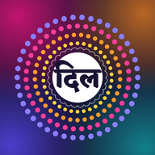

<!doctype html>
<html lang="en">
<head>
<meta charset="utf-8">
<meta name="viewport" content="width=device-width,initial-scale=1,viewport-fit=cover">
<meta name="apple-mobile-web-app-capable" content="yes">
<meta name="mobile-web-app-capable" content="yes">
<meta name="apple-mobile-web-app-status-bar-style" content="black-translucent">
<meta name="apple-mobile-web-app-title" content="Dil Se">
<meta name="application-name" content="Dil Se">
<meta name="description" content="Learn Hindi for the one you love: lessons, stories, conversations and spaced repetition.">
<meta name="theme-color" content="#F2F2F7" media="(prefers-color-scheme: light)">
<meta name="theme-color" content="#000000" media="(prefers-color-scheme: dark)">
<link rel="manifest" href="manifest.webmanifest">
<link rel="apple-touch-icon" href="icons/apple-touch-icon.png">
<link rel="icon" type="image/png" href="icons/icon-32.png">
<style>:root{color-scheme:light dark;padding-top:env(safe-area-inset-top,0px);padding-bottom:env(safe-area-inset-bottom,0px)}body{margin:0}img{max-width:100%}[hidden]{display:none!important}</style>
<script>window.__PWA=true;</script>
<title>Dil Se Hindi</title>
<link rel="preconnect" href="https://fonts.googleapis.com">
<link rel="preconnect" href="https://fonts.gstatic.com" crossorigin>
<link rel="stylesheet" href="https://fonts.googleapis.com/css2?family=Inter:wght@400;500;600;700;800&family=Noto+Sans+Devanagari:wght@400;500;600;700&display=swap">
<style>
/* Layout: an iOS-style app. Large titles, inset grouped lists, frosted bars, Fitness-style rings, app-icon gradients per unit. */
:root{
  /* neutrals: Apple grouped background system */
  --bg:#F2F2F7; --surface:#FFFFFF; --surface2:#F7F7FA; --sunk:rgba(118,118,128,.12); --fill:rgba(120,120,128,.16);
  --ink:#1C1C1E; --muted:#6E6E73; --line:rgba(60,60,67,.16); --glass:rgba(249,249,251,.78);
  /* tint + vivid system colours */
  --tint:#D92D5A; --on-tint:#FFFFFF; --tint-soft:rgba(217,45,90,.09);
  --marigold:#FF9500; --marigold-ink:#C45200; --marigold-soft:rgba(255,149,0,.14); --on-marigold:#FFFFFF;
  --peacock:#D92D5A; --peacock-soft:rgba(217,45,90,.09); --on-peacock:#FFFFFF;
  --rose:#D92D5A; --rose-soft:rgba(217,45,90,.09);
  --purple:#AF52DE; --indigo:#5856D6; --teal:#30B0C7; --mint:#00C7BE;
  --good:#1F8A3D; --good-soft:rgba(52,199,89,.16); --on-good:#FFFFFF;
  --bad:#D70015; --bad-soft:rgba(255,59,48,.12); --on-bad:#FFFFFF;
  /* Fitness rings */
  --r1a:#FA114F; --r1b:#FF6FA0; --r2a:#7DDA1F; --r2b:#B6FF3C; --r3a:#00C3E3; --r3b:#5CF2FF;
  --lockgrad:linear-gradient(145deg,#D1D1D6,#AEAEB2); --r1t:#D70F45; --r2t:#3F8A00; --r3t:#007E96;
  --hero:linear-gradient(110deg,#FF8A00 0%,#FF3B5C 62%,#E0115F 100%);
  --shadow:0 1px 2px rgba(0,0,0,.04),0 6px 24px -14px rgba(0,0,0,.18);
  --f-body:-apple-system,BlinkMacSystemFont,"SF Pro Text","Inter","Noto Sans Devanagari",system-ui,sans-serif;
  --f-display:-apple-system,BlinkMacSystemFont,"SF Pro Display","Inter","Noto Sans Devanagari",system-ui,sans-serif;
  --f-deva:"Kohinoor Devanagari","Noto Sans Devanagari",-apple-system,"Inter",sans-serif;
  --r:18px; --ease:cubic-bezier(.16,1,.3,1);
}
@media (prefers-color-scheme: dark){:root:not([data-theme="light"]){
  --bg:#000000; --surface:#1C1C1E; --surface2:#2C2C2E; --sunk:rgba(118,118,128,.24); --fill:rgba(120,120,128,.32);
  --ink:#F5F5F7; --muted:#98989F; --line:rgba(84,84,88,.6); --glass:rgba(22,22,24,.74);
  --tint:#F0476F; --on-tint:#FFFFFF; --tint-soft:rgba(240,71,111,.16);
  --marigold:#FF9F0A; --marigold-ink:#FFB340; --marigold-soft:rgba(255,159,10,.2); --on-marigold:#1C1C1E;
  --peacock:#F0476F; --peacock-soft:rgba(240,71,111,.16); --on-peacock:#FFFFFF;
  --rose:#F0476F; --rose-soft:rgba(240,71,111,.16);
  --purple:#BF5AF2; --indigo:#5E5CE6; --teal:#40C8E0; --mint:#63E6E2;
  --good:#30D158; --good-soft:rgba(48,209,88,.18); --on-good:#00230C;
  --bad:#FF453A; --bad-soft:rgba(255,69,58,.18); --on-bad:#2A0300;
  --lockgrad:linear-gradient(145deg,#48484A,#3A3A3C); --r1t:#FF5C8A; --r2t:#A6F23A; --r3t:#4CE8F7;
  --shadow:none; color-scheme:dark}}
:root[data-theme="dark"]{
  --bg:#000000; --surface:#1C1C1E; --surface2:#2C2C2E; --sunk:rgba(118,118,128,.24); --fill:rgba(120,120,128,.32);
  --ink:#F5F5F7; --muted:#98989F; --line:rgba(84,84,88,.6); --glass:rgba(22,22,24,.74);
  --tint:#F0476F; --on-tint:#FFFFFF; --tint-soft:rgba(240,71,111,.16);
  --marigold:#FF9F0A; --marigold-ink:#FFB340; --marigold-soft:rgba(255,159,10,.2); --on-marigold:#1C1C1E;
  --peacock:#F0476F; --peacock-soft:rgba(240,71,111,.16); --on-peacock:#FFFFFF;
  --rose:#F0476F; --rose-soft:rgba(240,71,111,.16);
  --purple:#BF5AF2; --indigo:#5E5CE6; --teal:#40C8E0; --mint:#63E6E2;
  --good:#30D158; --good-soft:rgba(48,209,88,.18); --on-good:#00230C;
  --bad:#FF453A; --bad-soft:rgba(255,69,58,.18); --on-bad:#2A0300;
  --lockgrad:linear-gradient(145deg,#48484A,#3A3A3C); --r1t:#FF5C8A; --r2t:#A6F23A; --r3t:#4CE8F7;
  --shadow:none; color-scheme:dark}

*{box-sizing:border-box}
html,body{height:100%}
body{background:var(--bg);color:var(--ink);font-family:var(--f-body);font-size:17px;line-height:1.42;letter-spacing:-.012em;-webkit-font-smoothing:antialiased;-webkit-tap-highlight-color:transparent}
body::before{content:"";position:fixed;inset:0 0 auto;height:env(safe-area-inset-top,0px);z-index:10;background:var(--glass);backdrop-filter:saturate(180%) blur(20px);-webkit-backdrop-filter:saturate(180%) blur(20px)}
button{font:inherit;color:inherit;letter-spacing:inherit}
button:focus-visible,input:focus-visible,select:focus-visible,summary:focus-visible,[tabindex]:focus-visible{outline:3px solid var(--tint);outline-offset:2px;border-radius:10px}
.deva{font-family:var(--f-deva);line-height:1.4;letter-spacing:0}
.wrap{max-width:600px;margin:0 auto;padding-left:max(16px,env(safe-area-inset-left,0px));padding-right:max(16px,env(safe-area-inset-right,0px));padding-block:0 110px}
h1,h2,h3{text-wrap:balance;margin:0;font-family:var(--f-display);letter-spacing:-.022em}
.eyebrow{font-size:12px;letter-spacing:.06em;text-transform:uppercase;font-weight:600;color:var(--muted)}
.muted{color:var(--muted)}
.icon{width:20px;height:20px;flex:none}
.grad-text{color:var(--rose)}

/* --- frosted top bar + large title --- */
.topbar{position:sticky;top:env(safe-area-inset-top,0px);z-index:5;margin:0 calc(-1 * max(16px,env(safe-area-inset-left,0px)));padding:10px max(16px,env(safe-area-inset-left,0px));background:var(--glass);backdrop-filter:saturate(180%) blur(20px);-webkit-backdrop-filter:saturate(180%) blur(20px);border-bottom:.5px solid var(--line)}
.tb{display:flex;align-items:center;gap:8px}
.brand{font-family:var(--f-display);font-weight:700;font-size:17px;letter-spacing:-.02em;margin-right:auto;display:flex;align-items:baseline;gap:5px}
.brand .deva{font-size:18px;font-weight:700}
.chip{display:inline-flex;align-items:center;gap:4px;padding:4px 10px;border-radius:999px;background:var(--sunk);font-weight:600;font-variant-numeric:tabular-nums;font-size:15px}
.chip .icon{width:16px;height:16px}
.chip.flame{color:var(--marigold)} .chip.flame.off{color:var(--muted)}
.chip.xp{color:var(--purple)}
.mini-rings{width:30px;height:30px;flex:none}
.large-title{font-size:34px;font-weight:700;letter-spacing:-.025em;line-height:1.12;margin:14px 0 14px}

/* --- segmented control --- */
.seg{display:grid;grid-template-columns:1fr 1fr;background:var(--sunk);border-radius:10px;padding:2px;gap:2px;margin:6px 0 22px}
.seg button{border:0;background:transparent;padding:7px 6px;border-radius:8px;font-weight:600;font-size:15px;cursor:pointer;color:var(--ink);display:flex;flex-direction:column;align-items:center;line-height:1.2}
.seg button small{font-weight:400;font-size:12px;color:var(--muted)}
.seg button[aria-pressed="true"]{background:var(--surface);box-shadow:0 3px 8px rgba(0,0,0,.12),0 0 0 .5px rgba(0,0,0,.04)}

/* --- buttons --- */
.btn{border:0;border-radius:14px;padding:13px 20px;font-weight:600;font-size:17px;cursor:pointer;background:var(--tint);color:var(--on-tint);transition:transform .12s,opacity .12s;white-space:nowrap}
.btn:active{transform:scale(.97);opacity:.85}
.btn.teal{background:var(--tint);color:var(--on-tint)}
.btn.ghost{background:var(--tint-soft);color:var(--tint)}
.btn.block{width:100%}
.btn.sm{padding:7px 16px;font-size:15px;border-radius:999px}
.btn[disabled]{background:var(--fill);color:var(--muted);cursor:not-allowed;transform:none}
.tipbtn{border:0;background:transparent;color:var(--tint);font-weight:500;cursor:pointer;padding:6px 2px;font-size:17px}

/* --- banners & rings card --- */
.banner{display:flex;gap:14px;align-items:center;padding:16px 18px;border-radius:var(--r);background:var(--surface);margin-bottom:16px;box-shadow:var(--shadow)}
.banner .t{flex:1;min-width:0}
.banner b{display:block;font-size:20px;font-family:var(--f-display);letter-spacing:-.02em;margin-bottom:2px}
.banner span{color:var(--muted);font-size:15px}
.welcome{background:var(--hero);color:#fff;box-shadow:0 12px 30px -16px rgba(255,45,85,.6)}
.welcome span{color:rgba(255,255,255,.9)}
.rings-card{display:flex;align-items:center;gap:18px;background:var(--surface);border-radius:var(--r);padding:16px 18px;box-shadow:var(--shadow)}
.rings-card svg{width:112px;height:112px;flex:none}
.ring-legend{display:flex;flex-direction:column;gap:6px;min-width:0}
.ring-legend div{display:flex;flex-direction:column;line-height:1.15}
.ring-legend span{font-size:13px;font-weight:600}
.ring-legend b{font-family:var(--f-display);font-size:20px;font-variant-numeric:tabular-nums;letter-spacing:-.02em}
.ring-legend b small{font-size:13px;color:var(--muted);font-weight:500}
.today{margin:10px 0 22px}
.ring-anim{animation:ringfill 1.2s cubic-bezier(.2,.8,.2,1) both}
@keyframes ringfill{from{stroke-dashoffset:var(--full)}}

/* --- inset grouped lists --- */
.group{background:var(--surface);border-radius:var(--r);box-shadow:var(--shadow);overflow:hidden}
.group > * + *{border-top:.5px solid var(--line)}
.trow{display:flex;align-items:center;justify-content:space-between;gap:12px;padding:12px 16px;min-height:52px;flex-wrap:wrap}
.trow > span{min-width:0;flex:1}
.tick{color:var(--good);font-weight:700;font-size:18px;flex:0 0 auto!important}
.cell{display:grid;grid-template-columns:auto 1fr auto;gap:2px 14px;align-items:center;padding:12px 14px 12px 14px;position:relative}
.cell-main{min-width:0;display:flex;flex-direction:column;gap:1px}
.cell-main b{font-size:17px;font-weight:600;letter-spacing:-.015em;line-height:1.25}
.cell-main span{font-size:14px;color:var(--muted);line-height:1.3}
.cell .appicon{grid-row:span 2;align-self:start}
.cell-meta{grid-column:2/4;display:flex;align-items:center;gap:8px;margin-top:4px;font-size:12px;color:var(--muted);font-variant-numeric:tabular-nums}
.cell-side{display:flex;align-items:center;gap:6px}
.pill{border:0;border-radius:999px;background:var(--tint-soft);color:var(--tint);font-weight:700;font-size:13px;letter-spacing:.02em;padding:6px 15px;cursor:pointer;text-transform:uppercase}
.pill.go{background:var(--tint);color:var(--on-tint)}
.info{width:44px;height:44px;margin:-9px -4px -9px -9px;border-radius:50%;border:0;background:transparent;color:var(--tint);cursor:pointer;display:grid;place-items:center}
.info .icon{width:22px;height:22px}
.appicon{width:56px;height:56px;border-radius:13px;display:grid;place-items:center;font-family:var(--f-deva);font-weight:700;color:#fff;background:linear-gradient(145deg,var(--g1),var(--g2));box-shadow:inset 0 1px 0 rgba(255,255,255,.25),0 4px 12px -6px var(--g2);text-shadow:0 1px 2px rgba(0,0,0,.18);overflow:hidden;line-height:1}
.cell.locked .appicon{background:var(--lockgrad);box-shadow:none}
.cell.locked .cell-main b{color:var(--muted)}
.lockmsg{font-size:13px;color:var(--muted);display:inline-flex;gap:5px;align-items:center}
.lockmsg .icon{width:15px;height:15px}
.pips{display:flex;gap:3px}
.pip{width:16px;height:5px;border-radius:3px;background:var(--fill)}
.pip.on{background:var(--good)}
.cell.done .pip.on{background:linear-gradient(90deg,var(--r2a),var(--r2b))}
.scene-cell .appicon{--g1:#FF2D55;--g2:#FF9500}
.scene-cell .appicon .icon{width:26px;height:26px}

/* --- stages --- */
.stage{display:flex;flex-direction:column;gap:12px;margin-bottom:34px}
.stage-h{display:flex;flex-direction:column;gap:6px;padding:0 4px}
.stage-h h2{font-size:28px;font-weight:700}
.stage-h p{margin:0;color:var(--muted);font-size:15px;max-width:60ch}
.stage-h small{font-size:13px}
.stage.locked .stage-h{opacity:.55}
.xpbar{height:8px;background:var(--fill);border-radius:999px;overflow:hidden}
.xpbar i{display:block;height:100%;border-radius:999px;background:var(--hero)}

/* --- frosted tab bar --- */
.nav{position:fixed;left:0;right:0;bottom:0;z-index:6;background:var(--glass);backdrop-filter:saturate(180%) blur(20px);-webkit-backdrop-filter:saturate(180%) blur(20px);border-top:.5px solid var(--line);padding-bottom:env(safe-area-inset-bottom,0px);padding-left:env(safe-area-inset-left,0px);padding-right:env(safe-area-inset-right,0px)}
.nav .in{max-width:600px;margin:0 auto;display:grid;grid-template-columns:repeat(5,1fr)}
.nav button{border:0;background:transparent;padding:7px 2px 6px;min-height:50px;display:flex;flex-direction:column;align-items:center;gap:2px;font-size:12px;font-weight:500;letter-spacing:0;color:var(--muted);cursor:pointer;position:relative}
.nav button .icon{width:25px;height:25px}
.nav button[aria-current="page"]{color:var(--tint)}
.nav .dot{position:absolute;top:3px;left:calc(50% + 7px);min-width:18px;height:18px;padding:0 5px;border-radius:9px;background:#FF3B30;color:#fff;font-size:12px;font-weight:600;line-height:18px;font-variant-numeric:tabular-nums}

/* --- session --- */
.session{max-width:600px;margin:0 auto;min-height:100%;display:flex;flex-direction:column;padding-left:max(16px,env(safe-area-inset-left,0px));padding-right:max(16px,env(safe-area-inset-right,0px));padding-block:10px 0}
.shead{display:flex;align-items:center;gap:12px;padding:6px 0 18px}
.iconbtn{border:0;background:var(--sunk);border-radius:50%;width:32px;height:32px;cursor:pointer;color:var(--muted);display:grid;place-items:center}
.iconbtn .icon{width:16px;height:16px}
.progress{flex:1;height:8px;border-radius:999px;background:var(--fill);overflow:hidden}
.progress i{display:block;height:100%;background:var(--hero);border-radius:999px;transition:width .4s cubic-bezier(.2,.8,.2,1)}
.combo{font-weight:700;font-size:15px;min-width:64px;text-align:right;font-variant-numeric:tabular-nums;color:var(--rose)}
.sbody{flex:1;display:flex;flex-direction:column;gap:16px;padding-bottom:24px}
.kind{font-family:var(--f-display);font-weight:700;font-size:24px;letter-spacing:-.022em}
.prompt{display:flex;align-items:center;gap:12px;flex-wrap:wrap}
.big{font-family:var(--f-deva);font-size:clamp(34px,10vw,52px);line-height:1.3;font-weight:600}
.huge{font-family:var(--f-deva);font-size:clamp(84px,27vw,132px);line-height:1.1;text-align:center;font-weight:500}
.rom{color:var(--muted);font-size:17px;font-weight:500}
.rom.hid{cursor:pointer;background:var(--sunk);border-radius:8px;padding:2px 10px;color:transparent;text-shadow:0 0 9px var(--muted);user-select:none}
.en-prompt{font-size:22px;font-weight:600;line-height:1.3;letter-spacing:-.018em}
.say{width:50px;height:50px;border-radius:50%;border:0;background:var(--tint);color:var(--on-tint);display:grid;place-items:center;cursor:pointer;flex:none;transition:transform .12s}
.say:active{transform:scale(.92)}
.say.slow{width:40px;height:40px;background:var(--tint-soft);color:var(--tint)}
.say.xl{width:104px;height:104px;background:var(--hero);color:#fff;box-shadow:0 14px 30px -14px rgba(255,45,85,.7)}
.say.xl .icon{width:42px;height:42px}
.say.plus{font-size:22px;font-weight:600}
.say.rec{background:var(--rose);color:#fff}
.opts{display:grid;gap:10px}
.opt{border:0;background:var(--surface);border-radius:16px;padding:13px 16px;text-align:left;cursor:pointer;display:flex;gap:14px;align-items:center;min-height:58px;box-shadow:var(--shadow),inset 0 0 0 1px var(--line);transition:transform .1s,box-shadow .15s}
.opt:active{transform:scale(.985)}
.opt .k{width:24px;height:24px;border-radius:50%;background:var(--sunk);display:grid;place-items:center;font-size:12px;font-weight:600;color:var(--muted);flex:none}
.opt .txt{min-width:0;display:flex;flex-direction:column}
.opt .txt .deva{font-size:23px}
.opt .txt small{color:var(--muted);font-size:14px}
.opt.letter .txt .deva{font-size:38px}
.opt[aria-pressed="true"]{box-shadow:inset 0 0 0 2.5px var(--tint);background:var(--tint-soft)}
.opt[aria-pressed="true"] .k{background:var(--tint);color:var(--on-tint)}
.opt.right{box-shadow:inset 0 0 0 2.5px var(--good);background:var(--good-soft)}
.opt.right .k{background:var(--good);color:var(--on-good)}
.opt.wrong{box-shadow:inset 0 0 0 2.5px var(--bad);background:var(--bad-soft)}
.opt[disabled]{cursor:default}
.intro{background:var(--surface);border-radius:24px;box-shadow:var(--shadow);padding:24px 20px;display:flex;flex-direction:column;gap:12px}
.intro .newtag{align-self:flex-start;background:var(--hero);color:#fff;font-weight:700;font-size:12px;letter-spacing:.06em;text-transform:uppercase;padding:4px 11px;border-radius:999px}
.intro .newtag.love{background:linear-gradient(100deg,#FF2D55,#FF6FA0)}
.intro .en{font-size:21px;font-weight:600;letter-spacing:-.018em}
.note{background:var(--surface2);border-radius:14px;padding:11px 14px;font-size:15px;color:var(--ink);line-height:1.45}
.note b{color:var(--tint)}
.typein{width:100%;font:inherit;font-size:20px;padding:15px 16px;border-radius:14px;border:0;background:var(--surface);color:var(--ink);box-shadow:var(--shadow),inset 0 0 0 1px var(--line)}
.typein:focus{outline:none;box-shadow:inset 0 0 0 2.5px var(--tint)}
.answer-zone{min-height:66px;border-bottom:1px solid var(--line);display:flex;flex-wrap:wrap;gap:8px;padding:6px 0 12px;align-content:flex-start}
.bank{display:flex;flex-wrap:wrap;gap:8px;justify-content:center;padding-top:6px}
.tile{border:0;background:var(--surface);border-radius:12px;padding:7px 13px;cursor:pointer;display:flex;flex-direction:column;align-items:center;box-shadow:var(--shadow),inset 0 0 0 1px var(--line);line-height:1.2}
.tile .deva{font-size:22px}
.tile small{font-size:12px;color:var(--muted)}
.tile.used{visibility:hidden}
.tile[disabled]{cursor:default}
.match{display:grid;grid-template-columns:1fr 1fr;gap:10px}
.match .col{display:flex;flex-direction:column;gap:10px;min-width:0}
.mbtn{border:0;background:var(--surface);border-radius:14px;padding:10px;min-height:60px;cursor:pointer;box-shadow:var(--shadow),inset 0 0 0 1px var(--line);display:flex;flex-direction:column;align-items:center;justify-content:center;text-align:center;line-height:1.25;font-size:15px}
.mbtn .deva{font-size:22px}
.mbtn small{color:var(--muted);font-size:12px}
.mbtn[aria-pressed="true"]{box-shadow:inset 0 0 0 2.5px var(--tint);background:var(--tint-soft)}
.mbtn.gone{opacity:0;pointer-events:none;transform:scale(.92);transition:opacity .25s,transform .25s}
.mbtn.shake{animation:shake .3s;box-shadow:inset 0 0 0 2.5px var(--bad)}
@keyframes shake{25%{transform:translateX(-5px)}75%{transform:translateX(5px)}}
.sfoot{position:sticky;bottom:0;margin:0 calc(-1 * max(16px,env(safe-area-inset-left,0px)));padding:14px max(16px,env(safe-area-inset-left,0px)) calc(14px + env(safe-area-inset-bottom,0px));background:var(--glass);backdrop-filter:saturate(180%) blur(20px);-webkit-backdrop-filter:saturate(180%) blur(20px);border-top:.5px solid var(--line)}
.sfoot.good{background:color-mix(in srgb,var(--good) 16%,var(--bg))}
.sfoot.bad{background:color-mix(in srgb,var(--bad) 13%,var(--bg))}
.fb{display:flex;flex-direction:column;gap:3px;margin-bottom:12px}
.fb b{font-family:var(--f-display);font-size:22px;letter-spacing:-.02em}
.sfoot.good .fb b{color:var(--good)} .sfoot.bad .fb b{color:var(--bad)}
.fb .deva{font-size:22px}
.fb small{color:var(--muted);font-size:15px}
.sfoot.good .btn{background:var(--good);color:var(--on-good)}
.sfoot.bad .btn{background:var(--bad);color:var(--on-bad)}
.footrow{display:flex;gap:10px}
.footrow .btn{flex:1}
.speakcard{background:var(--surface);border-radius:20px;box-shadow:var(--shadow);padding:20px;display:flex;flex-direction:column;gap:10px;min-height:124px;justify-content:center}
.mic{border:0;background:var(--tint-soft);color:var(--tint);border-radius:16px;padding:16px;display:flex;gap:10px;align-items:center;justify-content:center;font-weight:600;cursor:pointer;width:100%}
.mic.on{background:var(--rose);color:#fff;animation:pulse 1.4s infinite}
@keyframes pulse{50%{box-shadow:0 0 0 10px rgba(255,45,85,0)}0%{box-shadow:0 0 0 0 rgba(255,45,85,.45)}}
.gap{display:inline-block;min-width:2.2em;border-bottom:3px solid var(--tint);text-align:center;color:var(--tint);margin:0 .15em}
.gap.filled{border-bottom-color:var(--good);color:var(--good)}

/* --- results --- */
.result{text-align:center;display:flex;flex-direction:column;gap:18px;padding-top:34px;align-items:center}
.result > *{width:100%}
.result h1{font-size:40px;font-weight:800;letter-spacing:-.03em}
.result .big{color:var(--marigold-ink)}
.result .bigrings{width:170px;height:170px}
.stats3{display:grid;grid-template-columns:repeat(3,1fr);gap:10px}
.stat{background:var(--surface);border-radius:18px;padding:14px 8px;box-shadow:var(--shadow)}
.stat b{display:block;font-family:var(--f-display);font-size:26px;font-variant-numeric:tabular-nums;letter-spacing:-.02em}
.stat span{font-size:12px;color:var(--muted);font-weight:600;text-transform:uppercase;letter-spacing:.05em}
.achv-new{background:var(--surface);border-radius:18px;padding:12px 14px;text-align:left;display:flex;gap:14px;align-items:center;box-shadow:var(--shadow)}

/* --- lists, phrasebook --- */
.section-title{display:flex;align-items:baseline;justify-content:space-between;gap:10px;margin:28px 4px 10px}
.section-title h2{font-size:22px;font-weight:700}
.phrase{display:grid;grid-template-columns:1fr auto;gap:2px 12px;align-items:center;padding:12px 16px}
.phrase .deva{font-size:21px}
.phrase .meta{display:flex;flex-direction:column;min-width:0}
.phrase small{color:var(--muted);font-size:14px}
.phrase .en{font-weight:500;font-size:16px}
#book-list{background:var(--surface);border-radius:var(--r);box-shadow:var(--shadow);overflow:hidden}
#book-list > * + *{border-top:.5px solid var(--line)}
.strength{display:flex;gap:2px;margin-top:5px}
.strength i{width:12px;height:4px;border-radius:2px;background:var(--fill)}
.strength i.on{background:var(--good)}
.search{width:100%;font:inherit;padding:10px 14px;border-radius:12px;border:0;background:var(--sunk);color:var(--ink)}
.filters{display:flex;gap:8px;flex-wrap:wrap;margin:10px 0 6px}
.fchip{border:0;background:var(--sunk);border-radius:999px;padding:6px 14px;font-weight:600;font-size:14px;cursor:pointer;color:var(--ink)}
.fchip[aria-pressed="true"]{background:var(--ink);color:var(--bg)}
.empty{background:var(--surface);border-radius:var(--r);padding:26px 22px;text-align:center;color:var(--muted);box-shadow:var(--shadow)}
.empty b{display:block;color:var(--ink);font-size:19px;margin-bottom:4px;font-family:var(--f-display)}

/* --- profile --- */
.hero{background:var(--surface);border-radius:var(--r);box-shadow:var(--shadow);padding:18px;display:flex;flex-direction:column;gap:10px;margin-top:4px}
.hero .lvl{display:flex;align-items:center;gap:14px}
.badge{width:66px;height:66px;border-radius:50%;background:var(--hero);color:#fff;display:grid;place-items:center;font-family:var(--f-display);font-weight:800;font-size:30px;flex:none;box-shadow:0 10px 24px -12px rgba(255,45,85,.7)}
.hero h2{font-size:24px;font-weight:700}
.grid2{display:grid;grid-template-columns:repeat(auto-fit,minmax(130px,1fr));gap:10px}
.week{display:grid;grid-template-columns:repeat(7,1fr);gap:6px;align-items:end;height:126px;padding-top:8px}
.week .d{display:flex;flex-direction:column;align-items:center;gap:4px;height:100%;justify-content:flex-end;font-size:12px;color:var(--muted);font-weight:600}
.week .b{width:100%;max-width:28px;border-radius:7px;background:var(--fill);min-height:5px}
.week .b.on{background:linear-gradient(180deg,var(--r1b),var(--r1a))}
.week .b.goal{background:linear-gradient(180deg,var(--r2b),var(--r2a))}
.week .v{font-variant-numeric:tabular-nums}
.achs{display:grid;grid-template-columns:repeat(auto-fill,minmax(140px,1fr));gap:10px}
.ach{background:var(--surface);border-radius:18px;padding:14px 12px;box-shadow:var(--shadow);display:flex;flex-direction:column;align-items:center;text-align:center;gap:5px}
.ach .deva{width:62px;height:62px;border-radius:50%;display:grid;place-items:center;font-size:18px;font-weight:700;color:#fff;background:conic-gradient(from 210deg,#FFD60A,#FF9500,#FF3B5C,#FF9500,#FFD60A);box-shadow:inset 0 0 0 4px rgba(255,255,255,.35),0 8px 18px -10px rgba(255,59,92,.7);text-shadow:0 1px 2px rgba(0,0,0,.3);line-height:1}
.ach b{font-size:15px;line-height:1.2}
.ach small{color:var(--muted);font-size:12.5px;line-height:1.3}
.ach.locked{box-shadow:none;background:transparent;outline:1px dashed var(--line);outline-offset:-1px}
.ach.locked .deva{background:var(--fill);color:var(--muted);box-shadow:none;text-shadow:none}
.setting{display:flex;justify-content:space-between;align-items:center;gap:12px;padding:12px 16px;flex-wrap:wrap}
.setting label{font-weight:500}
.setting small{display:block;color:var(--muted);font-weight:400;font-size:13px}
.setting select,.setting input{font:inherit;font-size:16px;padding:8px 10px;border-radius:10px;border:0;background:var(--sunk);color:var(--ink);max-width:100%}
.settings-group{padding:0!important;gap:0!important}
.settings-group > * + *{border-top:.5px solid var(--line)}
.sync{font-size:13px;color:var(--muted);display:flex;gap:6px;align-items:center;margin:12px 4px 0}
.sync i{width:8px;height:8px;border-radius:50%;background:var(--muted)}
.sync.cloud i{background:var(--good)}
.danger{color:var(--bad);border:0;background:transparent;font-weight:500;cursor:pointer;padding:12px 4px}

/* --- sheets --- */
.modal{position:fixed;inset:0;z-index:20;background:rgba(0,0,0,.4);display:flex;align-items:flex-end;justify-content:center;padding:0;animation:fade .2s}
@keyframes fade{from{opacity:0}}
.sheet{background:var(--surface);color:var(--ink);border-radius:22px 22px 0 0;max-width:600px;width:100%;max-height:88%;overflow:auto;padding:10px 22px calc(22px + env(safe-area-inset-bottom,0px));display:flex;flex-direction:column;gap:12px;animation:rise .32s cubic-bezier(.2,.9,.25,1)}
.sheet::before{content:"";align-self:center;width:38px;height:5px;border-radius:3px;background:var(--fill);margin-bottom:6px}
@keyframes rise{from{transform:translateY(40px);opacity:0}}
.sheet h2{font-size:28px;font-weight:700}
.sheet p{margin:0}
.sheet table{border-collapse:collapse;width:100%;font-size:15px}
.sheet td{padding:7px 8px;border-bottom:.5px solid var(--line);vertical-align:top}
.sheet td.deva{font-size:20px;white-space:nowrap}
.tablewrap{overflow-x:auto}
.toast{position:fixed;left:50%;transform:translateX(-50%);bottom:calc(92px + env(safe-area-inset-bottom,0px));z-index:30;background:var(--glass);backdrop-filter:saturate(180%) blur(20px);-webkit-backdrop-filter:saturate(180%) blur(20px);color:var(--ink);padding:11px 18px;border-radius:999px;font-weight:600;font-size:15px;box-shadow:0 10px 30px -10px rgba(0,0,0,.35),inset 0 0 0 .5px var(--line);max-width:calc(100% - 32px);animation:rise .25s}

/* --- practice: stories, gyms, talk, notes --- */
.stories{display:grid;grid-template-columns:repeat(auto-fill,minmax(170px,1fr));gap:10px}
.story{background:var(--surface);border-radius:18px;box-shadow:var(--shadow);padding:14px;display:flex;flex-direction:column;gap:4px;align-items:flex-start;position:relative;overflow:hidden}
.story::before{content:"";position:absolute;inset:0 0 auto;height:4px;background:var(--hero)}
.story small{color:var(--muted);font-size:13px;line-height:1.3}
.story b{font-size:16px}
.story .btn{margin-top:auto}
.story.locked{opacity:.55;box-shadow:none;outline:1px dashed var(--line);outline-offset:-1px}
.story.locked::before{display:none}
.sline{display:flex;justify-content:space-between;align-items:center;width:100%}
.lvl{display:inline-block;font-size:11px;font-weight:700;letter-spacing:.05em;background:var(--tint-soft);color:var(--tint);border-radius:6px;padding:2px 7px}
.hero .lvl{background:none;padding:0;border-radius:0;font-size:inherit;letter-spacing:inherit}
.lines{list-style:none;margin:16px 0;padding:0;display:flex;flex-direction:column;background:var(--surface);border-radius:var(--r);box-shadow:var(--shadow);overflow:hidden}
.lines li{display:grid;grid-template-columns:1fr auto;gap:10px;padding:14px 16px;align-items:start}
.lines li + li{border-top:.5px solid var(--line)}
.lmain{display:flex;flex-direction:column;gap:5px;min-width:0}
.lmain .deva{font-size:22px}
.lmain small{color:var(--muted);font-size:15px}
.lbtns{display:flex;gap:6px}
.gram{background:var(--surface);border-radius:16px;padding:13px 16px;margin-bottom:8px;box-shadow:var(--shadow)}
.gram summary{font-weight:600;cursor:pointer}
.gram.inner{box-shadow:none;background:var(--surface2);margin:8px 0 0}
.gbody{padding-top:8px;line-height:1.55;font-size:16px}
.gbody table{border-collapse:collapse}
.gbody td{padding:5px 8px;border-bottom:.5px solid var(--line)}
.talkcard{gap:8px;background:linear-gradient(140deg,color-mix(in srgb,var(--rose) 14%,var(--surface)),var(--surface) 70%)}
.gymgrid{display:grid;grid-template-columns:repeat(auto-fit,minmax(250px,1fr));gap:10px}
.gymcard{position:relative;overflow:hidden}
.gymcard .gi{width:44px;height:44px;border-radius:11px;display:grid;place-items:center;color:#fff;font-weight:800;font-family:var(--f-display);background:linear-gradient(145deg,var(--g1),var(--g2))}
.gymrow{display:flex;gap:8px;flex-wrap:wrap}
.chipx{background:var(--sunk);border-radius:999px;padding:5px 12px;font-weight:600;font-size:14px}
.chipx .deva{font-size:18px}
.numtable{display:grid;grid-template-columns:repeat(auto-fill,minmax(104px,1fr));gap:6px;margin-top:8px}
.numtable div{display:flex;flex-direction:column;background:var(--surface);border-radius:10px;padding:6px 9px;line-height:1.25}
.numtable .deva{font-size:18px}
.numtable small{color:var(--muted);font-size:12px}
.note-card{background:var(--surface);border-radius:20px;box-shadow:var(--shadow);padding:16px 18px;display:flex;flex-direction:column;gap:6px;margin-bottom:10px;position:relative;overflow:hidden}
.note-card::before{content:"";position:absolute;left:0;top:0;bottom:0;width:4px;background:linear-gradient(180deg,#FF2D55,#AF52DE)}
.chat{display:flex;flex-direction:column;gap:8px;margin-bottom:12px}
.msg{max-width:84%;padding:10px 14px;display:flex;flex-direction:column;gap:4px;min-width:0;border-radius:20px}
.msg.them{align-self:flex-start;background:var(--surface);box-shadow:var(--shadow);border-bottom-left-radius:6px}
.msg.me{align-self:flex-end;background:var(--tint);color:#fff;border-bottom-right-radius:6px}
.msg .who{font-size:12px;font-weight:600;color:var(--rose);letter-spacing:.02em}
.msg .deva{font-size:20px}
.msg small{color:var(--muted)}
.mbtns{display:flex;flex-wrap:wrap;gap:6px;margin-top:4px;align-items:center}
.wchip{border:0;background:var(--sunk);border-radius:999px;padding:4px 11px;font-size:13px;cursor:pointer;color:var(--ink);font-weight:500}
.wchip .deva{font-size:15px}
.corr{background:var(--surface);color:var(--ink);border-radius:14px;padding:9px 11px;margin-top:6px;display:flex;flex-direction:column;gap:2px;font-size:14px}
.corr b{color:var(--marigold-ink)}
.typing{flex-direction:row;gap:5px;padding:14px}
.typing span{width:8px;height:8px;border-radius:50%;background:var(--muted);animation:blink 1.2s infinite}
.typing span:nth-child(2){animation-delay:.2s}.typing span:nth-child(3){animation-delay:.4s}
@keyframes blink{50%{opacity:.25}}
.talkbar{display:flex;gap:8px;align-items:center}
.talkbar input{flex:1;min-width:0;font:inherit;font-size:17px;padding:11px 16px;border-radius:999px;border:0;background:var(--surface);color:var(--ink);box-shadow:inset 0 0 0 1px var(--line)}
.talkbar .btn{border-radius:999px;padding:11px 18px}
.hintcard{background:var(--tint-soft);border-radius:16px;padding:11px 14px;margin-bottom:10px;display:flex;flex-direction:column;gap:2px}
.bubble{background:var(--surface);border-radius:22px;border-bottom-left-radius:6px;box-shadow:var(--shadow);padding:16px 18px;display:flex;flex-direction:column;gap:10px}
.clockwrap{display:flex;align-items:center;justify-content:center;gap:22px;flex-wrap:wrap;padding:4px 0}
.clock{width:170px;height:170px}
.digi{font-family:var(--f-display);font-size:44px;font-weight:700;font-variant-numeric:tabular-nums;letter-spacing:-.03em}
.digi.sm{font-size:24px}
.clockopts{grid-template-columns:1fr 1fr}
.subtitle{margin:-8px 4px 16px;color:var(--muted);font-size:15px}
.cell-main .ce{font-style:normal;font-size:12px;font-weight:600;color:var(--rose)}

.wrap{position:relative;z-index:1}
.greet{margin:18px 4px 18px;display:flex;flex-direction:column;gap:2px}
.greet .gh{font-size:40px;font-weight:700;line-height:1.15;letter-spacing:0}
.greet .gs{font-size:15px;color:var(--muted);font-weight:500}
/* ---- layer 2: glass panel floating on the sky ---- */
.rings-card{background:color-mix(in srgb,var(--surface) 70%,transparent);backdrop-filter:blur(26px) saturate(170%);-webkit-backdrop-filter:blur(26px) saturate(170%);box-shadow:inset 0 1px 0 rgba(255,255,255,.45),0 24px 48px -28px rgba(60,20,0,.45)}
/* ---- shirorekha progress: units hang from a headline bar like letters ---- */
.rekha{display:flex;gap:4px;height:26px;border-top:4px solid var(--ink);border-radius:2px;padding:0 2px;margin-top:4px}
.rekha i{flex:1;position:relative}
.rekha i::after{content:"";position:absolute;left:50%;top:0;width:4px;margin-left:-2px;border-radius:0 0 3px 3px;height:calc(4px + var(--h) * 6px);background:var(--fill);transition:height .4s var(--ease)}
.rekha i.part::after{background:var(--marigold)}
.rekha i.full::after{background:var(--good)}
.sh-top{display:flex;align-items:center;gap:8px;flex-wrap:wrap}
.tag{font-size:12px;font-weight:600;padding:3px 9px;border-radius:999px;background:var(--fill);color:var(--ink)}
.tag.here{background:var(--rose);color:#fff}
.backbtn{display:inline-flex;align-items:center;gap:2px;border:0;background:transparent;color:var(--tint);font-size:17px;cursor:pointer;padding:10px 4px 10px 0;min-height:44px}
.backbtn .icon{width:22px;height:22px}
.tick .icon{width:22px;height:22px}
/* ---- motion: one focal moment + quiet transitions ---- */
.v-enter > *:nth-child(-n+5){animation:vin .34s var(--ease) both}
.v-enter > *:nth-child(2){animation-delay:.03s}.v-enter > *:nth-child(3){animation-delay:.06s}.v-enter > *:nth-child(4){animation-delay:.09s}.v-enter > *:nth-child(5){animation-delay:.12s}
@keyframes vin{from{opacity:0;transform:translateY(10px)}}
.sbody.fresh > *{animation:sin .3s var(--ease) both}
.sbody.fresh > *:nth-child(2){animation-delay:.03s}.sbody.fresh > *:nth-child(3){animation-delay:.06s}.sbody.fresh > *:nth-child(4){animation-delay:.09s}
@keyframes sin{from{opacity:0;transform:translateX(16px)}}
.sfoot.good,.sfoot.bad{animation:fbup .24s var(--ease) both}
@keyframes fbup{from{transform:translateY(18px);opacity:.4}}
.opt.right{animation:pop .32s var(--ease)}
@keyframes pop{40%{transform:scale(1.03)}}
.pill:active,.info:active,.fchip:active,.backbtn:active{transform:scale(.95);transition:transform .1s}
.petals{position:fixed;inset:0;width:100%;height:100%;pointer-events:none;z-index:40}
.install{display:flex;gap:12px;align-items:center;background:color-mix(in srgb,var(--surface) 75%,transparent);backdrop-filter:blur(20px);-webkit-backdrop-filter:blur(20px);border-radius:var(--r);padding:12px 14px;margin-bottom:14px;box-shadow:var(--shadow)}
.install img{width:44px;height:44px;border-radius:10px;flex:none}
.install small{color:var(--muted);display:block}
.xfer{width:100%;min-height:70px;font:inherit;font-size:16px;padding:10px 12px;border-radius:12px;border:0;background:var(--sunk);color:var(--ink);resize:vertical}

/* ===== Calm layer: one accent, more space, fewer boxes ===== */
body{font-size:17px}
.head{display:flex;align-items:flex-end;justify-content:space-between;gap:12px;padding:18px 4px 6px}
.head.slim{padding-top:12px;justify-content:flex-end}
.head-text{min-width:0}
.head-cap{margin:0 0 2px;font-size:15px;color:var(--muted);font-weight:500}
.head-cap .deva{font-weight:600;color:var(--ink)}
.head-chips{display:flex;gap:6px;padding-bottom:6px}
.large-title{margin:0;font-size:34px;font-weight:700;letter-spacing:-.022em}
.chip{background:var(--surface);box-shadow:inset 0 0 0 1px var(--line)}
.chip.xp{color:var(--ink)} .chip.xp .icon{color:var(--tint)}
.lede{margin:6px 4px 16px;color:var(--muted);font-size:16px;line-height:1.5;max-width:52ch}
.today-card{background:var(--surface);border-radius:20px;padding:18px;margin:12px 0 22px;display:flex;flex-direction:column;gap:16px;box-shadow:0 1px 2px rgba(0,0,0,.04),0 10px 30px -18px rgba(0,0,0,.25)}
.tc-top{display:flex;align-items:center;gap:16px}
.goal-ring{width:64px;height:64px;flex:none}
.tc-stats{display:flex;flex-direction:column;gap:1px;min-width:0}
.tc-stats b{font-size:22px;font-weight:700;letter-spacing:-.02em;font-variant-numeric:tabular-nums}
.tc-stats b small{font-size:15px;font-weight:500;color:var(--muted);letter-spacing:0}
.tc-stats span{font-size:14px;color:var(--muted)}
.btn.cta{display:flex;flex-direction:column;align-items:center;gap:1px;padding:14px 18px;border-radius:14px}
.btn.cta small{font-size:13px;font-weight:500;opacity:.85}
.tc-links{display:flex;flex-wrap:wrap;gap:4px 18px;justify-content:center;margin-top:-4px}
.link{border:0;background:none;color:var(--tint);font-weight:600;font-size:15px;padding:8px 2px;cursor:pointer;min-height:44px}
.install{position:relative;display:flex;gap:12px;align-items:center;background:var(--surface);backdrop-filter:none;-webkit-backdrop-filter:none;border-radius:16px;padding:10px 44px 10px 12px;margin:0 0 20px;box-shadow:inset 0 0 0 1px var(--line)}
.install img{width:40px;height:40px;border-radius:9px}
.install b{font-size:15px}
.install small{font-size:13px}
.install .x{position:absolute;right:2px;top:50%;transform:translateY(-50%);width:44px;height:44px;border:0;background:none;color:var(--muted);display:grid;place-items:center;cursor:pointer}
.install .x .icon{width:16px;height:16px}
.seg{margin:0 0 26px}
.seg button{flex-direction:row;gap:6px;justify-content:center;padding:8px 6px;font-size:15px}
.seg button .deva{font-weight:500;color:var(--muted);font-size:14px}
.stage{gap:12px;margin-bottom:30px}
.stage-h{gap:4px;padding:0 4px}
.sh-row{display:flex;align-items:flex-end;justify-content:space-between;gap:12px}
.caption{margin:0;font-size:13px;color:var(--muted);font-weight:500}
.stage-h h2{font-size:24px}
.count{font-size:15px;color:var(--muted);font-weight:600;font-variant-numeric:tabular-nums;padding-bottom:3px}
.can{margin:2px 0 6px;color:var(--muted);font-size:15px;line-height:1.45}
.rekha{border-top-width:3px;border-top-color:var(--line);height:20px;gap:5px;margin-top:2px}
.rekha i::after{width:3px;margin-left:-1.5px;height:calc(3px + var(--h) * 5px)}
.rekha i.part::after{background:var(--tint)}
.group{border-radius:16px;box-shadow:0 1px 2px rgba(0,0,0,.04)}
.group > * + *{border-top:0;box-shadow:inset 0 .5px 0 var(--line)}
.row{all:unset;box-sizing:border-box;display:flex;align-items:center;gap:14px;width:100%;padding:12px 14px 12px 14px;min-height:64px;cursor:pointer;-webkit-tap-highlight-color:transparent;transition:background .15s}
.row:hover{background:var(--surface2)}
.row:active{background:var(--sunk)}
.row:focus-visible{outline:3px solid var(--tint);outline-offset:-3px;border-radius:16px}
.row[disabled]{cursor:default}
.row[disabled]:hover,.row[disabled]:active{background:transparent}
.glyph-tile{width:44px;height:44px;border-radius:11px;flex:none;display:grid;place-items:center;font-family:var(--f-deva);font-weight:600;line-height:1;color:var(--ink);background:var(--surface2);box-shadow:inset 0 0 0 1px var(--line);overflow:hidden}
.glyph-tile.chat{color:var(--tint);background:var(--tint-soft);box-shadow:none}
.glyph-tile.chat .icon{width:22px;height:22px}
.row.next .glyph-tile{background:var(--tint);color:#fff;box-shadow:none}
.row.done .glyph-tile{background:var(--good-soft);color:var(--good);box-shadow:none}
.row.locked .glyph-tile{color:var(--muted);background:transparent}
.row-main{flex:1;min-width:0;display:flex;flex-direction:column;gap:2px}
.row-main b{font-size:17px;font-weight:600;letter-spacing:-.012em;line-height:1.25}
.row-main > span{font-size:14px;color:var(--muted);line-height:1.3}
.row.locked .row-main b{color:var(--muted);font-weight:500}
.row.next .row-main b{color:var(--ink)}
.thin{display:block;height:3px;border-radius:2px;background:var(--fill);margin-top:6px;max-width:160px;overflow:hidden}
.thin i{display:block;height:100%;background:var(--tint);border-radius:2px}
.row-end{flex:none;color:var(--muted);display:grid;place-items:center;opacity:.7}
.row-end .icon{width:18px;height:18px}
.done-badge{width:24px;height:24px;border-radius:50%;background:var(--good);color:#fff;display:grid;place-items:center}
.done-badge .icon{width:15px;height:15px}
.foot-note{margin:0 4px;color:var(--muted);font-size:13px;text-align:center}
.us-head{display:flex;gap:14px;align-items:flex-start}
.us-head h2{font-size:24px}
.us-head p{margin:4px 0 0;font-size:15px}
.glyph-tile.lg{width:60px;height:60px;border-radius:14px;background:var(--tint);color:#fff;box-shadow:none}
.us-stats{display:grid;grid-template-columns:repeat(3,1fr);background:var(--surface2);border-radius:14px;padding:12px 4px}
.us-stats div{display:flex;flex-direction:column;align-items:center;gap:1px}
.us-stats b{font-size:17px;font-variant-numeric:tabular-nums}
.us-stats span{font-size:12px;color:var(--muted)}
.us-tips{background:var(--surface2);border-radius:14px;padding:12px 14px}
.us-tips summary{font-weight:600;cursor:pointer;color:var(--tint)}
/* buttons, lessons, results */
.btn{font-weight:600}
.btn.ghost{background:var(--tint-soft);color:var(--tint)}
.say.xl{background:var(--tint);box-shadow:0 14px 30px -16px var(--tint)}
.intro{border-radius:20px;padding:26px 22px;gap:14px}
.intro .newtag{background:var(--tint-soft);color:var(--tint);font-size:12px;letter-spacing:.02em;text-transform:none;font-weight:600}
.intro .newtag.love{background:var(--tint-soft)}
.intro .big,.big{font-weight:600}
.intro{align-items:center;text-align:center;padding:32px 22px 26px}
.intro .newtag{align-self:center}
.intro .prompt{justify-content:center}
.intro .big{font-size:clamp(52px,15vw,76px);line-height:1.2}
.intro .huge{font-size:clamp(96px,30vw,140px)}
.intro .en{font-size:22px}
.intro .note{text-align:left;align-self:stretch}
.kind{font-size:22px}
.progress i,.xpbar i{background:var(--tint)}
.result .bigrings{width:120px;height:120px}
.result h1{font-size:34px}
.badge{background:var(--tint);box-shadow:none}
.welcome{background:var(--surface);color:var(--ink);box-shadow:var(--shadow)}
.welcome span{color:var(--muted)}
.ach .deva{background:var(--tint);box-shadow:none;text-shadow:none}
.story::before{background:var(--tint)}
.note-card::before{background:var(--tint)}
.week .b.on{background:var(--tint)}
.week .b.goal{background:var(--good)}
.fchip[aria-pressed="true"]{background:var(--tint);color:var(--on-tint)}
.combo{color:var(--tint)}
.sr{position:absolute;width:1px;height:1px;overflow:hidden;clip:rect(0 0 0 0);white-space:nowrap}
@media (prefers-reduced-motion: reduce){*{animation:none!important;transition:none!important}}
</style>
</head>
<body>
<div id="app"></div>
<div id="modal-root"></div>
<div id="live" class="sr" aria-live="polite"></div>

<script>
"use strict";
/* ============================================================
   CURRICULUM
   Speaking track: practical, everyday Hindi aimed at talking with
   a partner and being polite with her family.
   Reading track: Devanagari, built up from vowels to real words.
   Gendered items: hi/rom = male speaker, hiF/romF = female speaker.
   ============================================================ */
const UNITS = [
 { id:"greet", track:"speak", glyph:"नमस्ते", title:"Hello & basics", blurb:"Namaste, yes, no, thank you, how are you",
   tip:`<p>Hindi has two everyday words for <b>you</b>. <span class="deva">आप</span> <i>aap</i> is respectful: use it with her parents, grandparents, aunties and uncles, and with strangers. <span class="deva">तुम</span> <i>tum</i> is warm and familiar: use it with her.</p>
   <p>Adjectives ending in <i>-aa</i> change with gender. The base form is <i>kaisa</i>. Use <span class="deva">कैसे</span> <i>kaise</i> for a man or a group, and <span class="deva">कैसी</span> <i>kaisi</i> for a woman. So you ask her father <i>aap kaise hain?</i> and her mother <i>aap kaisi hain?</i></p>
   <p>Adding <span class="deva">जी</span> <i>ji</i> after a word or name makes it polite: <i>haan ji</i> (yes, respectfully), <i>Uncle ji</i>, <i>Aunty ji</i>.</p>`,
   items:[
   {id:"g1",hi:"नमस्ते",rom:"namaste",en:"hello (respectful greeting)",note:"Said with palms pressed together. Works with everyone, any time of day."},
   {id:"g2",hi:"हाँ",rom:"haan",en:"yes",note:"The <b>ँ</b> mark makes the vowel nasal: let air through your nose."},
   {id:"g3",hi:"नहीं",rom:"nahin",en:"no / not",alt:["nahi","nai","nhi"]},
   {id:"g4",hi:"हाँ जी",rom:"haan ji",en:"yes (politely)",note:"Use this with her parents. A plain <i>haan</i> can sound abrupt to elders."},
   {id:"g5",hi:"शुक्रिया",rom:"shukriya",en:"thank you",note:"<i>Dhanyavaad</i> also means thank you and is more formal.",alt:["shukria","dhanyavaad","dhanyavad","dhanyawad"]},
   {id:"g6",hi:"ठीक है",rom:"theek hai",en:"okay / it's fine"},
   {id:"g7",hi:"अच्छा",rom:"achchha",en:"good / I see / okay",note:"One of the most used words in Hindi. Rising tone = 'Oh really?', falling tone = 'Okay, got it.'"},
   {id:"g8",hi:"तुम कैसी हो?",rom:"tum kaisi ho?",en:"how are you? (to her, informal)",love:true},
   {id:"g9",hi:"आप कैसे हैं?",rom:"aap kaise hain?",en:"how are you? (to a man, respectfully)",note:"Use this with her father or an uncle."},
   {id:"g10",hi:"आप कैसी हैं?",rom:"aap kaisi hain?",en:"how are you? (to a woman, respectfully)",note:"Use this with her mother or an aunty."},
   {id:"g11",hi:"मैं ठीक हूँ",rom:"main theek hoon",en:"I am fine"},
   {id:"g12",hi:"फिर मिलेंगे",rom:"phir milenge",en:"see you again"}
 ]},
 { id:"me", track:"speak", glyph:"मैं", title:"Me & you", blurb:"I, you, we, names, where you're from",
   tip:`<p>Hindi puts the verb <b>last</b>. "I fine am": <span class="deva">मैं ठीक हूँ</span> <i>main theek hoon</i>.</p>
   <p>The verb "to be" changes with the subject:</p>
   <div class="tablewrap"><table><tr><td class="deva">मैं हूँ</td><td>main hoon</td><td>I am</td></tr><tr><td class="deva">तुम हो</td><td>tum ho</td><td>you are (familiar)</td></tr><tr><td class="deva">आप हैं</td><td>aap hain</td><td>you are (respectful)</td></tr><tr><td class="deva">वह है</td><td>voh hai</td><td>he / she is</td></tr><tr><td class="deva">हम हैं</td><td>ham hain</td><td>we are</td></tr></table></div>
   <p>Notice that "he" and "she" are the same word, <i>voh</i>. Gender shows up in the verb and adjectives instead.</p>`,
   items:[
   {id:"m1",hi:"मैं",rom:"main",en:"I",alt:["mein","mai","me"]},
   {id:"m2",hi:"तुम",rom:"tum",en:"you (familiar, for her)",love:true},
   {id:"m3",hi:"आप",rom:"aap",en:"you (respectful, for elders)"},
   {id:"m4",hi:"वह",rom:"voh",en:"he / she / that",note:"Written <i>vah</i> but almost always said <i>voh</i>.",alt:["vo","wo","woh","vah","wah"]},
   {id:"m5",hi:"हम",rom:"ham",en:"we"},
   {id:"m6",hi:"मेरा नाम",rom:"mera naam",en:"my name",note:"<i>Mera naam Sam hai</i> = My name is Sam."},
   {id:"m7",hi:"आपका नाम क्या है?",rom:"aapka naam kya hai?",en:"what is your name? (respectful)"},
   {id:"m8",hi:"आप कहाँ से हैं?",rom:"aap kahaan se hain?",en:"where are you from? (respectful)"},
   {id:"m9",hi:"मैं हिंदी सीख रहा हूँ",rom:"main hindi seekh raha hoon",hiF:"मैं हिंदी सीख रही हूँ",romF:"main hindi seekh rahi hoon",en:"I am learning Hindi",note:"A man says <i>raha</i>, a woman says <i>rahi</i>. Her family will love hearing this."},
   {id:"m10",hi:"मुझे थोड़ी-थोड़ी हिंदी आती है",rom:"mujhe thodi-thodi hindi aati hai",en:"I know a little Hindi"}
 ]},
 { id:"num", track:"speak", glyph:"१२३", title:"Numbers 1–10", blurb:"Count, tell prices, set times",
   tip:`<p>Hindi has its own digits too: १ २ ३ ४ ५ ६ ७ ८ ९ १०. You'll mostly see the ordinary 1, 2, 3 in daily life, but the words are what matter.</p><p><b>Tip:</b> <i>do</i> (2) has a long <i>o</i>, as in 'go'. <i>Das</i> (10) is short and crisp. <i>Chaar</i> (4) has a long <i>aa</i>.</p>`,
   items:[
   {id:"n1",hi:"एक",rom:"ek",en:"one (1)"},
   {id:"n2",hi:"दो",rom:"do",en:"two (2)"},
   {id:"n3",hi:"तीन",rom:"teen",en:"three (3)"},
   {id:"n4",hi:"चार",rom:"chaar",en:"four (4)"},
   {id:"n5",hi:"पाँच",rom:"paanch",en:"five (5)"},
   {id:"n6",hi:"छह",rom:"chhah",en:"six (6)",note:"Usually pronounced <i>chhe</i>.",alt:["chhe","che","chah","cheh"]},
   {id:"n7",hi:"सात",rom:"saat",en:"seven (7)"},
   {id:"n8",hi:"आठ",rom:"aath",en:"eight (8)"},
   {id:"n9",hi:"नौ",rom:"nau",en:"nine (9)"},
   {id:"n10",hi:"दस",rom:"das",en:"ten (10)",alt:["dus"]}
 ]},
 { id:"family", track:"speak", glyph:"परिवार", title:"Meeting her family", blurb:"Mom, dad, siblings, and how to be respectful",
   tip:`<p>Family is central, and respect is shown through language. With elders always use <b>aap</b> and add <b>ji</b>.</p>
   <p><b>What to call her parents:</b> as her partner, you'd usually say <span class="deva">अंकल जी</span> <i>Uncle ji</i> and <span class="deva">आंटी जी</span> <i>Aunty ji</i>, not Papa and Mummy. Those are for their own children (or after marriage, if they invite it).</p>
   <p>Grandparents have different names depending on the side of the family: <i>dadi / dada</i> are dad's parents, <i>nani / nana</i> are mom's parents.</p>
   <p>In many families younger people touch elders' feet as a greeting. The elder blesses you in return. If you do this, a quiet <i>namaste</i> or <i>pranaam</i> goes with it.</p>
   <p>Possessives agree with the <b>person owned</b>, not the owner: <span class="deva">मेरी माँ</span> <i>meri maa</i> (my mom), <span class="deva">मेरा भाई</span> <i>mera bhai</i> (my brother), <span class="deva">मेरे पापा</span> <i>mere papa</i> (my dad; <i>mere</i> is used for respect).</p>`,
   items:[
   {id:"f1",hi:"परिवार",rom:"parivaar",en:"family"},
   {id:"f2",hi:"माँ",rom:"maa",en:"mother / mom"},
   {id:"f3",hi:"पापा",rom:"papa",en:"dad"},
   {id:"f4",hi:"भाई",rom:"bhai",en:"brother"},
   {id:"f5",hi:"बहन",rom:"behen",en:"sister",alt:["bahan","behan","bahen"]},
   {id:"f6",hi:"दादी",rom:"daadi",en:"grandmother (dad's mother)"},
   {id:"f7",hi:"नानी",rom:"naani",en:"grandmother (mom's mother)"},
   {id:"f8",hi:"आपसे मिलकर बहुत ख़ुशी हुई",rom:"aapse milkar bahut khushi hui",en:"I'm very happy to meet you",note:"Perfect for first meeting her parents. Smile, say it slowly."},
   {id:"f9",hi:"मेरी माँ",rom:"meri maa",en:"my mother"},
   {id:"f10",hi:"मेरे पापा",rom:"mere papa",en:"my dad",note:"<i>Mere</i> (not <i>mera</i>) because elders are referred to respectfully, as if plural."},
   {id:"f11",hi:"आशीर्वाद दीजिए",rom:"aashirvaad deejiye",en:"please give me your blessings",note:"A warm thing to say to elders, especially at festivals or before something important."},
   {id:"f12",hi:"अंकल जी",rom:"uncle ji",en:"Uncle ji (how you address her father)",alt:["ankal ji"]},
   {id:"f13",hi:"आंटी जी",rom:"aunty ji",en:"Aunty ji (how you address her mother)",alt:["aunti ji","anti ji","auntie ji"]},
   {id:"f14",hi:"नमस्ते आंटी जी",rom:"namaste aunty ji",en:"hello, Aunty ji",alt:["namaste aunti ji","namaste auntie ji"]},
   {id:"f15",hi:"मम्मी",rom:"mummy",en:"mom (everyday word)",note:"In speech, <i>mummy</i> is more common than <i>maa</i>. <i>Tumhari mummy</i> = your mom (talking to her).",alt:["mumi","mammi","mummi"]}
 ]},
 { id:"food", track:"speak", glyph:"चाय", title:"Food & chai", blurb:"Eat, drink, compliment the cook, say 'enough!'",
   tip:`<p>At a family meal you will be offered more food. Then more. Learn <span class="deva">बस, और नहीं</span> <i>bas, aur nahin</i> early, and say it with a smile and a hand over your plate.</p>
   <p>Complimenting the food is one of the fastest ways into anyone's heart: <i>bahut swaadisht hai!</i></p>
   <p><span class="deva">मुझे</span> <i>mujhe</i> means "to me". Many feelings in Hindi are said as things that happen <i>to</i> you: <i>mujhe bhookh lagi hai</i> is literally "hunger has struck me".</p>`,
   items:[
   {id:"fd1",hi:"खाना",rom:"khaana",en:"food / to eat"},
   {id:"fd2",hi:"पानी",rom:"paani",en:"water"},
   {id:"fd3",hi:"चाय",rom:"chai",en:"tea (chai)",alt:["chaay","chay"]},
   {id:"fd4",hi:"रोटी",rom:"roti",en:"flatbread (roti)"},
   {id:"fd5",hi:"मीठा",rom:"meetha",en:"sweet"},
   {id:"fd6",hi:"तीखा",rom:"teekha",en:"spicy"},
   {id:"fd7",hi:"बहुत स्वादिष्ट है",rom:"bahut swaadisht hai",en:"it's very tasty"},
   {id:"fd8",hi:"मुझे भूख लगी है",rom:"mujhe bhookh lagi hai",en:"I'm hungry"},
   {id:"fd9",hi:"थोड़ा और",rom:"thoda aur",en:"a little more"},
   {id:"fd10",hi:"बस, और नहीं",rom:"bas, aur nahin",en:"that's enough, no more",note:"Fine with her. With elders, soften it: <i>bas ji, pet bhar gaya</i> (that's enough, I'm full)."},
   {id:"fd12",hi:"बहुत बढ़िया है",rom:"bahut badhiya hai",en:"it's really great",note:"The everyday compliment. <i>Swaadisht</i> is more formal and impresses elders."},
   {id:"fd13",hi:"मेरा पेट भर गया",rom:"mera pet bhar gaya",en:"I'm full",note:"Literally: my stomach has filled."},
   {id:"fd11",hi:"आपने बहुत अच्छा खाना बनाया",rom:"aapne bahut achchha khaana banaaya",en:"you made really good food (respectful)",note:"Say this to whoever cooked. It will be remembered."}
 ]},
 { id:"love", track:"speak", glyph:"प्यार", title:"For her", blurb:"I love you, I miss you, good night", love:true,
   tip:`<p>With her you'll use <b>tum</b>. Verbs about yourself change with <b>your</b> gender: a man says <i>karta hoon</i>, a woman says <i>karti hoon</i>. You can set your gender in Profile and the app will teach you the right form.</p>
   <p><span class="deva">जान</span> <i>jaan</i> literally means "life". Calling someone <i>meri jaan</i> is like saying "my love" or "my darling".</p>
   <p>"Did you eat?" (<i>tumne khaana khaaya?</i>) is one of the most loving things you can ask in Hindi. It's how care is often expressed.</p>`,
   items:[
   {id:"l1",hi:"मैं तुमसे प्यार करता हूँ",rom:"main tumse pyaar karta hoon",hiF:"मैं तुमसे प्यार करती हूँ",romF:"main tumse pyaar karti hoon",en:"I love you",love:true},
   {id:"l2",hi:"तुम बहुत सुंदर हो",rom:"tum bahut sundar ho",en:"you are very beautiful",love:true},
   {id:"l3",hi:"तुम बहुत प्यारी हो",rom:"tum bahut pyaari ho",en:"you are so sweet / lovely",love:true},
   {id:"l4",hi:"मुझे तुम्हारी याद आती है",rom:"mujhe tumhari yaad aati hai",en:"I miss you",love:true,note:"Literally: 'your memory comes to me'. For <i>right now</i>, people text <i>tumhari yaad aa rahi hai</i>."},
   {id:"l5",hi:"मेरी जान",rom:"meri jaan",en:"my love / my darling",love:true},
   {id:"l6",hi:"तुमने खाना खाया?",rom:"tumne khaana khaaya?",en:"did you eat?",love:true},
   {id:"l7",hi:"मैं बहुत ख़ुश हूँ",rom:"main bahut khush hoon",en:"I am very happy",love:true},
   {id:"l8",hi:"तुम्हारे साथ",rom:"tumhare saath",en:"with you",love:true},
   {id:"l9",hi:"मुझे माफ़ कर दो",rom:"mujhe maaf kar do",en:"forgive me / I'm sorry",love:true},
   {id:"l10",hi:"शुभ रात्रि",rom:"shubh raatri",en:"good night (formal)",note:"Correct but formal, like a news announcer. With her, use <i>meethe sapne</i> or just <i>good night, jaan</i>."},
   {id:"l13",hi:"मीठे सपने",rom:"meethe sapne",en:"sweet dreams",love:true},
   {id:"l14",hi:"सो जाओ, जान",rom:"so jao, jaan",en:"go to sleep, darling",love:true},
   {id:"l11",hi:"सपनों में मिलते हैं",rom:"sapnon mein milte hain",en:"see you in my dreams",love:true},
   {id:"l12",hi:"तुम मेरी ज़िंदगी हो",rom:"tum meri zindagi ho",en:"you are my life",love:true}
 ]},
 { id:"ask", track:"speak", glyph:"क्या?", title:"Asking questions", blurb:"What, where, when, why, who, how",
   tip:`<p>Almost all question words start with <b>k</b>: <i>kya, kahaan, kab, kyon, kaun, kaise, kitna</i>. Easy to spot in conversation.</p>
   <p>To turn a statement into a yes/no question, just raise your voice at the end. <i>Tum ghar par ho.</i> (You're home.) <i>Tum ghar par ho?</i> (Are you home?)</p>`,
   items:[
   {id:"q1",hi:"क्या",rom:"kya",en:"what"},
   {id:"q2",hi:"कहाँ",rom:"kahaan",en:"where"},
   {id:"q3",hi:"कब",rom:"kab",en:"when"},
   {id:"q4",hi:"क्यों",rom:"kyon",en:"why"},
   {id:"q5",hi:"कौन",rom:"kaun",en:"who"},
   {id:"q6",hi:"कैसे",rom:"kaise",en:"how"},
   {id:"q7",hi:"कितना",rom:"kitna",en:"how much"},
   {id:"q8",hi:"यह क्या है?",rom:"yeh kya hai?",en:"what is this?"},
   {id:"q9",hi:"तुम कहाँ हो?",rom:"tum kahaan ho?",en:"where are you?",love:true},
   {id:"q10",hi:"कितने बजे?",rom:"kitne baje?",en:"at what time?"}
 ]},
 { id:"verbs", track:"speak", glyph:"बोलो", title:"Verbs & understanding", blurb:"Eat, drink, go, speak — and 'please slow down'",
   tip:`<p>Every Hindi verb's dictionary form ends in <b>-na</b>: <i>khaana</i> (to eat), <i>peena</i> (to drink), <i>bolna</i> (to speak).</p>
   <p>For things you do regularly: drop <i>-na</i>, add <i>-ta</i> (man) or <i>-ti</i> (woman), then <i>hoon</i>:</p>
   <div class="tablewrap"><table><tr><td class="deva">पीना</td><td>peena</td><td>to drink</td></tr><tr><td class="deva">मैं पीता हूँ</td><td>main peeta hoon</td><td>I drink (man)</td></tr><tr><td class="deva">मैं पीती हूँ</td><td>main peeti hoon</td><td>I drink (woman)</td></tr></table></div>
   <p>Polite requests end in <b>-iye</b>: <i>boliye</i> (please speak), <i>baithiye</i> (please sit). These are lifesavers when her family speaks fast.</p>
   <p>With her (<i>tum</i>), requests end in <b>-o</b>: <i>bolo</i>, <i>baitho</i>, <i>aao</i>.</p>`,
   items:[
   {id:"v1",hi:"पीना",rom:"peena",en:"to drink"},
   {id:"v2",hi:"जाना",rom:"jaana",en:"to go"},
   {id:"v3",hi:"आना",rom:"aana",en:"to come"},
   {id:"v4",hi:"बोलना",rom:"bolna",en:"to speak"},
   {id:"v5",hi:"समझना",rom:"samajhna",en:"to understand"},
   {id:"v6",hi:"मैं चाय पीता हूँ",rom:"main chai peeta hoon",hiF:"मैं चाय पीती हूँ",romF:"main chai peeti hoon",en:"I drink tea"},
   {id:"v7",hi:"मैं समझता हूँ",rom:"main samajhta hoon",hiF:"मैं समझती हूँ",romF:"main samajhti hoon",en:"I understand"},
   {id:"v8",hi:"मुझे समझ नहीं आया",rom:"mujhe samajh nahin aaya",en:"I didn't understand",note:"Same for men and women. Very useful."},
   {id:"v9",hi:"धीरे-धीरे बोलिए",rom:"dheere-dheere boliye",en:"please speak slowly",note:"Doubling <i>dheere</i> makes it clearly 'slowly'. A single <i>dheere</i> can also mean 'quietly'."},
   {id:"v10",hi:"फिर से बोलिए",rom:"phir se boliye",en:"please say it again"},
   {id:"v11",hi:"धीरे-धीरे बोलो",rom:"dheere-dheere bolo",en:"speak slowly (to her)",love:true},
   {id:"v12",hi:"फिर से बोलो",rom:"phir se bolo",en:"say it again (to her)",love:true}
 ]},
 { id:"post", track:"speak", glyph:"का की के", title:"Of, in, on, to", blurb:"Little words that hold sentences together",
   tip:`<p>Hindi uses <b>postpositions</b>: small words that come <i>after</i> the noun. "home in" = <i>ghar mein</i> (in the home).</p>
   <p><span class="deva">का / की / के</span> mean "of" or "'s" and agree with the thing owned: <i>Priya ka ghar</i> (Priya's house, masculine), <i>Priya ki chaai</i> (Priya's tea, feminine), <i>Priya ke papa</i> (Priya's dad, respectful).</p>
   <p>Pronouns merge with them: <i>mera</i> (my), <i>tumhara</i> (your), <i>uska</i> (his/her).</p>`,
   items:[
   {id:"p1",hi:"में",rom:"mein",en:"in"},
   {id:"p2",hi:"पर",rom:"par",en:"on / at"},
   {id:"p3",hi:"से",rom:"se",en:"from / with"},
   {id:"p4",hi:"को",rom:"ko",en:"to"},
   {id:"p5",hi:"घर",rom:"ghar",en:"home / house"},
   {id:"p6",hi:"मैं घर पर हूँ",rom:"main ghar par hoon",en:"I am at home"},
   {id:"p7",hi:"तुम्हारा घर",rom:"tumhara ghar",en:"your home",love:true},
   {id:"p8",hi:"उसका नाम",rom:"uska naam",en:"his / her name"},
   {id:"p9",hi:"मेरा भाई",rom:"mera bhai",en:"my brother"},
   {id:"p10",hi:"तुम्हारी माँ",rom:"tumhari maa",en:"your mother",note:"<i>Tumhari</i> because <i>maa</i> is feminine. When talking <i>to</i> an elder about their mother, say <i>aapki maa</i>."}
 ]},
 { id:"time", track:"speak", glyph:"कल", title:"Time & plans", blurb:"Today, tomorrow, later, let's go",
   tip:`<p><span class="deva">कल</span> <i>kal</i> means both <b>yesterday</b> and <b>tomorrow</b>. The verb tense tells you which.</p>
   <p>Future tense ends in <b>-ga</b> (man), <b>-gi</b> (woman), <b>-ge</b> (we / respectful): <i>main aaoonga</i>, <i>main aaoongi</i>, <i>ham milenge</i>.</p>`,
   items:[
   {id:"t1",hi:"आज",rom:"aaj",en:"today"},
   {id:"t2",hi:"कल",rom:"kal",en:"tomorrow / yesterday"},
   {id:"t3",hi:"अभी",rom:"abhi",en:"right now"},
   {id:"t4",hi:"बाद में",rom:"baad mein",en:"later"},
   {id:"t5",hi:"चलो",rom:"chalo",en:"let's go / come on"},
   {id:"t6",hi:"हम कल मिलेंगे",rom:"ham kal milenge",en:"we'll meet tomorrow",love:true},
   {id:"t7",hi:"मैं कल आऊँगा",rom:"main kal aaoonga",hiF:"मैं कल आऊँगी",romF:"main kal aaoongi",en:"I will come tomorrow"},
   {id:"t8",hi:"मैं थक गया हूँ",rom:"main thak gaya hoon",hiF:"मैं थक गई हूँ",romF:"main thak gayi hoon",en:"I'm tired"},
   {id:"t9",hi:"मुझे नींद आ रही है",rom:"mujhe neend aa rahi hai",en:"I'm sleepy"},
   {id:"t10",hi:"जल्दी आओ",rom:"jaldi aao",en:"come quickly / come soon",love:true}
 ]},

 { id:"likes", track:"speak", glyph:"पसंद", title:"Likes, wants & knowing", blurb:"I like, I need, I know, I don't know",
   tip:`<p>Hindi says "to me, X is liked": <span class="deva">मुझे चाय पसंद है</span> <i>mujhe chai pasand hai</i>. The person goes in the "to me / to you" form:</p>
   <div class="tablewrap"><table><tr><td class="deva">मुझे</td><td>mujhe</td><td>to me</td></tr><tr><td class="deva">तुम्हें</td><td>tumhein</td><td>to you (her)</td></tr><tr><td class="deva">आपको</td><td>aapko</td><td>to you (respectful)</td></tr><tr><td class="deva">उसे</td><td>use</td><td>to him / her</td></tr></table></div>
   <p><b>chahiye</b> works the same way: <i>mujhe paani chahiye</i> = I need water. <b>pata</b> means knowledge: <i>mujhe pata hai</i> = I know.</p>`,
   items:[
   {id:"lk1",hi:"पसंद",rom:"pasand",en:"liked / like"},
   {id:"lk2",hi:"मुझे चाय पसंद है",rom:"mujhe chai pasand hai",en:"I like tea"},
   {id:"lk3",hi:"तुम्हें क्या पसंद है?",rom:"tumhein kya pasand hai?",en:"what do you like? (to her)",love:true},
   {id:"lk4",hi:"मुझे तुम पसंद हो",rom:"mujhe tum pasand ho",en:"I like you",love:true,note:"The verb agrees with the thing liked: <i>tum</i> → <i>ho</i>."},
   {id:"lk5",hi:"चाहिए",rom:"chahiye",en:"needed / want"},
   {id:"lk6",hi:"मुझे पानी चाहिए",rom:"mujhe paani chahiye",en:"I need water"},
   {id:"lk7",hi:"आपको क्या चाहिए?",rom:"aapko kya chahiye?",en:"what would you like? (respectful)"},
   {id:"lk8",hi:"मुझे पता है",rom:"mujhe pata hai",en:"I know"},
   {id:"lk9",hi:"मुझे नहीं पता",rom:"mujhe nahin pata",en:"I don't know"},
   {id:"lk10",hi:"मुझे अच्छा लगा",rom:"mujhe achchha laga",en:"I liked it / it felt nice"}
 ]},
 { id:"feel", track:"speak", glyph:"दिल", title:"Feelings & comfort", blurb:"Sad, worried, don't worry, I'm here", love:true,
   tip:`<p>When she's upset, a few words in Hindi go a long way. <i>Kya hua?</i> (what happened?) is the natural first question.</p>
   <p><b>mat</b> + verb = don't: <i>chinta mat karo</i> (don't worry), <i>ro mat</i> (don't cry).</p>
   <p><i>Mujhe tum par garv hai</i> (I'm proud of you) uses <i>par</i>, "on": pride rests <i>on</i> someone.</p>`,
   items:[
   {id:"fe1",hi:"ख़ुश",rom:"khush",en:"happy"},
   {id:"fe2",hi:"उदास",rom:"udaas",en:"sad"},
   {id:"fe3",hi:"परेशान",rom:"pareshaan",en:"worried / upset"},
   {id:"fe4",hi:"गुस्सा",rom:"gussa",en:"anger / angry",note:"<i>Tum gussa ho?</i> = Are you angry?"},
   {id:"fe5",hi:"क्या हुआ?",rom:"kya hua?",en:"what happened?",love:true},
   {id:"fe6",hi:"तुम ठीक हो?",rom:"tum theek ho?",en:"are you okay?",love:true},
   {id:"fe7",hi:"चिंता मत करो",rom:"chinta mat karo",en:"don't worry",love:true},
   {id:"fe8",hi:"सब ठीक हो जाएगा",rom:"sab theek ho jaayega",en:"everything will be okay",love:true},
   {id:"fe9",hi:"मैं तुम्हारे साथ हूँ",rom:"main tumhare saath hoon",en:"I'm with you / I'm here for you",love:true},
   {id:"fe10",hi:"रो मत, जान",rom:"ro mat, jaan",en:"don't cry, love",love:true},
   {id:"fe11",hi:"मुझे तुम पर गर्व है",rom:"mujhe tum par garv hai",en:"I'm proud of you",love:true}
 ]},
 { id:"days", track:"speak", glyph:"सोम", title:"Days & times of day", blurb:"Monday to Sunday, morning to night",
   tip:`<p>Most day names come from the planets: <i>Somvaar</i> (moon day, Monday), <i>Ravivaar</i> (sun day, Sunday). <i>-vaar</i> means day.</p>
   <p><i>Subah</i> morning, <i>dopahar</i> afternoon, <i>shaam</i> evening, <i>raat</i> night. "On Saturday" is <i>shanivaar ko</i>; "at night" is <i>raat ko</i>.</p>`,
   items:[
   {id:"dy1",hi:"सोमवार",rom:"somvaar",en:"Monday"},
   {id:"dy2",hi:"मंगलवार",rom:"mangalvaar",en:"Tuesday"},
   {id:"dy3",hi:"बुधवार",rom:"budhvaar",en:"Wednesday"},
   {id:"dy4",hi:"गुरुवार",rom:"guruvaar",en:"Thursday"},
   {id:"dy5",hi:"शुक्रवार",rom:"shukrvaar",en:"Friday",alt:["shukravaar"]},
   {id:"dy6",hi:"शनिवार",rom:"shanivaar",en:"Saturday"},
   {id:"dy7",hi:"रविवार",rom:"ravivaar",en:"Sunday"},
   {id:"dy8",hi:"सुबह",rom:"subah",en:"morning"},
   {id:"dy9",hi:"शाम",rom:"shaam",en:"evening"},
   {id:"dy10",hi:"रात",rom:"raat",en:"night"},
   {id:"dy11",hi:"शनिवार को मिलें?",rom:"shanivaar ko milein?",en:"shall we meet on Saturday?",love:true}
 ]},
 { id:"past", track:"speak", glyph:"था", title:"Past tense", blurb:"I went, I ate, did you get home?",
   tip:`<p>Simple past for "going" verbs: <i>main gaya</i> (man) / <i>main gayi</i> (woman), <i>main so gaya / gayi</i> (I fell asleep).</p>
   <p>With verbs that take an object (eat, drink, see, do), the subject takes <b>ne</b>: <i>maine</i> (I), <i>tumne</i> (you). Then the verb agrees with the <b>object</b>, not with you: <i>maine khaana khaaya</i> (khaana is masculine), <i>maine chai pee</i> (chai is feminine). This trips everyone up; the drills help.</p>
   <p><b>tha / thi</b> = was: <i>main ghar par tha / thi</i> (I was at home).</p>`,
   items:[
   {id:"pa1",hi:"मैं घर पहुँच गया",rom:"main ghar pahunch gaya",hiF:"मैं घर पहुँच गई",romF:"main ghar pahunch gayi",en:"I've reached home",note:"The classic text to send her after you leave."},
   {id:"pa2",hi:"तुम घर पहुँच गई?",rom:"tum ghar pahunch gayi?",en:"did you get home? (to her)",love:true},
   {id:"pa3",hi:"मैंने खाना खाया",rom:"maine khaana khaaya",en:"I ate (food)"},
   {id:"pa4",hi:"मैंने चाय पी",rom:"maine chai pee",en:"I drank tea",note:"<i>Pee</i>, not <i>piya</i>, because chai is feminine."},
   {id:"pa5",hi:"तुमने क्या किया?",rom:"tumne kya kiya?",en:"what did you do?",love:true},
   {id:"pa6",hi:"मैं सो गया",rom:"main so gaya",hiF:"मैं सो गई",romF:"main so gayi",en:"I fell asleep"},
   {id:"pa7",hi:"मैंने तुम्हें फ़ोन किया",rom:"maine tumhein phone kiya",en:"I called you",love:true},
   {id:"pa8",hi:"मैं वहाँ था",rom:"main vahaan tha",hiF:"मैं वहाँ थी",romF:"main vahaan thi",en:"I was there"},
   {id:"pa9",hi:"बहुत मज़ा आया",rom:"bahut mazaa aaya",en:"it was a lot of fun"},
   {id:"pa10",hi:"मैं भूल गया",rom:"main bhool gaya",hiF:"मैं भूल गई",romF:"main bhool gayi",en:"I forgot"}
 ]},
 { id:"text", track:"speak", glyph:"हाय", title:"Texting her", blurb:"What are you doing? Call me. Take care.", love:true,
   tip:`<p>Most people text Hindi in English letters and mix in English freely: <i>call karo</i>, <i>sorry yaar</i>. That's normal.</p>
   <p>Asking what <b>she</b> is doing uses feminine <i>-i</i>: <i>kya kar rahi ho?</i> She'll say <i>kya kar rahe ho?</i> to a man.</p>`,
   items:[
   {id:"tx1",hi:"क्या कर रही हो?",rom:"kya kar rahi ho?",en:"what are you doing? (to her)",love:true},
   {id:"tx2",hi:"कहाँ हो?",rom:"kahaan ho?",en:"where are you?",love:true},
   {id:"tx3",hi:"मुझे फ़ोन करो",rom:"mujhe phone karo",en:"call me",love:true},
   {id:"tx4",hi:"बाद में बात करते हैं",rom:"baad mein baat karte hain",en:"let's talk later",love:true},
   {id:"tx5",hi:"अपना ख़याल रखना",rom:"apna khayaal rakhna",en:"take care of yourself",love:true},
   {id:"tx6",hi:"जल्दी मिलते हैं",rom:"jaldi milte hain",en:"see you soon",love:true},
   {id:"tx7",hi:"मैं रास्ते में हूँ",rom:"main raaste mein hoon",en:"I'm on the way"},
   {id:"tx8",hi:"अभी नहीं",rom:"abhi nahin",en:"not yet / not now"},
   {id:"tx9",hi:"कोई बात नहीं",rom:"koi baat nahin",en:"no problem / it's okay"},
   {id:"tx10",hi:"यार",rom:"yaar",en:"buddy / man (casual)",note:"Very casual. Fine with her and friends, never with her parents."},
   {id:"tx11",hi:"मैं तुम्हारे बारे में सोच रहा था",rom:"main tumhare baare mein soch raha tha",hiF:"मैं तुम्हारे बारे में सोच रही थी",romF:"main tumhare baare mein soch rahi thi",en:"I was thinking about you",love:true}
 ]},
 { id:"manners", track:"speak", glyph:"जी", title:"Manners with her family", blurb:"Please sit, how about you, taking your leave",
   tip:`<p>The <b>-iye</b> form is your best friend with elders: <i>baithiye</i> (please sit), <i>bataiye</i> (please tell), <i>leejiye</i> (please take), <i>rakhiye</i> (please keep).</p>
   <p>When leaving, people say <i>ab main chalta hoon</i> (lit. "now I walk"). Say it before you stand up, then <i>namaste</i>.</p>
   <p>Elders may call you <i>beta</i> (child). It's affectionate, and used for sons and daughters alike.</p>`,
   items:[
   {id:"mn1",hi:"बैठिए",rom:"baithiye",en:"please sit"},
   {id:"mn2",hi:"मैं ठीक हूँ, आप बताइए",rom:"main theek hoon, aap bataiye",en:"I'm fine, how about you? (respectful)",note:"<i>Bataiye</i> (please tell) politely bounces the question back."},
   {id:"mn3",hi:"लीजिए",rom:"leejiye",en:"please take / here you go"},
   {id:"mn4",hi:"जी हाँ",rom:"ji haan",en:"yes (very polite)"},
   {id:"mn5",hi:"जी नहीं",rom:"ji nahin",en:"no (politely)"},
   {id:"mn6",hi:"बेटा",rom:"beta",en:"child / dear (said by elders)"},
   {id:"mn7",hi:"आपका घर बहुत सुंदर है",rom:"aapka ghar bahut sundar hai",en:"your home is very beautiful"},
   {id:"mn8",hi:"मुझे आपसे मिलकर अच्छा लगा",rom:"mujhe aapse milkar achchha laga",en:"it was nice meeting you"},
   {id:"mn9",hi:"अब मैं चलता हूँ",rom:"ab main chalta hoon",hiF:"अब मैं चलती हूँ",romF:"ab main chalti hoon",en:"I'll take my leave now"},
   {id:"mn10",hi:"अपना ख़याल रखिए",rom:"apna khayaal rakhiye",en:"please take care (respectful)"},
   {id:"mn11",hi:"आप बहुत अच्छा खाना बनाती हैं",rom:"aap bahut achchha khaana banaati hain",en:"you cook really well (to Aunty ji)"}
 ]},
 { id:"date", track:"speak", glyph:"चलो", title:"Going out", blurb:"Plans, pick-ups, compliments, fun", love:true,
   tip:`<p>Asking with <b>-ein</b> makes a suggestion: <i>chalein?</i> (shall we go?), <i>dekhein?</i> (shall we watch?), <i>milein?</i> (shall we meet?).</p>
   <p>Future questions to her end in <b>-ogi</b>: <i>kya khaaogi?</i> (what will you eat?), <i>chalogi?</i> (will you come?).</p>
   <p><i>Lag rahi ho</i> = "you look": <i>tum sundar lag rahi ho</i>.</p>`,
   items:[
   {id:"dt1",hi:"चलो बाहर चलते हैं",rom:"chalo baahar chalte hain",en:"let's go out",love:true},
   {id:"dt2",hi:"फ़िल्म देखें?",rom:"film dekhein?",en:"shall we watch a movie?",love:true},
   {id:"dt3",hi:"कितने बजे मिलें?",rom:"kitne baje milein?",en:"what time shall we meet?",love:true},
   {id:"dt4",hi:"मैं तुम्हें लेने आऊँगा",rom:"main tumhein lene aaoonga",hiF:"मैं तुम्हें लेने आऊँगी",romF:"main tumhein lene aaoongi",en:"I'll come pick you up",love:true},
   {id:"dt5",hi:"तुम आज बहुत अच्छी लग रही हो",rom:"tum aaj bahut achchhi lag rahi ho",en:"you look really nice today",love:true},
   {id:"dt6",hi:"क्या खाओगी?",rom:"kya khaaogi?",en:"what will you eat? (to her)",love:true},
   {id:"dt7",hi:"मेरी तरफ़ से",rom:"meri taraf se",en:"my treat (lit. from my side)",love:true},
   {id:"dt8",hi:"आज बहुत मज़ा आया",rom:"aaj bahut mazaa aaya",en:"today was really fun",love:true},
   {id:"dt9",hi:"मैं तुम्हें घर छोड़ दूँगा",rom:"main tumhein ghar chhod doonga",hiF:"मैं तुम्हें घर छोड़ दूँगी",romF:"main tumhein ghar chhod doongi",en:"I'll drop you home",love:true},
   {id:"dt10",hi:"अगली बार",rom:"agli baar",en:"next time"},
   {id:"dt11",hi:"हमेशा",rom:"hamesha",en:"always"}
 ]},
 { id:"num2", track:"speak", glyph:"५०", title:"Numbers 11–100", blurb:"Prices, ages, and big round numbers",
   tip:`<p>From 11 to 99 every Hindi number is its own word, and many are irregular. Learn the round ones first (20, 30, 40, 50) and whatever you need for prices and ages.</p>
   <p>Ages: <i>meri umar pachchees saal hai</i> = I'm 25 years old (lit. my age is 25 years).</p>`,
   items:[
   {id:"nn1",hi:"ग्यारह",rom:"gyaarah",en:"eleven (11)"},
   {id:"nn2",hi:"बारह",rom:"baarah",en:"twelve (12)"},
   {id:"nn3",hi:"पंद्रह",rom:"pandrah",en:"fifteen (15)"},
   {id:"nn4",hi:"बीस",rom:"bees",en:"twenty (20)"},
   {id:"nn5",hi:"पच्चीस",rom:"pachchees",en:"twenty-five (25)"},
   {id:"nn6",hi:"तीस",rom:"tees",en:"thirty (30)"},
   {id:"nn7",hi:"चालीस",rom:"chaalees",en:"forty (40)"},
   {id:"nn8",hi:"पचास",rom:"pachaas",en:"fifty (50)"},
   {id:"nn9",hi:"सौ",rom:"sau",en:"a hundred (100)"},
   {id:"nn10",hi:"हज़ार",rom:"hazaar",en:"a thousand (1,000)"},
   {id:"nn11",hi:"कितने का है?",rom:"kitne ka hai?",en:"how much does it cost?"},
   {id:"nn12",hi:"मेरी उम्र पच्चीस साल है",rom:"meri umar pachchees saal hai",en:"I am 25 years old",note:"उम्र is written <i>umr</i> but usually said <i>umar</i>.",alt:["meri umr pachchees saal hai"]}
 ]},
 { id:"fest", track:"speak", glyph:"दीया", title:"Festivals & celebrations", blurb:"Happy Diwali, happy birthday, congratulations",
   tip:`<p>Wishes use <i>mubaarak</i> (Urdu origin) or <i>shubhkaamnaayein</i> (Sanskrit origin, more formal). Both are understood everywhere.</p>
   <p>At Diwali people visit family, exchange <i>mithaai</i> (sweets) and light <i>diye</i> (lamps). Bringing a box of sweets when you visit her family is always right.</p>`,
   items:[
   {id:"fs1",hi:"त्योहार",rom:"tyohaar",en:"festival"},
   {id:"fs2",hi:"दिवाली की शुभकामनाएँ",rom:"diwali ki shubhkaamnaayein",en:"Happy Diwali (lit. Diwali wishes)"},
   {id:"fs3",hi:"होली मुबारक",rom:"holi mubaarak",en:"Happy Holi"},
   {id:"fs4",hi:"जन्मदिन मुबारक हो",rom:"janamdin mubaarak ho",en:"happy birthday"},
   {id:"fs5",hi:"बधाई हो",rom:"badhaai ho",en:"congratulations"},
   {id:"fs6",hi:"मिठाई",rom:"mithaai",en:"sweets (Indian sweets)"},
   {id:"fs7",hi:"शादी",rom:"shaadi",en:"wedding / marriage"},
   {id:"fs8",hi:"यह आपके लिए है",rom:"yeh aapke liye hai",en:"this is for you (respectful)",note:"Say it when handing her parents a gift."},
   {id:"fs9",hi:"यह तुम्हारे लिए है",rom:"yeh tumhare liye hai",en:"this is for you (to her)",love:true},
   {id:"fs10",hi:"पूजा",rom:"pooja",en:"prayer ceremony (puja)"}
 ]},
 { id:"home", track:"speak", glyph:"घर", title:"Daily routine", blurb:"Wake up, work, cook, sleep",
   tip:`<p>Describe habits with the present habitual: <i>main saat baje uthta hoon</i> (I get up at seven). A woman says <i>uthti hoon</i>.</p>
   <p>Clock times: <i>saat baje</i> = at seven. <i>Saadhe saat</i> = 7:30, <i>savaa saat</i> = 7:15, <i>paune aath</i> = 7:45 (a quarter to eight).</p>`,
   items:[
   {id:"hm1",hi:"उठना",rom:"uthna",en:"to get up"},
   {id:"hm2",hi:"नहाना",rom:"nahaana",en:"to bathe / shower"},
   {id:"hm3",hi:"सोना",rom:"sona",en:"to sleep"},
   {id:"hm4",hi:"काम",rom:"kaam",en:"work"},
   {id:"hm5",hi:"मैं सात बजे उठता हूँ",rom:"main saat baje uthta hoon",hiF:"मैं सात बजे उठती हूँ",romF:"main saat baje uthti hoon",en:"I get up at seven"},
   {id:"hm6",hi:"मैं काम पर जाता हूँ",rom:"main kaam par jaata hoon",hiF:"मैं काम पर जाती हूँ",romF:"main kaam par jaati hoon",en:"I go to work"},
   {id:"hm7",hi:"मैं खाना बनाता हूँ",rom:"main khaana banaata hoon",hiF:"मैं खाना बनाती हूँ",romF:"main khaana banaati hoon",en:"I cook"},
   {id:"hm8",hi:"साढ़े सात",rom:"saadhe saat",en:"seven thirty (7:30)"},
   {id:"hm9",hi:"कमरा",rom:"kamra",en:"room"},
   {id:"hm10",hi:"रसोई",rom:"rasoi",en:"kitchen"},
   {id:"hm11",hi:"आज मेरी छुट्टी है",rom:"aaj meri chhutti hai",en:"today is my day off"}
 ]},
 { id:"describe", track:"speak", glyph:"रंग", title:"Describing things", blurb:"Big, small, colours, weather",
   tip:`<p>Adjectives ending in <i>-a</i> change like possessives: <i>bada ghar</i> (big house), <i>badi gaadi</i> (big car), <i>bade log</i> (important people). Adjectives that don't end in <i>-a</i> never change: <i>sundar ladka, sundar ladki</i>.</p>
   <p>Weather is often "there is heat / cold": <i>bahut garmi hai</i> (it's very hot), <i>thand hai</i> (it's cold).</p>`,
   items:[
   {id:"ds1",hi:"बड़ा",rom:"bada",en:"big"},
   {id:"ds2",hi:"छोटा",rom:"chhota",en:"small"},
   {id:"ds3",hi:"नया",rom:"naya",en:"new"},
   {id:"ds4",hi:"पुराना",rom:"puraana",en:"old (things)"},
   {id:"ds5",hi:"आसान",rom:"aasaan",en:"easy"},
   {id:"ds6",hi:"मुश्किल",rom:"mushkil",en:"difficult"},
   {id:"ds7",hi:"लाल",rom:"laal",en:"red"},
   {id:"ds8",hi:"नीला",rom:"neela",en:"blue"},
   {id:"ds9",hi:"हरा",rom:"hara",en:"green"},
   {id:"ds10",hi:"पीला",rom:"peela",en:"yellow"},
   {id:"ds11",hi:"आज बहुत गर्मी है",rom:"aaj bahut garmi hai",en:"it's very hot today"},
   {id:"ds12",hi:"बारिश हो रही है",rom:"baarish ho rahi hai",en:"it's raining"},
   {id:"ds13",hi:"बहुत ठंड है",rom:"bahut thand hai",en:"it's very cold"}
 ]},
 { id:"connect", track:"speak", glyph:"लेकिन", title:"Linking ideas", blurb:"And, but, because, so, or, maybe",
   tip:`<p>Connectors turn phrases into real speech. <i>kyonki</i> (because) and <i>isliye</i> (so, that's why) are the most useful pair.</p>
   <p><i>bhi</i> (also, even) goes right after the word it's about: <i>main bhi</i> (me too), <i>aaj bhi</i> (even today).</p>
   <p><i>thaka hua</i> (tired, lit. "having become tired") changes with gender like any <i>-a</i> word: <i>thaki hui</i> for a woman.</p>`,
   items:[
   {id:"cn1",hi:"लेकिन",rom:"lekin",en:"but"},
   {id:"cn2",hi:"क्योंकि",rom:"kyonki",en:"because"},
   {id:"cn3",hi:"इसलिए",rom:"isliye",en:"so / that's why"},
   {id:"cn4",hi:"या",rom:"ya",en:"or"},
   {id:"cn5",hi:"भी",rom:"bhi",en:"also / too"},
   {id:"cn6",hi:"सिर्फ़",rom:"sirf",en:"only"},
   {id:"cn7",hi:"शायद",rom:"shaayad",en:"maybe"},
   {id:"cn8",hi:"मैं भी",rom:"main bhi",en:"me too"},
   {id:"cn9",hi:"मुझे चाय पसंद है, लेकिन कॉफ़ी नहीं",rom:"mujhe chai pasand hai, lekin coffee nahin",en:"I like tea, but not coffee"},
   {id:"cn10",hi:"मैं थका हुआ हूँ, इसलिए घर जा रहा हूँ",rom:"main thaka hua hoon, isliye ghar ja raha hoon",hiF:"मैं थकी हुई हूँ, इसलिए घर जा रही हूँ",romF:"main thaki hui hoon, isliye ghar ja rahi hoon",en:"I'm tired, so I'm going home"},
   {id:"cn11",hi:"मैं हिंदी सीख रहा हूँ क्योंकि मैं तुमसे प्यार करता हूँ",rom:"main hindi seekh raha hoon kyonki main tumse pyaar karta hoon",hiF:"मैं हिंदी सीख रही हूँ क्योंकि मैं तुमसे प्यार करती हूँ",romF:"main hindi seekh rahi hoon kyonki main tumse pyaar karti hoon",en:"I'm learning Hindi because I love you",love:true}
 ]},
 { id:"body", track:"speak", glyph:"दर्द", title:"Body & health", blurb:"Headache, fever, rest, feeling unwell",
   tip:`<p>Pain is "in" a body part: <span class="deva">मेरे सिर में दर्द है</span> <i>mere sir mein dard hai</i> (I have a headache). It's <i>mere</i>, not <i>mera</i>, because words change form before postpositions like <i>mein</i> (the oblique case).</p>
   <p><i>Tabiyat</i> is your health or general condition. <i>Tabiyat kaisi hai?</i> = How are you feeling? Her family will ask this if you're ever ill.</p>`,
   items:[
   {id:"bd1",hi:"सिर",rom:"sir",en:"head"},
   {id:"bd2",hi:"पेट",rom:"pet",en:"stomach"},
   {id:"bd3",hi:"हाथ",rom:"haath",en:"hand / arm"},
   {id:"bd4",hi:"पैर",rom:"pair",en:"foot / leg"},
   {id:"bd5",hi:"आँख",rom:"aankh",en:"eye"},
   {id:"bd6",hi:"दर्द",rom:"dard",en:"pain"},
   {id:"bd7",hi:"मेरे सिर में दर्द है",rom:"mere sir mein dard hai",en:"I have a headache"},
   {id:"bd8",hi:"मुझे बुखार है",rom:"mujhe bukhaar hai",en:"I have a fever"},
   {id:"bd9",hi:"मेरी तबीयत ठीक नहीं है",rom:"meri tabiyat theek nahin hai",en:"I'm not feeling well"},
   {id:"bd10",hi:"दवाई",rom:"davaai",en:"medicine"},
   {id:"bd11",hi:"आराम करो",rom:"aaraam karo",en:"rest (to her)",love:true},
   {id:"bd12",hi:"अब तबीयत कैसी है?",rom:"ab tabiyat kaisi hai?",en:"how are you feeling now?",love:true}
 ]},
 { id:"shop", track:"speak", glyph:"₹", title:"Shopping & bargaining", blurb:"Prices, too expensive, a little less",
   tip:`<p>Bargaining is normal in markets (not in malls or shops with fixed prices). Smile, say <i>bahut mahanga hai</i>, and ask <i>thoda kam keejiye</i>.</p>
   <p>Shopkeepers are often called <i>bhaiya</i> (brother) or <i>uncle ji</i>; women <i>didi</i> (sister) or <i>aunty ji</i>.</p>`,
   items:[
   {id:"sh1",hi:"दुकान",rom:"dukaan",en:"shop"},
   {id:"sh2",hi:"बाज़ार",rom:"baazaar",en:"market"},
   {id:"sh3",hi:"पैसे",rom:"paise",en:"money"},
   {id:"sh4",hi:"सस्ता",rom:"sasta",en:"cheap"},
   {id:"sh5",hi:"महँगा",rom:"mahanga",en:"expensive"},
   {id:"sh6",hi:"ख़रीदना",rom:"khareedna",en:"to buy"},
   {id:"sh7",hi:"यह कितने का है?",rom:"yeh kitne ka hai?",en:"how much is this?"},
   {id:"sh8",hi:"बहुत महँगा है",rom:"bahut mahanga hai",en:"it's too expensive"},
   {id:"sh9",hi:"थोड़ा कम कीजिए",rom:"thoda kam keejiye",en:"please lower it a bit"},
   {id:"sh10",hi:"मुझे यह चाहिए",rom:"mujhe yeh chahiye",en:"I want this one"},
   {id:"sh11",hi:"कोई छूट है?",rom:"koi chhoot hai?",en:"is there any discount?"},
   {id:"sh12",hi:"दुकानदार",rom:"dukaandaar",en:"shopkeeper"}
 ]},
 { id:"travel", track:"speak", glyph:"रास्ता", title:"Getting around", blurb:"Left, right, near, far, stop here",
   tip:`<p>Directions use <i>daayein</i> (right) and <i>baayein</i> (left), usually with <i>mudiye</i> (please turn): <i>baayein mudiye</i>.</p>
   <p>In an auto-rickshaw or taxi: <i>yahaan rokiye</i> (stop here), <i>seedha chaliye</i> (go straight).</p>
   <p><i>ke paas</i> = near: <i>station ke paas</i> (near the station).</p>`,
   items:[
   {id:"tr1",hi:"दाएँ",rom:"daayein",en:"right (direction)"},
   {id:"tr2",hi:"बाएँ",rom:"baayein",en:"left"},
   {id:"tr3",hi:"सीधा",rom:"seedha",en:"straight"},
   {id:"tr4",hi:"पास",rom:"paas",en:"near"},
   {id:"tr5",hi:"दूर",rom:"door",en:"far"},
   {id:"tr6",hi:"स्टेशन कहाँ है?",rom:"station kahaan hai?",en:"where is the station?"},
   {id:"tr7",hi:"कितनी दूर है?",rom:"kitni door hai?",en:"how far is it?"},
   {id:"tr8",hi:"यहाँ रोकिए",rom:"yahaan rokiye",en:"please stop here"},
   {id:"tr9",hi:"बाएँ मुड़िए",rom:"baayein mudiye",en:"please turn left"},
   {id:"tr10",hi:"मुझे रास्ता नहीं पता",rom:"mujhe raasta nahin pata",en:"I don't know the way"},
   {id:"tr11",hi:"चलिए",rom:"chaliye",en:"let's go (polite)"}
 ]},
 { id:"contin", track:"speak", glyph:"रहा", title:"Right now & used to", blurb:"I'm doing, I used to do",
   tip:`<p><b>Continuous:</b> stem + <i>raha / rahi / rahe</i> + <i>hoon / hai / hain</i>: <i>main khaana bana raha hoon</i> (I'm cooking).</p>
   <p><b>Used to:</b> stem + <i>-ta / -ti / -te</i> + <i>tha / thi / the</i>: <i>bachpan mein main cricket khelta tha</i> (as a child I used to play cricket).</p>
   <p>How often: <i>roz</i> (every day), <i>aksar</i> (often), <i>kabhi-kabhi</i> (sometimes), <i>kabhi nahin</i> (never).</p>`,
   items:[
   {id:"ct1",hi:"मैं खाना बना रहा हूँ",rom:"main khaana bana raha hoon",hiF:"मैं खाना बना रही हूँ",romF:"main khaana bana rahi hoon",en:"I'm cooking"},
   {id:"ct2",hi:"वह सो रही है",rom:"voh so rahi hai",en:"she's sleeping"},
   {id:"ct3",hi:"हम बात कर रहे हैं",rom:"ham baat kar rahe hain",en:"we're talking"},
   {id:"ct4",hi:"तुम क्या सोच रही हो?",rom:"tum kya soch rahi ho?",en:"what are you thinking? (to her)",love:true},
   {id:"ct5",hi:"बचपन में मैं क्रिकेट खेलता था",rom:"bachpan mein main cricket khelta tha",hiF:"बचपन में मैं क्रिकेट खेलती थी",romF:"bachpan mein main cricket khelti thi",en:"as a child I used to play cricket"},
   {id:"ct6",hi:"वह मुझे रोज़ फ़ोन करती थी",rom:"voh mujhe roz phone karti thi",en:"she used to call me every day"},
   {id:"ct7",hi:"रोज़",rom:"roz",en:"every day"},
   {id:"ct8",hi:"अक्सर",rom:"aksar",en:"often"},
   {id:"ct9",hi:"कभी-कभी",rom:"kabhi-kabhi",en:"sometimes"},
   {id:"ct10",hi:"कभी नहीं",rom:"kabhi nahin",en:"never"}
 ]},
 { id:"can", track:"speak", glyph:"सकना", title:"Can, must, should", blurb:"Ability, obligation, advice",
   tip:`<div class="tablewrap"><table><tr><td class="deva">मैं बोल सकता हूँ</td><td>main bol sakta hoon</td><td>I can speak</td></tr><tr><td class="deva">मुझे जाना है</td><td>mujhe jaana hai</td><td>I have to go (plan, need)</td></tr><tr><td class="deva">मुझे जाना पड़ेगा</td><td>mujhe jaana padega</td><td>I'll have to go (forced)</td></tr><tr><td class="deva">तुम्हें आराम करना चाहिए</td><td>tumhein aaraam karna chahiye</td><td>you should rest</td></tr></table></div>
   <p>Notice the subject: <i>sakna</i> uses <i>main</i>, but <i>hai / padna / chahiye</i> use <i>mujhe</i> ("to me").</p>
   <p>With <i>chahiye</i>, the verb can agree with a feminine object: <i>mehnat karni chahiye</i> (<i>mehnat</i>, effort, is feminine).</p>`,
   items:[
   {id:"cs1",hi:"मैं हिंदी बोल सकता हूँ",rom:"main hindi bol sakta hoon",hiF:"मैं हिंदी बोल सकती हूँ",romF:"main hindi bol sakti hoon",en:"I can speak Hindi"},
   {id:"cs2",hi:"मैं नहीं कर सकता",rom:"main nahin kar sakta",hiF:"मैं नहीं कर सकती",romF:"main nahin kar sakti",en:"I can't (do it)"},
   {id:"cs3",hi:"क्या तुम मेरी मदद कर सकती हो?",rom:"kya tum meri madad kar sakti ho?",en:"can you help me? (to her)",love:true},
   {id:"cs4",hi:"क्या मैं अंदर आ सकता हूँ?",rom:"kya main andar aa sakta hoon?",hiF:"क्या मैं अंदर आ सकती हूँ?",romF:"kya main andar aa sakti hoon?",en:"may I come in?"},
   {id:"cs5",hi:"मुझे जाना है",rom:"mujhe jaana hai",en:"I have to go"},
   {id:"cs6",hi:"मुझे कल काम करना पड़ेगा",rom:"mujhe kal kaam karna padega",en:"I'll have to work tomorrow"},
   {id:"cs7",hi:"तुम्हें आराम करना चाहिए",rom:"tumhein aaraam karna chahiye",en:"you should rest",love:true},
   {id:"cs8",hi:"आपको आना चाहिए",rom:"aapko aana chahiye",en:"you should come (respectful)"},
   {id:"cs9",hi:"मदद",rom:"madad",en:"help"},
   {id:"cs10",hi:"मुझे और मेहनत करनी चाहिए",rom:"mujhe aur mehnat karni chahiye",en:"I should work harder"}
 ]},
 { id:"perfect", track:"speak", glyph:"चुका", title:"Have done, had done", blurb:"Experiences, news, 'already'",
   tip:`<p>Add <i>hai</i> to the past for "have done": <i>maine yeh film dekhi hai</i> (I've seen this film). Add <i>tha</i> for "had done": <i>usne mujhe bataaya tha</i> (she had told me).</p>
   <p>Remember <b>ne</b>: with object-taking verbs, the verb agrees with the object. <i>Film</i> is feminine, so <i>dekhi</i>. <i>Baatein</i> (talks) is feminine plural, so <i>keen</i>.</p>
   <p><i>chuka</i> = already: <i>main kha chuka hoon</i> (I've already eaten).</p>`,
   items:[
   {id:"pf1",hi:"मैंने यह फ़िल्म देखी है",rom:"maine yeh film dekhi hai",en:"I've seen this film"},
   {id:"pf2",hi:"क्या तुमने कभी गोलगप्पे खाए हैं?",rom:"kya tumne kabhi golgappe khaaye hain?",en:"have you ever eaten golgappe?"},
   {id:"pf3",hi:"मैं कभी भारत नहीं गया",rom:"main kabhi bhaarat nahin gaya",hiF:"मैं कभी भारत नहीं गई",romF:"main kabhi bhaarat nahin gayi",en:"I've never been to India"},
   {id:"pf4",hi:"उसने मुझे बताया था",rom:"usne mujhe bataaya tha",en:"she / he had told me"},
   {id:"pf5",hi:"मैंने सोचा",rom:"maine socha",en:"I thought"},
   {id:"pf6",hi:"तुमने सही कहा",rom:"tumne sahi kaha",en:"you were right (lit. you said right)",love:true},
   {id:"pf7",hi:"हमने बहुत बातें कीं",rom:"hamne bahut baatein keen",en:"we talked a lot"},
   {id:"pf8",hi:"मैं खा चुका हूँ",rom:"main kha chuka hoon",hiF:"मैं खा चुकी हूँ",romF:"main kha chuki hoon",en:"I've already eaten"},
   {id:"pf9",hi:"क्या तुमने खाना खा लिया?",rom:"kya tumne khaana kha liya?",en:"have you eaten?",love:true},
   {id:"pf10",hi:"अभी-अभी",rom:"abhi-abhi",en:"just now"}
 ]},
 { id:"opinion", track:"speak", glyph:"सच?", title:"Opinions & reactions", blurb:"I agree, really?, I mean, by the way",
   tip:`<p>Fluent speech is full of little words that keep a conversation flowing: <i>matlab</i> (I mean), <i>vaise</i> (by the way, actually), <i>achchha?</i> (oh really?), <i>pata hai?</i> (you know what?), <i>chalo chhodo</i> (never mind).</p>
   <p>Learn to react, not only to answer. Reactions show you're really listening.</p>`,
   items:[
   {id:"op1",hi:"मेरे ख़याल से",rom:"mere khayaal se",en:"in my opinion"},
   {id:"op2",hi:"मैं सहमत हूँ",rom:"main sahmat hoon",en:"I agree"},
   {id:"op3",hi:"बिल्कुल",rom:"bilkul",en:"absolutely"},
   {id:"op4",hi:"सच में?",rom:"sach mein?",en:"really?"},
   {id:"op5",hi:"मज़ाक कर रही हो?",rom:"mazaak kar rahi ho?",en:"are you joking? (to her)",love:true},
   {id:"op6",hi:"मतलब",rom:"matlab",en:"meaning / I mean"},
   {id:"op7",hi:"वैसे",rom:"vaise",en:"by the way / actually"},
   {id:"op8",hi:"पता है?",rom:"pata hai?",en:"you know what?"},
   {id:"op9",hi:"चलो छोड़ो",rom:"chalo chhodo",en:"never mind / let it go"},
   {id:"op10",hi:"ऐसा क्यों?",rom:"aisa kyon?",en:"why's that?"},
   {id:"op11",hi:"बात तो सही है",rom:"baat to sahi hai",en:"that's true, though"}
 ]},
 { id:"ifthen", track:"speak", glyph:"अगर", title:"If, hope, I think", blurb:"Conditions, wishes, reported speech",
   tip:`<p><i>agar ... to ...</i> = if ... then: <i>agar tum chaaho, to ham chal sakte hain</i>.</p>
   <p><i>ki</i> (that) introduces what you think or say: <i>mujhe lagta hai ki voh sahi hai</i> (I think that she's right). It's written <span class="deva">कि</span>, with a short i, unlike <span class="deva">की</span> (of).</p>
   <p>The <b>subjunctive</b> (-oon, -e, -ein) is for wishes, suggestions and "should I?": <i>main kya karoon?</i> (what should I do?).</p>`,
   items:[
   {id:"if1",hi:"अगर",rom:"agar",en:"if"},
   {id:"if2",hi:"अगर तुम चाहो, तो",rom:"agar tum chaaho, to",en:"if you want, then",love:true},
   {id:"if3",hi:"मुझे लगता है कि वह सही है",rom:"mujhe lagta hai ki voh sahi hai",en:"I think she's right"},
   {id:"if4",hi:"मुझे उम्मीद है",rom:"mujhe ummeed hai",en:"I hope"},
   {id:"if5",hi:"अगर बारिश हुई, तो हम घर पर रहेंगे",rom:"agar baarish hui, to ham ghar par rahenge",en:"if it rains, we'll stay home"},
   {id:"if6",hi:"मैं क्या करूँ?",rom:"main kya karoon?",en:"what should I do?"},
   {id:"if7",hi:"चलो, देखते हैं",rom:"chalo, dekhte hain",en:"let's see"},
   {id:"if8",hi:"उसने कहा कि वह आएगी",rom:"usne kaha ki voh aayegi",en:"she said she'll come"},
   {id:"if9",hi:"काश",rom:"kaash",en:"if only / I wish"},
   {id:"if10",hi:"काश तुम यहाँ होती",rom:"kaash tum yahaan hoti",en:"I wish you were here",love:true}
 ]},
 { id:"compound", track:"speak", glyph:"कर", title:"Sounding natural", blurb:"Compound verbs and 'having done'",
   tip:`<p>Native speakers add a second verb for nuance: <i>kha lo</i> (go ahead, eat), <i>bata do</i> (tell me), <i>so jao</i> (go to sleep). Roughly: <b>lena</b> = for yourself, <b>dena</b> = for someone else, <b>jaana</b> = completion or change.</p>
   <p><b>-kar</b> means "having done": <i>khaana khaakar chalenge</i> (we'll go after eating), <i>nahaakar aata hoon</i> (I'll shower and come).</p>`,
   items:[
   {id:"cp1",hi:"खाना खाकर चलेंगे",rom:"khaana khaakar chalenge",en:"we'll go after eating"},
   {id:"cp2",hi:"मैं नहाकर आता हूँ",rom:"main nahaakar aata hoon",hiF:"मैं नहाकर आती हूँ",romF:"main nahaakar aati hoon",en:"I'll shower and come"},
   {id:"cp3",hi:"मुझे बता देना",rom:"mujhe bata dena",en:"let me know",love:true},
   {id:"cp4",hi:"मैंने कर लिया",rom:"maine kar liya",en:"I've done it / I managed"},
   {id:"cp5",hi:"वह रो पड़ी",rom:"voh ro padi",en:"she burst into tears"},
   {id:"cp6",hi:"भूल जाओ",rom:"bhool jao",en:"forget it"},
   {id:"cp7",hi:"रख दो",rom:"rakh do",en:"put it down"},
   {id:"cp8",hi:"ले लो",rom:"le lo",en:"take it"},
   {id:"cp9",hi:"खा लो",rom:"kha lo",en:"go ahead, eat",love:true},
   {id:"cp10",hi:"सोचकर बताना",rom:"sochkar bataana",en:"think it over and let me know"}
 ]},
 { id:"relatives", track:"speak", glyph:"रिश्ते", title:"The whole family", blurb:"Aunts, uncles, in-laws, siblings' spouses",
   tip:`<p>Hindi has a precise word for every relative, depending on which side they're on. Dad's side: <i>chacha</i> (dad's younger brother), <i>taau ji</i> (dad's elder brother), <i>bua</i> (dad's sister). Mom's side: <i>mama</i> (mom's brother), <i>mausi</i> (mom's sister).</p>
   <p>Elder siblings get a title: <i>didi</i>, <i>bhaiya</i>. Their spouses: <i>jija ji</i> (sister's husband), <i>bhabhi</i> (brother's wife).</p>
   <p>If you marry into the family: <i>saas</i> (mother-in-law), <i>sasur</i> (father-in-law), <i>sasuraal</i> (your in-laws' home).</p>`,
   items:[
   {id:"rl1",hi:"चाचा",rom:"chaacha",alt:["chacha"],en:"uncle (dad's younger brother)"},
   {id:"rl2",hi:"मामा",rom:"maama",alt:["mama"],en:"uncle (mom's brother)"},
   {id:"rl3",hi:"बुआ",rom:"bua",en:"aunt (dad's sister)"},
   {id:"rl4",hi:"मौसी",rom:"mausi",en:"aunt (mom's sister)"},
   {id:"rl5",hi:"दीदी",rom:"didi",en:"elder sister"},
   {id:"rl6",hi:"भैया",rom:"bhaiya",en:"elder brother"},
   {id:"rl7",hi:"भाभी",rom:"bhaabhi",alt:["bhabhi"],en:"sister-in-law (brother's wife)"},
   {id:"rl8",hi:"जीजा जी",rom:"jeeja ji",alt:["jija ji"],en:"brother-in-law (sister's husband)"},
   {id:"rl9",hi:"सास",rom:"saas",en:"mother-in-law"},
   {id:"rl10",hi:"ससुर",rom:"sasur",en:"father-in-law"},
   {id:"rl11",hi:"ससुराल",rom:"sasuraal",en:"in-laws' home"},
   {id:"rl12",hi:"रिश्तेदार",rom:"rishtedaar",en:"relatives"}
 ]},
 { id:"compare", track:"speak", glyph:"से", title:"Comparing & 'the one who'", blurb:"More than, the most, who, when, where",
   tip:`<p>Compare with <i>se</i> (than) plus <i>zyaada</i> (more) or <i>kam</i> (less): <i>mera bhai mujhse bada hai</i> (my brother is older than me). The superlative is <i>sabse</i> ("than all"): <i>sabse achchha</i> (the best).</p>
   <p>Relative sentences come in pairs: <i>jo ... voh</i> (who ... that one), <i>jab ... tab</i> (when ... then), <i>jahaan ... vahaan</i> (where ... there): <i>jo ladki vahaan hai, voh meri dost hai</i>.</p>`,
   items:[
   {id:"rc1",hi:"ज़्यादा",rom:"zyaada",en:"more"},
   {id:"rc2",hi:"कम",rom:"kam",en:"less"},
   {id:"rc3",hi:"सबसे अच्छा",rom:"sabse achchha",en:"the best"},
   {id:"rc4",hi:"तुम सबसे सुंदर हो",rom:"tum sabse sundar ho",en:"you're the most beautiful",love:true},
   {id:"rc5",hi:"मेरा भाई मुझसे बड़ा है",rom:"mera bhai mujhse bada hai",en:"my brother is older than me"},
   {id:"rc6",hi:"जो लड़की वहाँ है, वह मेरी दोस्त है",rom:"jo ladki vahaan hai, voh meri dost hai",en:"the girl who's there is my friend"},
   {id:"rc7",hi:"जब मैं छोटा था",rom:"jab main chhota tha",hiF:"जब मैं छोटी थी",romF:"jab main chhoti thi",en:"when I was little"},
   {id:"rc8",hi:"जहाँ तुम, वहाँ मैं",rom:"jahaan tum, vahaan main",en:"wherever you are, I'll be there",love:true},
   {id:"rc9",hi:"जितनी जल्दी हो सके",rom:"jitni jaldi ho sake",en:"as soon as possible"},
   {id:"rc10",hi:"पहले से बेहतर",rom:"pehle se behtar",en:"better than before"}
 ]},
 { id:"formal", track:"speak", glyph:"कृपया", title:"Formal Hindi", blurb:"Polite requests, apologies, signs and news",
   tip:`<p>Formal (<i>shuddh</i>) Hindi uses Sanskrit-origin words where everyday speech uses Urdu or English ones: <i>dhanyavaad</i> vs <i>shukriya</i>, <i>kshama</i> vs <i>maafi</i>, <i>kripaya</i> vs "please". You'll see it on signs, in the news and on forms.</p>
   <p>The most polite request form is <b>-iyega</b>: <i>baithiyega</i> (would you please sit).</p>`,
   items:[
   {id:"fm1",hi:"कृपया",rom:"kripaya",en:"please (formal)",alt:["kripya"]},
   {id:"fm2",hi:"क्षमा कीजिए",rom:"kshama keejiye",en:"pardon me (formal)"},
   {id:"fm3",hi:"आपका बहुत-बहुत धन्यवाद",rom:"aapka bahut-bahut dhanyavaad",en:"thank you very much"},
   {id:"fm4",hi:"मुझे खेद है",rom:"mujhe khed hai",en:"I regret / I'm sorry (formal)"},
   {id:"fm5",hi:"क्या मैं आपसे एक बात पूछूँ?",rom:"kya main aapse ek baat poochhoon?",en:"may I ask you something?"},
   {id:"fm6",hi:"आप जैसा ठीक समझें",rom:"aap jaisa theek samjhein",en:"as you think best"},
   {id:"fm7",hi:"बैठिएगा",rom:"baithiyega",en:"would you please sit"},
   {id:"fm8",hi:"स्वागत है",rom:"svaagat hai",en:"welcome"},
   {id:"fm9",hi:"समाचार",rom:"samaachaar",en:"news"},
   {id:"fm10",hi:"प्रवेश निषेध",rom:"pravesh nishedh",en:"no entry (sign)"}
 ]},
 { id:"idioms", track:"speak", glyph:"मुहावरे", title:"Idioms & sayings", blurb:"Phrases that make native speakers smile",
   tip:`<p>Idioms (<i>muhaavare</i>) and proverbs (<i>kahaavatein</i>) are everywhere in conversation, films and songs. Using one at the right moment shows real fluency, and gets a big reaction from family.</p>`,
   items:[
   {id:"id1",hi:"दिल से",rom:"dil se",en:"from the heart"},
   {id:"id2",hi:"दाल में कुछ काला है",rom:"daal mein kuchh kaala hai",en:"something's fishy (lit. something black in the lentils)"},
   {id:"id3",hi:"मुँह में पानी आ गया",rom:"munh mein paani aa gaya",en:"my mouth is watering"},
   {id:"id4",hi:"नाक में दम करना",rom:"naak mein dam karna",en:"to drive someone crazy"},
   {id:"id5",hi:"आँखों का तारा",rom:"aankhon ka taara",en:"the apple of someone's eye (lit. star of the eyes)",love:true},
   {id:"id6",hi:"ऊँट के मुँह में जीरा",rom:"oont ke munh mein jeera",en:"a drop in the ocean (lit. cumin in a camel's mouth)"},
   {id:"id7",hi:"घर की मुर्गी दाल बराबर",rom:"ghar ki murgi daal baraabar",en:"we undervalue what's at home (lit. home chicken = lentils)"},
   {id:"id8",hi:"जल्दी का काम शैतान का",rom:"jaldi ka kaam shaitaan ka",en:"haste makes waste (lit. hasty work is the devil's)"},
   {id:"id9",hi:"अपने मुँह मियाँ मिट्ठू",rom:"apne munh miyaan mitthu",en:"blowing your own trumpet"},
   {id:"id10",hi:"जान है तो जहान है",rom:"jaan hai to jahaan hai",en:"health comes first (lit. if there's life, there's the world)"}
 ]},
 { id:"big", track:"speak", glyph:"वादा", title:"Big moments", blurb:"Promises, proposals, asking for blessings", love:true,
   tip:`<p>For the most important conversations, Hindi leans on respect and family. When you speak to her parents about your future together, use <b>aap</b> and <b>ji</b>, speak slowly, and talk about family, responsibility and respect as well as love.</p>
   <p><i>Vaada</i> = promise: <i>main vaada karta hoon</i> (I promise).</p>`,
   items:[
   {id:"bg1",hi:"मैं वादा करता हूँ",rom:"main vaada karta hoon",hiF:"मैं वादा करती हूँ",romF:"main vaada karti hoon",en:"I promise",love:true},
   {id:"bg2",hi:"मैं तुम्हारे बिना नहीं रह सकता",rom:"main tumhare bina nahin reh sakta",hiF:"मैं तुम्हारे बिना नहीं रह सकती",romF:"main tumhare bina nahin reh sakti",en:"I can't live without you",love:true},
   {id:"bg3",hi:"तुम मेरी दुनिया हो",rom:"tum meri duniya ho",en:"you're my world",love:true},
   {id:"bg4",hi:"मुझे तुम पर पूरा भरोसा है",rom:"mujhe tum par poora bharosa hai",en:"I trust you completely",love:true},
   {id:"bg5",hi:"हम साथ में बूढ़े होंगे",rom:"ham saath mein boodhe honge",en:"we'll grow old together",love:true},
   {id:"bg6",hi:"क्या तुम मुझसे शादी करोगी?",rom:"kya tum mujhse shaadi karogi?",en:"will you marry me?",love:true},
   {id:"bg7",hi:"मैं आपकी बेटी से शादी करना चाहता हूँ",rom:"main aapki beti se shaadi karna chahta hoon",hiF:"मैं आपकी बेटी से शादी करना चाहती हूँ",romF:"main aapki beti se shaadi karna chahti hoon",en:"I'd like to marry your daughter"},
   {id:"bg8",hi:"मुझे आपका आशीर्वाद चाहिए",rom:"mujhe aapka aashirvaad chahiye",en:"I'd like your blessing"},
   {id:"bg9",hi:"मैं उसे हमेशा ख़ुश रखूँगा",rom:"main use hamesha khush rakhoonga",hiF:"मैं उसे हमेशा ख़ुश रखूँगी",romF:"main use hamesha khush rakhoongi",en:"I'll always keep her happy"},
   {id:"bg10",hi:"हमारा परिवार",rom:"hamaara parivaar",en:"our family",love:true}
 ]},
 { id:"work", track:"speak", glyph:"काम", title:"Work & career", blurb:"What do you do, office, salary, working from home",
   tip:`<p>Her family will ask about your work early on. The respectful question is <i>aap kya kaam karte hain?</i> (what do you do?). Elders may ask <i>tum kya karte ho?</i></p>
   <p>Many work words are simply English (<i>office, meeting, boss, company</i>), used with Hindi grammar: <i>meri meeting hai</i>, <i>office ja raha hoon</i>.</p>`,
   items:[
   {id:"wk1",hi:"नौकरी",rom:"naukri",en:"job"},
   {id:"wk2",hi:"दफ़्तर",rom:"daftar",en:"office"},
   {id:"wk3",hi:"तनख़्वाह",rom:"tankhvaah",en:"salary"},
   {id:"wk4",hi:"आप क्या काम करते हैं?",rom:"aap kya kaam karte hain?",en:"what do you do? (respectful)"},
   {id:"wk5",hi:"मैं एक कंपनी में काम करता हूँ",rom:"main ek company mein kaam karta hoon",hiF:"मैं एक कंपनी में काम करती हूँ",romF:"main ek company mein kaam karti hoon",en:"I work at a company"},
   {id:"wk6",hi:"मैं घर से काम करता हूँ",rom:"main ghar se kaam karta hoon",hiF:"मैं घर से काम करती हूँ",romF:"main ghar se kaam karti hoon",en:"I work from home"},
   {id:"wk7",hi:"मुझे अपना काम पसंद है",rom:"mujhe apna kaam pasand hai",en:"I like my work"},
   {id:"wk8",hi:"आजकल बहुत काम है",rom:"aajkal bahut kaam hai",en:"there's a lot of work these days"},
   {id:"wk9",hi:"भविष्य",rom:"bhavishya",en:"future"},
   {id:"wk10",hi:"मेहनत",rom:"mehnat",en:"hard work / effort"}
 ]},
 { id:"getdone", track:"speak", glyph:"करवाना", title:"Getting things done", blurb:"Causatives and the passive",
   tip:`<p><b>Causatives</b> change who does the action. <i>banaana</i> = to make; <i>banvaana</i> = to have something made. <i>dekhna</i> = to see; <i>dikhaana</i> = to show. <i>seekhna</i> = to learn; <i>sikhaana</i> = to teach.</p>
   <p><b>Passive:</b> past form + <i>jaana</i>: <i>yahaan hindi boli jaati hai</i> (Hindi is spoken here), <i>mujhe bataaya gaya</i> (I was told).</p>`,
   items:[
   {id:"gd1",hi:"सिखाना",rom:"sikhaana",en:"to teach"},
   {id:"gd2",hi:"दिखाना",rom:"dikhaana",en:"to show"},
   {id:"gd3",hi:"मुझे हिंदी सिखाओ",rom:"mujhe hindi sikhaao",en:"teach me Hindi (to her)",love:true},
   {id:"gd4",hi:"मुझे अपनी तस्वीरें दिखाओ",rom:"mujhe apni tasveerein dikhaao",en:"show me your photos",love:true},
   {id:"gd5",hi:"मैंने केक बनवाया",rom:"maine cake banvaaya",en:"I had a cake made"},
   {id:"gd6",hi:"मुझे बाल कटवाने हैं",rom:"mujhe baal katvaane hain",en:"I need to get a haircut"},
   {id:"gd7",hi:"यहाँ हिंदी बोली जाती है",rom:"yahaan hindi boli jaati hai",en:"Hindi is spoken here"},
   {id:"gd8",hi:"यह कैसे बनाया जाता है?",rom:"yeh kaise banaaya jaata hai?",en:"how is this made?"},
   {id:"gd9",hi:"मुझे बताया गया",rom:"mujhe bataaya gaya",en:"I was told"},
   {id:"gd10",hi:"पिलाना",rom:"pilaana",en:"to give (someone) a drink"}
 ]},
 { id:"while", track:"speak", glyph:"करते", title:"While, as soon as, without", blurb:"Joining actions like a native",
   tip:`<p><b>-te hue</b> = while doing: <i>khaana khaate hue</i> (while eating). Doubling, <i>chalte-chalte</i>, gives "as I was walking along".</p>
   <p><b>jaise hi</b> = as soon as: <i>jaise hi main ghar pahuncha...</i>. <b>bina</b> + oblique infinitive = without: <i>bina poochhe</i> (without asking).</p>
   <p><b>ke baavajood</b> = despite; <b>ke bajaay</b> = instead of; <b>jab tak ... nahin</b> = until.</p>`,
   items:[
   {id:"wh1",hi:"खाना खाते हुए",rom:"khaana khaate hue",en:"while eating"},
   {id:"wh2",hi:"चलते-चलते",rom:"chalte-chalte",en:"while walking along"},
   {id:"wh3",hi:"जैसे ही मैं घर पहुँचा",rom:"jaise hi main ghar pahuncha",hiF:"जैसे ही मैं घर पहुँची",romF:"jaise hi main ghar pahunchi",en:"as soon as I got home"},
   {id:"wh4",hi:"बिना पूछे",rom:"bina poochhe",en:"without asking"},
   {id:"wh5",hi:"बारिश के बावजूद",rom:"baarish ke baavajood",en:"despite the rain"},
   {id:"wh6",hi:"चाय के बजाय कॉफ़ी",rom:"chai ke bajaay coffee",en:"coffee instead of tea"},
   {id:"wh7",hi:"जब तक तुम नहीं आओगी",rom:"jab tak tum nahin aaogi",en:"until you come (to her)",love:true},
   {id:"wh8",hi:"धीरे-धीरे सब ठीक हो जाएगा",rom:"dheere-dheere sab theek ho jaayega",en:"little by little everything will be fine",love:true},
   {id:"wh9",hi:"सोचते-सोचते मैं सो गया",rom:"sochte-sochte main so gaya",hiF:"सोचते-सोचते मैं सो गई",romF:"sochte-sochte main so gayi",en:"I fell asleep while thinking"},
   {id:"wh10",hi:"तुम्हें देखते ही",rom:"tumhein dekhte hi",en:"the moment I see you",love:true}
 ]},
 { id:"hinglish", track:"speak", glyph:"यार", title:"Texting like a native", blurb:"Slang, Hinglish and casual chat",
   tip:`<p>Real chats mix Hindi and English all the time: <i>tension mat lo</i>, <i>kya scene hai?</i>, <i>full mast</i>. This is how people your age talk, including her.</p>
   <p>Keep slang for her, her siblings and cousins, and friends. With her parents and elders, stay with <i>aap</i>, <i>ji</i> and plain Hindi.</p>`,
   items:[
   {id:"hg1",hi:"क्या सीन है?",rom:"kya scene hai?",en:"what's the plan? / what's up?"},
   {id:"hg2",hi:"टेंशन मत लो",rom:"tension mat lo",en:"don't stress"},
   {id:"hg3",hi:"पक्का?",rom:"pakka?",en:"for sure? / promise?"},
   {id:"hg4",hi:"बस ऐसे ही",rom:"bas aise hi",en:"no reason, just because"},
   {id:"hg5",hi:"मस्त",rom:"mast",en:"awesome / great"},
   {id:"hg6",hi:"जुगाड़",rom:"jugaad",en:"a clever makeshift fix"},
   {id:"hg7",hi:"सही है",rom:"sahi hai",en:"nice / that's cool"},
   {id:"hg8",hi:"चल, ठीक है",rom:"chal, theek hai",en:"alright, fine"},
   {id:"hg9",hi:"कोई ना",rom:"koi na",en:"no worries (casual)"},
   {id:"hg10",hi:"भाव मत खाओ",rom:"bhaav mat khaao",en:"don't play hard to get (teasing)",love:true}
 ]},
 { id:"deep", track:"speak", glyph:"दिल", title:"Deeper feelings", blurb:"Hurt, sorry, care, making up", love:true,
   tip:`<p>Feelings often happen <i>to</i> you in Hindi: <i>mujhe bura laga</i> (it felt bad to me, I was hurt), <i>mujhe sharm aa rahi hai</i> (shyness is coming to me).</p>
   <p>After a fight, three phrases do most of the work: <i>mera matlab voh nahin tha</i> (I didn't mean that), <i>main galat tha / thi</i> (I was wrong), and <i>mujhse baat karo</i> (talk to me).</p>`,
   items:[
   {id:"fx1",hi:"मुझे तुम्हारी बहुत फ़िक्र है",rom:"mujhe tumhari bahut fikr hai",en:"I worry about you / care about you so much",love:true},
   {id:"fx2",hi:"मुझे बुरा लगा",rom:"mujhe bura laga",en:"I felt hurt"},
   {id:"fx3",hi:"मेरा मतलब वह नहीं था",rom:"mera matlab voh nahin tha",en:"I didn't mean that",love:true},
   {id:"fx4",hi:"मैं ग़लत था",rom:"main galat tha",hiF:"मैं ग़लत थी",romF:"main galat thi",en:"I was wrong",love:true},
   {id:"fx5",hi:"मुझसे बात करो",rom:"mujhse baat karo",en:"talk to me",love:true},
   {id:"fx6",hi:"मैं समझ सकता हूँ",rom:"main samajh sakta hoon",hiF:"मैं समझ सकती हूँ",romF:"main samajh sakti hoon",en:"I understand (how you feel)",love:true},
   {id:"fx7",hi:"मुझे शर्म आ रही है",rom:"mujhe sharm aa rahi hai",en:"I'm feeling shy / embarrassed"},
   {id:"fx8",hi:"दिल टूट गया",rom:"dil toot gaya",en:"heartbroken (lit. the heart broke)"},
   {id:"fx9",hi:"सुकून",rom:"sukoon",en:"peace, calm, contentment"},
   {id:"fx10",hi:"तुम्हारे साथ मुझे सुकून मिलता है",rom:"tumhare saath mujhe sukoon milta hai",en:"I find peace with you",love:true}
 ]},
 { id:"media", track:"speak", glyph:"गाना", title:"Films, songs & poetry", blurb:"Talk about Bollywood, music and shayari",
   tip:`<p>Hindi films and songs are the easiest way to hear thousands of hours of natural Hindi. Watch with Hindi subtitles once you're in Stage 3.</p>
   <p>Romantic songs and <i>shayari</i> (poetic couplets) use Urdu-origin words: <i>ishq</i>, <i>mohabbat</i>, <i>dil</i>, <i>khvaab</i>. Knowing them unlocks most love songs.</p>`,
   items:[
   {id:"md1",hi:"गाना",rom:"gaana",en:"song"},
   {id:"md2",hi:"फ़िल्म कैसी लगी?",rom:"film kaisi lagi?",en:"how did you like the film?"},
   {id:"md3",hi:"यह गाना मुझे बहुत पसंद है",rom:"yeh gaana mujhe bahut pasand hai",en:"I love this song"},
   {id:"md4",hi:"शायरी",rom:"shaayari",en:"poetry (romantic couplets)"},
   {id:"md5",hi:"इश्क़",rom:"ishq",en:"love (passionate, poetic)"},
   {id:"md6",hi:"मोहब्बत",rom:"mohabbat",en:"love (Urdu, poetic)"},
   {id:"md7",hi:"ख़्वाब",rom:"khvaab",en:"dream (poetic)"},
   {id:"md8",hi:"चाँद",rom:"chaand",en:"moon (a classic image for a beloved)"},
   {id:"md9",hi:"धड़कन",rom:"dhadkan",en:"heartbeat"},
   {id:"md10",hi:"चलो, आज फ़िल्म देखते हैं",rom:"chalo, aaj film dekhte hain",en:"let's watch a film today",love:true}
 ]},
 { id:"time2", track:"speak", glyph:"घड़ी", title:"Telling time & dates", blurb:"Quarter past, half past, what's the date",
   tip:`<p>Hindi tells time with fractions. <b>sava</b> = quarter past (<i>sava teen</i>, 3:15), <b>saadhe</b> = half past (<i>saadhe teen</i>, 3:30), <b>paune</b> = a quarter <i>to</i> the next hour (<i>paune chaar</i>, 3:45).</p>
   <p>Two half-hours have their own words: <b>dedh</b> (1:30) and <b>dhaai</b> (2:30). <i>Saadhe ek</i> and <i>saadhe do</i> sound wrong to native ears.</p>
   <p>Add the time of day in front: <i>subah ke aath baje</i> (8 a.m.), <i>raat ke das baje</i> (10 p.m.). Try the Time gym in Practice.</p>`,
   items:[
   {id:"tm1",hi:"कितने बजे हैं?",rom:"kitne baje hain?",en:"what time is it?"},
   {id:"tm2",hi:"सवा",rom:"sava",en:"quarter past (x:15)"},
   {id:"tm3",hi:"साढ़े",rom:"saadhe",en:"half past (x:30, from 3:30 on)"},
   {id:"tm4",hi:"पौने",rom:"paune",en:"quarter to (x:45)"},
   {id:"tm5",hi:"डेढ़ बजे",rom:"dedh baje",en:"half past one (1:30)"},
   {id:"tm6",hi:"ढाई बजे",rom:"dhaai baje",en:"half past two (2:30)"},
   {id:"tm7",hi:"सुबह के आठ बजे",rom:"subah ke aath baje",en:"eight in the morning"},
   {id:"tm8",hi:"रात के दस बजे",rom:"raat ke das baje",en:"ten at night"},
   {id:"tm9",hi:"आज क्या तारीख़ है?",rom:"aaj kya taareekh hai?",en:"what's the date today?"},
   {id:"tm10",hi:"परसों",rom:"parson",en:"the day after tomorrow / the day before yesterday"},
   {id:"tm11",hi:"हफ़्ता",rom:"hafta",en:"week"},
   {id:"tm12",hi:"महीना",rom:"maheena",en:"month"}
 ]},
 { id:"cook", track:"speak", glyph:"रसोई", title:"Cooking together", blurb:"Chop, mix, boil, and 'it smells amazing'", love:true,
   tip:`<p>The kitchen is where families bond. Offering to help (<i>main madad karoon?</i>, shall I help?) goes a long way with her mother.</p>
   <p>Recipes use the plain command form with her (<i>kaato, milaao</i>) and the polite form with elders (<i>kaatiye, milaaiye</i>). Compound verbs are everywhere: <i>pyaaz kaat do</i> (chop the onion).</p>`,
   items:[
   {id:"ck1",hi:"काटना",rom:"kaatna",en:"to cut / chop"},
   {id:"ck2",hi:"मिलाना",rom:"milaana",en:"to mix / mix in"},
   {id:"ck3",hi:"उबालना",rom:"ubaalna",en:"to boil"},
   {id:"ck4",hi:"तलना",rom:"talna",en:"to fry"},
   {id:"ck5",hi:"प्याज़",rom:"pyaaz",en:"onion"},
   {id:"ck6",hi:"टमाटर",rom:"tamaatar",en:"tomato"},
   {id:"ck7",hi:"मसाला",rom:"masaala",en:"spice / spice mix"},
   {id:"ck8",hi:"चम्मच",rom:"chammach",en:"spoon"},
   {id:"ck9",hi:"प्याज़ काट दो",rom:"pyaaz kaat do",en:"chop the onion"},
   {id:"ck10",hi:"नमक थोड़ा कम है",rom:"namak thoda kam hai",en:"it needs a bit more salt"},
   {id:"ck11",hi:"मैं मदद करूँ?",rom:"main madad karoon?",en:"shall I help?"},
   {id:"ck12",hi:"ख़ुशबू बहुत अच्छी है",rom:"khushboo bahut achchhi hai",en:"it smells wonderful"}
 ]},
 { id:"phone", track:"speak", glyph:"फ़ोन", title:"On the phone", blurb:"Bad signal, call me later, video call",
   tip:`<p>Phone Hindi is short and repetitive. <i>Aavaaz nahin aa rahi</i> (I can't hear you, lit. the voice isn't coming) is the most used line in India.</p>
   <p>When her parents pick up, greet first and ask after them before asking for her. It's considered rude to skip straight to "is she there?".</p>`,
   items:[
   {id:"ph1",hi:"हेलो, कौन बोल रहा है?",rom:"hello, kaun bol raha hai?",en:"hello, who's speaking?"},
   {id:"ph2",hi:"आवाज़ नहीं आ रही",rom:"aavaaz nahin aa rahi",en:"I can't hear you"},
   {id:"ph3",hi:"नेटवर्क ठीक नहीं है",rom:"network theek nahin hai",en:"the signal is bad"},
   {id:"ph4",hi:"मैं बाद में फ़ोन करता हूँ",rom:"main baad mein phone karta hoon",hiF:"मैं बाद में फ़ोन करती हूँ",romF:"main baad mein phone karti hoon",en:"I'll call you later"},
   {id:"ph5",hi:"ज़रा रुकिए",rom:"zara rukiye",en:"please hold on a moment"},
   {id:"ph6",hi:"क्या वह घर पर है?",rom:"kya voh ghar par hai?",en:"is she at home?"},
   {id:"ph7",hi:"फ़ोन उठाओ",rom:"phone uthaao",en:"pick up the phone (to her)",love:true},
   {id:"ph8",hi:"वीडियो कॉल करें?",rom:"video call karein?",en:"shall we video call?",love:true},
   {id:"ph9",hi:"मेरा फ़ोन बंद हो गया था",rom:"mera phone band ho gaya tha",en:"my phone had died"},
   {id:"ph10",hi:"मैसेज कर देना",rom:"message kar dena",en:"just send me a message",love:true}
 ]},
 { id:"journey", track:"speak", glyph:"सफ़र", title:"Travelling in India", blurb:"Trains, tickets, hotels, the mountains",
   tip:`<p>Trains are the heart of travel in India. You'll hear <i>gaadi</i> for any train or car, and <i>platform</i>, <i>ticket</i> and <i>seat</i> straight from English.</p>
   <p><i>-vaala / -vaali</i> turns a noun into "the one with": <i>khidki vaali seat</i> (the window seat), <i>chai vaala</i> (the tea seller).</p>`,
   items:[
   {id:"jr1",hi:"रेलगाड़ी",rom:"relgaadi",en:"train"},
   {id:"jr2",hi:"टिकट मिलेगा?",rom:"ticket milega?",en:"can I get a ticket?"},
   {id:"jr3",hi:"यह ट्रेन कहाँ जाती है?",rom:"yeh train kahaan jaati hai?",en:"where does this train go?"},
   {id:"jr4",hi:"कितना समय लगेगा?",rom:"kitna samay lagega?",en:"how long will it take?"},
   {id:"jr5",hi:"हम छुट्टी पर जा रहे हैं",rom:"ham chhutti par ja rahe hain",en:"we're going on holiday"},
   {id:"jr6",hi:"मैंने कमरा बुक किया है",rom:"maine kamra book kiya hai",en:"I've booked a room"},
   {id:"jr7",hi:"सामान",rom:"saamaan",en:"luggage"},
   {id:"jr8",hi:"मुझे खिड़की वाली सीट चाहिए",rom:"mujhe khidki vaali seat chahiye",en:"I'd like the window seat"},
   {id:"jr9",hi:"पहाड़",rom:"pahaad",en:"mountain(s)"},
   {id:"jr10",hi:"समुंदर",rom:"samundar",en:"sea / ocean"},
   {id:"jr11",hi:"घूमना",rom:"ghoomna",en:"to travel around / wander"}
 ]},
 { id:"nature", track:"speak", glyph:"मौसम", title:"Nature & seasons", blurb:"Summer, monsoon, stars, a beautiful view", love:true,
   tip:`<p>India has three big seasons in everyday talk: <i>garmi</i> (summer, heat), <i>barsaat</i> (the monsoon) and <i>sardi</i> (winter, cold). Both <i>garmi</i> and <i>sardi</i> also mean "the heat" and "the cold".</p>
   <p><i>Suhaana</i> is the perfect word for lovely, pleasant weather, and a favourite in old love songs.</p>`,
   items:[
   {id:"nt1",hi:"मौसम",rom:"mausam",en:"weather / season"},
   {id:"nt2",hi:"गर्मी",rom:"garmi",en:"summer / heat"},
   {id:"nt3",hi:"सर्दी",rom:"sardi",en:"winter / cold"},
   {id:"nt4",hi:"बरसात",rom:"barsaat",en:"the rainy season"},
   {id:"nt5",hi:"फूल",rom:"phool",en:"flower"},
   {id:"nt6",hi:"पेड़",rom:"ped",en:"tree"},
   {id:"nt7",hi:"आसमान",rom:"aasmaan",en:"sky"},
   {id:"nt8",hi:"तारे",rom:"taare",en:"stars"},
   {id:"nt9",hi:"आज मौसम बहुत सुहाना है",rom:"aaj mausam bahut suhaana hai",en:"the weather is lovely today"},
   {id:"nt10",hi:"चलो, तारे देखते हैं",rom:"chalo, taare dekhte hain",en:"let's go look at the stars",love:true},
   {id:"nt11",hi:"सूरज डूब रहा है",rom:"sooraj doob raha hai",en:"the sun is setting"},
   {id:"nt12",hi:"कितना सुंदर नज़ारा है",rom:"kitna sundar nazaara hai",en:"what a beautiful view"}
 ]},
 /* ---------------- Reading track ---------------- */
 { id:"r_vow", track:"read", glyph:"अ", title:"Vowels", blurb:"The 10 main vowel letters",
   tip:`<p>Devanagari is read left to right. Most letters hang from a line on top called the <b>shirorekha</b>, which joins letters into words.</p>
   <p>Vowels come in short/long pairs: <span class="deva">इ</span> <i>i</i> (as in "bit") vs <span class="deva">ई</span> <i>ee</i> (as in "beet"). Long vowels are held about twice as long.</p>
   <p>These full vowel letters are used at the start of words. After a consonant, a vowel becomes a small mark instead (you'll learn those in "Vowel marks").</p>`,
   items:[
   {id:"rv1",hi:"अ",rom:"a",en:"a",hint:"short 'u' as in 'but'"},
   {id:"rv2",hi:"आ",rom:"aa",en:"aa",hint:"as in 'father'"},
   {id:"rv3",hi:"इ",rom:"i",en:"i",hint:"as in 'bit'"},
   {id:"rv4",hi:"ई",rom:"ee",en:"ee",hint:"as in 'beet'"},
   {id:"rv5",hi:"उ",rom:"u",en:"u",hint:"as in 'put'"},
   {id:"rv6",hi:"ऊ",rom:"oo",en:"oo",hint:"as in 'boot'"},
   {id:"rv7",hi:"ए",rom:"e",en:"e",hint:"as in 'they'"},
   {id:"rv8",hi:"ऐ",rom:"ai",en:"ai",hint:"as in 'bat' (roughly)"},
   {id:"rv9",hi:"ओ",rom:"o",en:"o",hint:"as in 'go'"},
   {id:"rv10",hi:"औ",rom:"au",en:"au",hint:"as in 'saw' (roughly)"}
 ]},
 { id:"r_k", track:"read", glyph:"क", title:"Consonants: k, ch", blurb:"क ख ग घ  च छ ज झ",
   tip:`<p>Every consonant carries a built-in short <i>a</i>: <span class="deva">क</span> is <i>ka</i>, not just <i>k</i>.</p>
   <p>Hindi distinguishes <b>aspirated</b> sounds (with a puff of air) from plain ones. Hold your hand in front of your mouth: <i>ka</i> has almost no puff, <i>kha</i> has a strong one. Aspirated sounds are written with an <i>h</i> in romanization.</p>`,
   items:[
   {id:"rk1",hi:"क",rom:"ka",en:"ka",hint:"k as in 'skate' (no puff)"},
   {id:"rk2",hi:"ख",rom:"kha",en:"kha",hint:"k with a puff of air"},
   {id:"rk3",hi:"ग",rom:"ga",en:"ga",hint:"g as in 'go'"},
   {id:"rk4",hi:"घ",rom:"gha",en:"gha",hint:"g with breath"},
   {id:"rk5",hi:"च",rom:"cha",en:"cha",hint:"ch as in 'chat' (no puff)"},
   {id:"rk6",hi:"छ",rom:"chha",en:"chha",hint:"ch with a puff of air"},
   {id:"rk7",hi:"ज",rom:"ja",en:"ja",hint:"j as in 'jam'"},
   {id:"rk8",hi:"झ",rom:"jha",en:"jha",hint:"j with breath"}
 ]},
 { id:"r_t", track:"read", glyph:"त", title:"Consonants: t, d, n", blurb:"ट ठ ड ढ  त थ द ध न",
   tip:`<p>Hindi has <b>two</b> kinds of t and d. This is the trickiest part of pronunciation, and native speakers hear the difference clearly.</p>
   <p><b>Hard (retroflex)</b> <span class="deva">ट ठ ड ढ</span>: curl your tongue tip back and tap the roof of your mouth. Sounds close to English t/d.</p>
   <p><b>Soft (dental)</b> <span class="deva">त थ द ध</span>: press your tongue tip against the back of your top teeth. Softer than English.</p>
   <p>Everyday romanization doesn't mark the difference: <i>theek</i> is ठीक (hard), <i>tum</i> is तुम (soft). In this track, capitals mark the hard ones: <i>Ta</i> vs <i>ta</i>.</p>`,
   items:[
   {id:"rt1",hi:"ट",rom:"Ta",en:"Ta (hard)",hint:"tongue curled back, like English 't'"},
   {id:"rt2",hi:"ठ",rom:"Tha",en:"Tha (hard)",hint:"hard t with a puff"},
   {id:"rt3",hi:"ड",rom:"Da",en:"Da (hard)",hint:"tongue curled back, like English 'd'"},
   {id:"rt4",hi:"ढ",rom:"Dha",en:"Dha (hard)",hint:"hard d with breath"},
   {id:"rt5",hi:"त",rom:"ta",en:"ta (soft)",hint:"tongue on teeth, softer than English"},
   {id:"rt6",hi:"थ",rom:"tha",en:"tha (soft)",hint:"soft t with a puff (not 'th' as in 'the')"},
   {id:"rt7",hi:"द",rom:"da",en:"da (soft)",hint:"tongue on teeth"},
   {id:"rt8",hi:"ध",rom:"dha",en:"dha (soft)",hint:"soft d with breath"},
   {id:"rt9",hi:"न",rom:"na",en:"na",hint:"n as in 'no'"}
 ]},
 { id:"r_p", track:"read", glyph:"प", title:"Consonants: p, m, y…", blurb:"प फ ब भ म  य र ल व",
   tip:`<p>Same pattern again: plain and aspirated pairs. <span class="deva">फ</span> <i>pha</i> is often said close to English <i>f</i>, as in <i>phir</i> (again). A true <i>f</i> is written with a dot: फ़, as in माफ़ <i>maaf</i>.</p>
   <p><span class="deva">र</span> <i>ra</i> is a single light tap of the tongue, like the r in Spanish <i>pero</i>.</p>`,
   items:[
   {id:"rp1",hi:"प",rom:"pa",en:"pa",hint:"p as in 'spin' (no puff)"},
   {id:"rp2",hi:"फ",rom:"pha",en:"pha",hint:"p with a puff, often said 'f'"},
   {id:"rp3",hi:"ब",rom:"ba",en:"ba",hint:"b as in 'boy'"},
   {id:"rp4",hi:"भ",rom:"bha",en:"bha",hint:"b with breath"},
   {id:"rp5",hi:"म",rom:"ma",en:"ma",hint:"m as in 'mom'"},
   {id:"rp6",hi:"य",rom:"ya",en:"ya",hint:"y as in 'yes'"},
   {id:"rp7",hi:"र",rom:"ra",en:"ra",hint:"a light tapped r"},
   {id:"rp8",hi:"ल",rom:"la",en:"la",hint:"l as in 'love'"},
   {id:"rp9",hi:"व",rom:"va",en:"va",hint:"between v and w"}
 ]},
 { id:"r_s", track:"read", glyph:"स", title:"Consonants: s, sh, h", blurb:"श ष स ह",
   tip:`<p><span class="deva">श</span> and <span class="deva">ष</span> are both <i>sh</i> in modern Hindi. <span class="deva">ष</span> is rarer and mostly appears in Sanskrit-origin words.</p>`,
   items:[
   {id:"rs1",hi:"श",rom:"sha",en:"sha",hint:"sh as in 'shy'"},
   {id:"rs2",hi:"ष",rom:"Sha",en:"Sha (rare)",hint:"also 'sh', used in Sanskrit words"},
   {id:"rs3",hi:"स",rom:"sa",en:"sa",hint:"s as in 'sun'"},
   {id:"rs4",hi:"ह",rom:"ha",en:"ha",hint:"h as in 'hello'"}
 ]},
 { id:"r_mat", track:"read", glyph:"का", title:"Vowel marks", blurb:"How vowels attach to consonants",
   tip:`<p>After a consonant, vowels become <b>marks</b> (matras) around it. Here they are on <span class="deva">क</span>:</p>
   <div class="tablewrap"><table><tr><td class="deva">का</td><td>kaa</td><td>bar after</td></tr><tr><td class="deva">कि</td><td>ki</td><td>hook before (but said after!)</td></tr><tr><td class="deva">की</td><td>kee</td><td>hook after</td></tr><tr><td class="deva">कु / कू</td><td>ku / koo</td><td>below</td></tr><tr><td class="deva">के / कै</td><td>ke / kai</td><td>one or two strokes above</td></tr><tr><td class="deva">को / कौ</td><td>ko / kau</td><td>bar plus strokes above</td></tr><tr><td class="deva">कं</td><td>kan</td><td>a dot above = nasal n</td></tr><tr><td class="deva">काँ</td><td>kaan</td><td>moon and dot = nasal vowel (हाँ, माँ)</td></tr></table></div>`,
   items:[
   {id:"rm1",hi:"का",rom:"kaa",en:"kaa",hint:"ा after the letter"},
   {id:"rm2",hi:"कि",rom:"ki",en:"ki",hint:"ि written before, said after"},
   {id:"rm3",hi:"की",rom:"kee",en:"kee",hint:"ी after the letter"},
   {id:"rm4",hi:"कु",rom:"ku",en:"ku",hint:"ु hook below"},
   {id:"rm5",hi:"कू",rom:"koo",en:"koo",hint:"ू hook below, other way"},
   {id:"rm6",hi:"के",rom:"ke",en:"ke",hint:"े one stroke above"},
   {id:"rm7",hi:"कै",rom:"kai",en:"kai",hint:"ै two strokes above"},
   {id:"rm8",hi:"को",rom:"ko",en:"ko",hint:"ो bar plus one stroke"},
   {id:"rm9",hi:"कौ",rom:"kau",en:"kau",hint:"ौ bar plus two strokes"},
   {id:"rm10",hi:"कं",rom:"kan",en:"kan",hint:"ं dot above = nasal"},
   {id:"rm11",hi:"काँ",rom:"kaan",en:"kaan (nasal)",hint:"ँ moon and dot = nasal vowel, as in हाँ"}
 ]},
 { id:"r_extra", track:"read", glyph:"ज़", title:"Dots & joined letters", blurb:"ड़ ण ज़ फ़ ख़ and conjuncts like क्या",
   tip:`<p>A dot under a letter (nukta) makes a sound borrowed from Persian, Arabic or English: ज → ज़ <i>z</i>, फ → फ़ <i>f</i>, ख → ख़ (throaty, like Scottish 'loch').</p>
   <p>ड़ is a flap: the tongue curls back, then flicks forward. You know it from थोड़ा <i>thoda</i>.</p>
   <p>A small slash under a letter (्, halant) removes its built-in <i>a</i>, and letters often fuse into <b>conjuncts</b>: क् + या = क्या <i>kya</i>, and च् + छ = च्छ as in अच्छा <i>achchha</i>.</p>`,
   items:[
   {id:"re1",hi:"ड़",rom:"Ra",en:"Ra (flap)",hint:"tongue curls back and flicks, as in थोड़ा"},
   {id:"re2",hi:"ण",rom:"Na",en:"Na (hard)",hint:"n with the tongue curled back"},
   {id:"re3",hi:"ज़",rom:"za",en:"za",hint:"z as in zoo, as in ज़िंदगी"},
   {id:"re4",hi:"फ़",rom:"fa",en:"fa",hint:"f as in fun, as in माफ़"},
   {id:"re5",hi:"ख़",rom:"khha",en:"khha (throaty)",hint:"like 'loch', as in ख़ुश"},
   {id:"re6",hi:"क्या",rom:"kya",en:"kya",hint:"what (क् + या)"},
   {id:"re7",hi:"अच्छा",rom:"achchha",en:"achchha",hint:"good (च् + छ = च्छ)"},
   {id:"re8",hi:"ज़िंदगी",rom:"zindagi",en:"zindagi",hint:"life"}
 ]},
 { id:"r_words", track:"read", glyph:"दिल", title:"Read real words", blurb:"Put it together: words you already know",
   tip:`<p>Read each letter with its vowel mark, then blend. <span class="deva">द + ि + ल</span> = <i>dil</i>.</p>
   <p>The final consonant of a word usually drops its built-in <i>a</i>: <span class="deva">घर</span> is <i>ghar</i>, not <i>ghara</i>.</p>
   <p>Some letters combine into <b>conjuncts</b>. In <span class="deva">प्यार</span> <i>pyaar</i>, the प loses its stem and joins य.</p>`,
   items:[
   {id:"rw1",hi:"दिल",rom:"dil",en:"dil",hint:"heart"},
   {id:"rw2",hi:"घर",rom:"ghar",en:"ghar",hint:"home"},
   {id:"rw3",hi:"कमल",rom:"kamal",en:"kamal",hint:"lotus"},
   {id:"rw4",hi:"नमक",rom:"namak",en:"namak",hint:"salt"},
   {id:"rw5",hi:"पानी",rom:"paani",en:"paani",hint:"water"},
   {id:"rw6",hi:"चाय",rom:"chai",en:"chai",hint:"tea"},
   {id:"rw7",hi:"माँ",rom:"maa",en:"maa",hint:"mother"},
   {id:"rw8",hi:"प्यार",rom:"pyaar",en:"pyaar",hint:"love"},
   {id:"rw9",hi:"मीठा",rom:"meetha",en:"meetha",hint:"sweet"},
   {id:"rw10",hi:"सुंदर",rom:"sundar",en:"sundar",hint:"beautiful"}
 ]}
];
/* ============================================================
   GRAMMAR DRILLS (fill the gap). Each drill tests a rule from
   the unit's tips; `why` explains the rule after answering.
   ============================================================ */
const D=(id,hi,rom,en,ans,wrong,why)=>({id,hi,rom,en,ans,wrong,why});
const DRILLS = {
 greet:[
  D("dg1","आप ___ हैं?","aap ___ hain?","How are you? (to her father)",["कैसे","kaise"],[["कैसी","kaisi"],["कैसा","kaisa"]],"Her father is a man, and with aap the form is <i>kaise</i>."),
  D("dg2","आप ___ हैं?","aap ___ hain?","How are you? (to her mother)",["कैसी","kaisi"],[["कैसे","kaise"],["कैसा","kaisa"]],"Her mother is a woman: <i>kaisi</i>."),
  D("dg3","तुम ___ हो?","tum ___ ho?","How are you? (to her)",["कैसी","kaisi"],[["कैसे","kaise"],["कैसा","kaisa"]],"She's a woman: <i>kaisi</i>, whatever 'you' you use.")],
 me:[
  D("dm1","मैं ठीक ___","main theek ___","I am fine",["हूँ","hoon"],[["हो","ho"],["हैं","hain"]],"<i>main</i> always takes <i>hoon</i>."),
  D("dm2","आप कहाँ से ___?","aap kahaan se ___?","Where are you from? (respectful)",["हैं","hain"],[["हो","ho"],["हूँ","hoon"]],"<i>aap</i> takes <i>hain</i>."),
  D("dm3","तुम कहाँ ___?","tum kahaan ___?","Where are you? (to her)",["हो","ho"],[["हैं","hain"],["हूँ","hoon"]],"<i>tum</i> takes <i>ho</i>."),
  D("dm4","___ कैसी हैं?","___ kaisi hain?","How are you? (to her grandmother)",["आप","aap"],[["तुम","tum"],["मैं","main"]],"Elders always get <i>aap</i>. Notice <i>hain</i> only fits <i>aap</i> here anyway.")],
 family:[
  D("df1","___ माँ","___ maa","my mother",["मेरी","meri"],[["मेरा","mera"],["मेरे","mere"]],"<i>maa</i> is feminine, so <i>meri</i>."),
  D("df2","___ नाम","___ naam","my name",["मेरा","mera"],[["मेरी","meri"],["मेरे","mere"]],"<i>naam</i> is masculine, so <i>mera</i>."),
  D("df3","___ पापा","___ papa","my dad",["मेरे","mere"],[["मेरा","mera"],["मेरी","meri"]],"Elders are spoken of respectfully, as if plural: <i>mere</i>."),
  D("df4","नमस्ते ___","namaste ___","Hello (to her father)",["अंकल जी","uncle ji"],[["पापा","papa"],["भाई","bhai"]],"As her partner, call him <i>Uncle ji</i>.")],
 food:[
  D("dfd1","मुझे भूख ___ है","mujhe bhookh ___ hai","I'm hungry",["लगी","lagi"],[["लगा","laga"],["लगे","lage"]],"<i>bhookh</i> (hunger) is feminine, so <i>lagi</i>."),
  D("dfd2","खाना बहुत ___ है","khaana bahut ___ hai","The food is very good",["अच्छा","achchha"],[["अच्छी","achchhi"],["अच्छे","achchhe"]],"<i>khaana</i> is masculine: <i>achchha</i>.")],
 love:[
  D("dl1","तुम बहुत ___ हो","tum bahut ___ ho","You are so sweet (to her)",["प्यारी","pyaari"],[["प्यारा","pyaara"],["प्यारे","pyaare"]],"She's a woman: <i>-i</i> ending, <i>pyaari</i>."),
  D("dl2","मुझे तुम्हारी ___ आती है","mujhe tumhari ___ aati hai","I miss you",["याद","yaad"],[["प्यार","pyaar"],["नींद","neend"]],"<i>yaad aana</i> = to miss (memory comes). <i>Neend aana</i> would mean you're sleepy!")],
 ask:[
  D("da1","तुम ___ हो?","tum ___ ho?","Where are you?",["कहाँ","kahaan"],[["कब","kab"],["क्यों","kyon"]],"<i>kahaan</i> = where."),
  D("da2","यह ___ है?","yeh ___ hai?","What is this?",["क्या","kya"],[["कौन","kaun"],["कैसे","kaise"]],"<i>kya</i> = what (for things). <i>kaun</i> = who (for people).")],
 verbs:[
  D("dv1","वह चाय ___ है","voh chai ___ hai","She drinks tea",["पीती","peeti"],[["पीता","peeta"],["पीते","peete"]],"She → <i>-ti</i>."),
  D("dv2","पापा चाय ___ हैं","papa chai ___ hain","Dad drinks tea",["पीते","peete"],[["पीता","peeta"],["पीती","peeti"]],"Elders get the respectful plural: <i>-te hain</i>."),
  D("dv3","धीरे-धीरे ___","dheere-dheere ___","Please speak slowly (to her mother)",["बोलिए","boliye"],[["बोलो","bolo"],["बोलता","bolta"]],"With elders, use <i>-iye</i>."),
  D("dv4","धीरे-धीरे ___","dheere-dheere ___","Speak slowly (to her)",["बोलो","bolo"],[["बोलिए","boliye"],["बोलता","bolta"]],"With her (<i>tum</i>), use <i>-o</i>.")],
 likes:[
  D("dk1","मुझे चाय ___ है","mujhe chai ___ hai","I like tea",["पसंद","pasand"],[["चाहिए","chahiye"],["पता","pata"]],"<i>pasand</i> = liked."),
  D("dk2","मुझे पानी ___","mujhe paani ___","I need water",["चाहिए","chahiye"],[["पसंद","pasand"],["पता","pata"]],"<i>chahiye</i> = needed. It doesn't need <i>hai</i>."),
  D("dk3","___ क्या पसंद है?","___ kya pasand hai?","What do you like? (to her)",["तुम्हें","tumhein"],[["तुम","tum"],["मैं","main"]],"Likes use the 'to you' form: <i>tumhein</i>.")],
 feel:[
  D("dfe1","चिंता ___ करो","chinta ___ karo","Don't worry",["मत","mat"],[["नहीं","nahin"],["कोई","koi"]],"<i>mat</i> + verb = don't (a request). <i>nahin</i> is mainly for statements; you'll hear it in casual commands too, but <i>mat</i> is the standard."),
  D("dfe2","मुझे तुम ___ गर्व है","mujhe tum ___ garv hai","I'm proud of you",["पर","par"],[["में","mein"],["को","ko"]],"Pride rests <i>on</i> someone: <i>tum par</i>.")],
 post:[
  D("dp1","प्रिया ___ घर","Priya ___ ghar","Priya's house",["का","ka"],[["की","ki"],["के","ke"]],"<i>ghar</i> is masculine: <i>ka</i>."),
  D("dp2","प्रिया ___ चाय","Priya ___ chai","Priya's tea",["की","ki"],[["का","ka"],["के","ke"]],"<i>chai</i> is feminine: <i>ki</i>."),
  D("dp3","प्रिया ___ पापा","Priya ___ papa","Priya's dad",["के","ke"],[["का","ka"],["की","ki"]],"Respect for elders: <i>ke</i>."),
  D("dp4","मैं घर ___ हूँ","main ghar ___ hoon","I am at home",["पर","par"],[["को","ko"],["से","se"]],"At home = <i>ghar par</i>. (<i>ghar mein</i>, 'in the house', also works.)")],
 time:[
  D("dt_1","हम कल ___","ham kal ___","We'll meet tomorrow",["मिलेंगे","milenge"],[["मिलेगा","milega"],["मिलेगी","milegi"]],"<i>ham</i> (we) → <i>-enge</i>."),
  D("dt_2","वह कल ___","voh kal ___","She will come tomorrow",["आएगी","aayegi"],[["आएगा","aayega"],["आएँगे","aayenge"]],"She → <i>-gi</i>.")],
 days:[
  D("ddy1","शनिवार ___ मिलें?","shanivaar ___ milein?","Shall we meet on Saturday?",["को","ko"],[["में","mein"],["का","ka"]],"Days take <i>ko</i>: <i>shanivaar ko</i> = on Saturday.")],
 past:[
  D("dpa1","मैंने खाना ___","maine khaana ___","I ate food",["खाया","khaaya"],[["खाई","khaayi"],["खाए","khaaye"]],"With <i>maine</i>, the verb agrees with <i>khaana</i> (masculine), whoever you are."),
  D("dpa2","मैंने चाय ___","maine chai ___","I drank tea",["पी","pee"],[["पिया","piya"],["पिए","piye"]],"<i>chai</i> is feminine, so <i>pee</i>."),
  D("dpa3","वह घर पहुँच ___","voh ghar pahunch ___","She reached home",["गई","gayi"],[["गया","gaya"],["गए","gaye"]],"No <i>ne</i> here (reaching has no object), so the verb agrees with her: <i>gayi</i>."),
  D("dpa4","___ क्या किया?","___ kya kiya?","What did you do? (to her)",["तुमने","tumne"],[["तुम","tum"],["तुम्हें","tumhein"]],"<i>karna</i> takes an object, so the subject gets <i>ne</i>: <i>tumne</i>.")],
 text:[
  D("dtx1","क्या कर ___ हो?","kya kar ___ ho?","What are you doing? (to her)",["रही","rahi"],[["रहा","raha"],["रहे","rahe"]],"She's a woman: <i>rahi</i>.")],
 manners:[
  D("dmn1","आप ___","aap ___","Please sit (to Aunty ji)",["बैठिए","baithiye"],[["बैठो","baitho"],["बैठता","baithta"]],"With elders, use <i>-iye</i>.")],
 date:[
  D("ddt1","क्या ___?","kya ___?","What will you eat? (to her)",["खाओगी","khaaogi"],[["खाओगे","khaaoge"],["खाएगा","khaayega"]],"Future with <i>tum</i>, to a woman: <i>-ogi</i>."),
  D("ddt2","फ़िल्म ___?","film ___?","Shall we watch a movie?",["देखें","dekhein"],[["देखो","dekho"],["देखा","dekha"]],"<i>-ein</i> makes a suggestion: shall we...?")],
 num2:[
  D("dnn1","मेरी ___ पच्चीस साल है","meri ___ pachchees saal hai","I am 25 years old",["उम्र","umar"],[["नाम","naam"],["घर","ghar"]],"Age is said as 'my age is 25 years'.")],
 fest:[
  D("dfs1","यह ___ लिए है","yeh ___ liye hai","This is for you (to her parents)",["आपके","aapke"],[["तुम्हारे","tumhare"],["मेरे","mere"]],"Respectful 'for you': <i>aapke liye</i>.")],
 home:[
  D("dhm1","वह आठ बजे ___ है","voh aath baje ___ hai","She gets up at eight",["उठती","uthti"],[["उठता","uthta"],["उठते","uthte"]],"She → <i>-ti</i>."),
  D("dhm2","मेरे पापा काम पर ___ हैं","mere papa kaam par ___ hain","My dad goes to work",["जाते","jaate"],[["जाता","jaata"],["जाती","jaati"]],"Elders get the respectful plural: <i>-te hain</i>.")],
 describe:[
  D("dds1","एक ___ गाड़ी","ek ___ gaadi","a big car",["बड़ी","badi"],[["बड़ा","bada"],["बड़े","bade"]],"<i>gaadi</i> is feminine, so <i>badi</i>."),
  D("dds2","उसकी साड़ी ___ है","uski saadi ___ hai","Her sari is blue",["नीली","neeli"],[["नीला","neela"],["नीले","neele"]],"<i>saadi</i> is feminine, so <i>neeli</i>."),
  D("dds3","यह घर बहुत ___ है","yeh ghar bahut ___ hai","This house is very old",["पुराना","puraana"],[["पुरानी","puraani"],["पुराने","puraane"]],"<i>ghar</i> is masculine singular: <i>puraana</i>.")],
 connect:[
  D("dcn1","मैं ख़ुश हूँ ___ तुम यहाँ हो","main khush hoon ___ tum yahaan ho","I'm happy because you're here",["क्योंकि","kyonki"],[["इसलिए","isliye"],["लेकिन","lekin"]],"<i>kyonki</i> gives the reason; <i>isliye</i> gives the result."),
  D("dcn2","बारिश हो रही है, ___ हम घर पर हैं","baarish ho rahi hai, ___ ham ghar par hain","It's raining, so we're at home",["इसलिए","isliye"],[["क्योंकि","kyonki"],["या","ya"]],"Rain is the cause, staying home the result: <i>isliye</i>.")],
 body:[
  D("dbd1","मेरे पेट ___ दर्द है","mere pet ___ dard hai","I have a stomach ache",["में","mein"],[["पर","par"],["को","ko"]],"Pain is <i>in</i> a body part: <i>mein</i>."),
  D("dbd2","मेरी ___ ठीक नहीं है","meri ___ theek nahin hai","I'm not feeling well",["तबीयत","tabiyat"],[["सिर","sir"],["हाथ","haath"]],"<i>Meri</i> needs a feminine noun. <i>Tabiyat</i> (health) is feminine; <i>sir</i> and <i>haath</i> are masculine.")],
 shop:[
  D("dsh1","यह साड़ी बहुत ___ है","yeh saadi bahut ___ hai","This sari is very expensive",["महँगी","mahangi"],[["महँगा","mahanga"],["महँगे","mahange"]],"<i>saadi</i> is feminine: <i>mahangi</i>."),
  D("dsh2","थोड़ा ___ कीजिए","thoda ___ keejiye","Please lower it a bit",["कम","kam"],[["ज़्यादा","zyaada"],["बड़ा","bada"]],"<i>kam karna</i> = to reduce.")],
 travel:[
  D("dtr1","मैं स्टेशन ___ पास हूँ","main station ___ paas hoon","I'm near the station",["के","ke"],[["का","ka"],["की","ki"]],"<i>paas</i> always takes <i>ke</i>: <i>ke paas</i>."),
  D("dtr2","बाएँ ___","baayein ___","Please turn left (to a driver)",["मुड़िए","mudiye"],[["मुड़ा","muda"],["मुड़ना","mudna"]],"Polite request: <i>-iye</i>.")],
 contin:[
  D("dct1","वह अभी खाना खा ___ है","voh abhi khaana kha ___ hai","She's eating right now",["रही","rahi"],[["रहा","raha"],["रहे","rahe"]],"She → <i>rahi</i>."),
  D("dct2","मैं पहले दिल्ली में रहता ___","main pehle dilli mein rehta ___","I used to live in Delhi",["था","tha"],[["हूँ","hoon"],["थी","thi"]],"<i>rehta</i> (masculine habitual) + <i>tha</i> = used to. <i>Thi</i> would need <i>rehti</i>."),
  D("dct3","वह रोज़ फ़ोन करती ___","voh roz phone karti ___","She used to call every day",["थी","thi"],[["था","tha"],["थे","the"]],"<i>karti</i> (feminine) pairs with <i>thi</i>.")],
 can:[
  D("dcs1","वह गा ___ है","voh ga ___ hai","She can sing",["सकती","sakti"],[["सकता","sakta"],["सकते","sakte"]],"She → <i>sakti</i>."),
  D("dcs2","___ जाना पड़ेगा","___ jaana padega","I'll have to go",["मुझे","mujhe"],[["मैं","main"],["मेरा","mera"]],"<i>padna</i> (have to) takes <i>mujhe</i>, not <i>main</i>."),
  D("dcs3","तुम्हें डॉक्टर के पास जाना ___","tumhein doctor ke paas jaana ___","You should go to the doctor",["चाहिए","chahiye"],[["सकती","sakti"],["पसंद","pasand"]],"<i>tumhein</i> + infinitive + <i>chahiye</i> = you should.")],
 perfect:[
  D("dpf1","मैंने एक कहानी ___ है","maine ek kahaani ___ hai","I have written a story",["लिखी","likhi"],[["लिखा","likha"],["लिखे","likhe"]],"With <i>maine</i>, the verb agrees with <i>kahaani</i>, which is feminine."),
  D("dpf2","उसने मुझे ___ था","usne mujhe ___ tha","He had called me",["बुलाया","bulaaya"],[["बुलाई","bulaai"],["बुलाए","bulaaye"]],"When the object has <i>ko</i> (<i>mujhe</i> = <i>mujhko</i>), the verb falls back to the default masculine: <i>bulaaya</i>."),
  D("dpf3","हमने बहुत बातें ___","hamne bahut baatein ___","We talked a lot",["कीं","keen"],[["किया","kiya"],["किए","kiye"]],"<i>baatein</i> is feminine plural: <i>keen</i>.")],
 opinion:[
  D("dop1","मैं तुमसे ___ हूँ","main tumse ___ hoon","I agree with you",["सहमत","sahmat"],[["बिल्कुल","bilkul"],["मतलब","matlab"]],"<i>sahmat</i> = in agreement; <i>se</i> marks who with.")],
 ifthen:[
  D("dif1","___ तुम आओ, तो अच्छा होगा","___ tum aao, to achchha hoga","If you come, it'll be nice",["अगर","agar"],[["क्योंकि","kyonki"],["लेकिन","lekin"]],"<i>agar ... to</i> = if ... then."),
  D("dif2","मुझे लगता है ___ वह आएगी","mujhe lagta hai ___ voh aayegi","I think that she'll come",["कि","ki"],[["की","kee"],["का","ka"]],"<span class=\"deva\">कि</span> (that, short i) introduces a thought. <span class=\"deva\">की</span> means 'of'. In everyday romanization both are written <i>ki</i>; the difference shows in the script.")],
 compound:[
  D("dcp1","मुझे ___ देना","mujhe ___ dena","Let me know",["बता","bata"],[["बताया","bataaya"],["बताना","bataana"]],"Compound verbs use the bare stem: <i>bata dena</i>."),
  D("dcp2","खाना ___ चलेंगे","khaana ___ chalenge","We'll go after eating",["खाकर","khaakar"],[["खाता","khaata"],["खाया","khaaya"]],"<i>-kar</i> = having done.")],
 relatives:[
  D("drl1","मेरी माँ की बहन मेरी ___ हैं","meri maa ki behen meri ___ hain","My mom's sister is my...",["मौसी","mausi"],[["बुआ","bua"],["भाभी","bhaabhi"]],"Mom's sister = <i>mausi</i>. Dad's sister = <i>bua</i>."),
  D("drl2","मेरे पापा के छोटे भाई मेरे ___ हैं","mere papa ke chhote bhai mere ___ hain","My dad's younger brother is my...",["चाचा","chaacha"],[["मामा","maama"],["जीजा","jeeja"]],"Dad's younger brother = <i>chacha</i>. Mom's brother = <i>mama</i>.")],
 compare:[
  D("drc1","यह ___ अच्छी चाय है","yeh ___ achchhi chai hai","This is the best tea",["सबसे","sabse"],[["ज़्यादा","zyaada"],["कम","kam"]],"<i>sabse</i> + adjective = the most."),
  D("drc2","___ लड़का वहाँ है, वह मेरा भाई है","___ ladka vahaan hai, voh mera bhai hai","The boy who's there is my brother",["जो","jo"],[["जब","jab"],["कौन","kaun"]],"<i>jo ... voh</i> = the one who ... he.")],
 formal:[
  D("dfm1","कृपया ___","kripaya ___","Please sit (very polite)",["बैठिएगा","baithiyega"],[["बैठो","baitho"],["बैठता","baithta"]],"<i>-iyega</i> is the most polite request form.")],
 idioms:[
  D("did1","दाल में कुछ ___ है","daal mein kuchh ___ hai","Something's fishy",["काला","kaala"],[["लाल","laal"],["पीला","peela"]],"Literally 'something black in the lentils'.")],
 big:[
  D("dbg1","क्या तुम मुझसे शादी ___?","kya tum mujhse shaadi ___?","Will you marry me? (to her)",["करोगी","karogi"],[["करोगे","karoge"],["करेगा","karega"]],"Future with <i>tum</i>, to a woman: <i>-ogi</i>."),
  D("dbg2","मुझे आपका आशीर्वाद ___","mujhe aapka aashirvaad ___","I'd like your blessing",["चाहिए","chahiye"],[["पसंद","pasand"],["पता","pata"]],"<i>chahiye</i> = wanted, needed.")],
 work:[
  D("dwk1","आप क्या काम ___ हैं?","aap kya kaam ___ hain?","What do you do? (respectful)",["करते","karte"],[["करता","karta"],["करना","karna"]],"<i>aap</i> takes the plural form: <i>karte hain</i>."),
  D("dwk2","मुझे अपना काम ___ है","mujhe apna kaam ___ hai","I like my work",["पसंद","pasand"],[["चाहिए","chahiye"],["सकता","sakta"]],"<i>mujhe ... pasand hai</i> = I like.")],
 getdone:[
  D("dgd1","मैंने केक ___","maine cake ___","I had a cake made",["बनवाया","banvaaya"],[["बनाया","banaaya"],["बनवाई","banvaai"]],"<i>banvaana</i> = have made. <i>Banaaya</i> means you made it yourself; <i>cake</i> is masculine, so <i>-aaya</i>."),
  D("dgd2","यहाँ हिंदी बोली ___ है","yahaan hindi boli ___ hai","Hindi is spoken here",["जाती","jaati"],[["जाता","jaata"],["जाते","jaate"]],"The passive agrees with <i>hindi</i>, which is feminine: <i>boli jaati</i>.")],
 while:[
  D("dwh1","खाना खाते ___ बात मत करो","khaana khaate ___ baat mat karo","Don't talk while eating",["हुए","hue"],[["हुआ","hua"],["था","tha"]],"<i>-te hue</i> = while doing."),
  D("dwh2","___ ही मैं घर पहुँचा, बारिश शुरू हो गई","___ hi main ghar pahuncha, baarish shuru ho gayi","As soon as I got home, it started raining",["जैसे","jaise"],[["अगर","agar"],["क्योंकि","kyonki"]],"<i>jaise hi</i> = as soon as.")],
 hinglish:[
  D("dhg1","क्या ___ है?","kya ___ hai?","What's the plan? (slang)",["सीन","scene"],[["गाना","gaana"],["घर","ghar"]],"<i>Kya scene hai?</i> asks what's up or what the plan is.")],
 deep:[
  D("ddp1","मेरा ___ वह नहीं था","mera ___ voh nahin tha","I didn't mean that",["मतलब","matlab"],[["सवाल","savaal"],["दिल","dil"]],"<i>matlab</i> = meaning."),
  D("ddp2","मुझे बुरा ___","mujhe bura ___","I felt hurt",["लगा","laga"],[["लगी","lagi"],["लगे","lage"]],"With no feminine subject, the verb takes the default masculine: <i>bura laga</i>.")],
 media:[
  D("dmd1","फ़िल्म कैसी ___?","film kaisi ___?","How did you like the film?",["लगी","lagi"],[["लगा","laga"],["लगे","lage"]],"<i>film</i> is feminine: <i>kaisi lagi</i>.")],
 time2:[
  D("dtm1","___ तीन बजे","___ teen baje","3:15",["सवा","sava"],[["साढ़े","saadhe"],["पौने","paune"]],"<i>sava</i> = quarter past."),
  D("dtm2","___ बजे","___ baje","1:30",["डेढ़","dedh"],[["साढ़े एक","saadhe ek"],["ढाई","dhaai"]],"1:30 has its own word, <i>dedh</i>. 2:30 is <i>dhaai</i>."),
  D("dtm3","पौने ___ बजे","paune ___ baje","7:45",["आठ","aath"],[["सात","saat"],["छह","chhah"]],"<i>paune</i> = a quarter <i>to</i> the next hour: 7:45 is <i>paune aath</i>.")],
 cook:[
  D("dck1","प्याज़ ___ दो","pyaaz ___ do","Chop the onion",["काट","kaat"],[["काटा","kaata"],["काटना","kaatna"]],"Compound verbs use the bare stem: <i>kaat do</i>."),
  D("dck2","ख़ुशबू बहुत ___ है","khushboo bahut ___ hai","It smells wonderful",["अच्छी","achchhi"],[["अच्छा","achchha"],["अच्छे","achchhe"]],"<i>khushboo</i> (fragrance) is feminine: <i>achchhi</i>.")],
 phone:[
  D("dph1","आवाज़ नहीं आ ___","aavaaz nahin aa ___","I can't hear you",["रही","rahi"],[["रहा","raha"],["रहे","rahe"]],"<i>aavaaz</i> (voice) is feminine: <i>aa rahi</i>."),
  D("dph2","ज़रा ___","zara ___","Please hold on (to her mother)",["रुकिए","rukiye"],[["रुको","ruko"],["रुकता","rukta"]],"With elders, use <i>-iye</i>.")],
 journey:[
  D("djr1","यह ट्रेन कहाँ ___ है?","yeh train kahaan ___ hai?","Where does this train go?",["जाती","jaati"],[["जाता","jaata"],["जाते","jaate"]],"<i>train</i> is feminine in Hindi: <i>jaati hai</i>."),
  D("djr2","कितना समय ___?","kitna samay ___?","How long will it take?",["लगेगा","lagega"],[["लगेगी","lagegi"],["लगेंगी","lagengi"]],"<i>samay</i> (time) is masculine: <i>lagega</i>.")],
 nature:[
  D("dnt1","आज मौसम बहुत ___ है","aaj mausam bahut ___ hai","The weather is lovely today",["सुहाना","suhaana"],[["सुहानी","suhaani"],["सुहाने","suhaane"]],"<i>mausam</i> is masculine: <i>suhaana</i>.")]


};
const ORDER = ["greet","me","num","family","food","love","ask","verbs","likes","feel","post","time","days",
  "home","describe","time2","past","connect","text","phone","body","shop","travel","manners","date","cook","num2","fest",
  "contin","can","perfect","opinion","ifthen","compound","relatives","journey","nature","compare","formal","idioms","big","work","getdone","while","hinglish","deep","media",
               "r_vow","r_k","r_t","r_p","r_s","r_mat","r_extra","r_words"];
UNITS.sort((a,b)=>ORDER.indexOf(a.id)-ORDER.indexOf(b.id));
UNITS.forEach(u=>{ u.drills = DRILLS[u.id]||[]; });
// App-icon gradients, one per unit
const GRADS=[["#FF9500","#FF2D55"],["#0A84FF","#5AC8FA"],["#30D158","#00C7BE"],["#FF375F","#FF9F0A"],["#FFB800","#FF6A00"],["#00C7BE","#0A84FF"],["#FF6482","#FF2D55"],["#34C759","#7FC600"],["#007AFF","#00C7BE"],["#FF7A1A","#FFCC00"]];
UNITS.forEach((u,i)=>{ u.grad = u.love ? ["#FF2D55","#FF7AA2"] : GRADS[i%GRADS.length]; });
/* ============================================================
   STAGES (rough CEFR levels) and GRADED STORIES
   ============================================================ */
const STAGES=[
 {n:1,name:"Survival",cefr:"A1",can:"Greet her family, introduce yourself, say what you like and need, ask simple questions, and say the sweet things."},
 {n:2,name:"Everyday",cefr:"A2",can:"Talk about your day and the past, shop and bargain, get around, describe things, and link ideas with because, but and so."},
 {n:3,name:"Conversational",cefr:"B1",can:"Say what you can, must and should do, talk about how things used to be, give opinions, and sound natural with compound verbs."},
 {n:4,name:"Fluent path",cefr:"B2",can:"Compare and explain, use idioms, switch into formal Hindi, and handle the big conversations with confidence."},
 {n:5,name:"Native feel",cefr:"B2+",can:"Talk about work, get things done with causatives and the passive, join actions like a native, text in real Hinglish, handle deep feelings, and talk films, songs and poetry."}
];
const STAGE_OF={};
[[1,"greet me num family food love ask verbs likes feel post time days"],[2,"home describe time2 past connect text phone body shop travel manners date cook num2 fest"],[3,"contin can perfect opinion ifthen compound relatives journey nature"],[4,"compare formal idioms big"],[5,"work getdone while hinglish deep media"]]
  .forEach(([n,ids])=>ids.split(" ").forEach(id=>STAGE_OF[id]=n));
UNITS.forEach(u=>{ u.stage=STAGE_OF[u.id]||0; });
function myStage(){ let s=1; UNITS.forEach(u=>{ if(u.stage && (S.units[u.id]||0)>=1) s=Math.max(s,u.stage); }); return s; }

// Each line: [Devanagari, romanized, English]. Questions: [question, [correct, wrong, wrong]].
const STORIES = [
 {id:"st1", after:"me", level:"A1", title:"Priya and Aman", titleHi:"प्रिया और अमन", blurb:"Meet the two people these stories follow.", lines:[
  ["नमस्ते! मेरा नाम प्रिया है।","namaste! mera naam priya hai.","Hello! My name is Priya."],
  ["मैं दिल्ली से हूँ।","main dilli se hoon.","I'm from Delhi."],
  ["मेरे परिवार में चार लोग हैं।","mere parivaar mein chaar log hain.","There are four people in my family."],
  ["मेरी माँ, मेरे पापा, मेरा भाई, और मैं।","meri maa, mere papa, mera bhai, aur main.","My mom, my dad, my brother, and me."],
  ["मुझे चाय बहुत पसंद है।","mujhe chai bahut pasand hai.","I really like tea."],
  ["अमन मेरा दोस्त है।","aman mera dost hai.","Aman is my friend."],
  ["वह हिंदी सीख रहा है।","voh hindi seekh raha hai.","He is learning Hindi."]],
  qs:[["Where is Priya from?",["Delhi","Mumbai","London"]],["How many people are in her family?",["Four","Three","Five"]],["What is Aman doing?",["Learning Hindi","Drinking tea","Sleeping"]]]},
 {id:"st2", after:"num", level:"A1", title:"At the chai stall", titleHi:"चाय की दुकान", blurb:"Aman orders tea on his own for the first time.", lines:[
  ["अमन चाय की दुकान पर है।","aman chai ki dukaan par hai.","Aman is at the tea stall."],
  ["\"भैया, दो चाय दीजिए।\"","\"bhaiya, do chai deejiye.\"","\"Brother, two teas, please.\""],
  ["\"चीनी कितनी?\"","\"cheeni kitni?\"","\"How much sugar?\""],
  ["\"थोड़ी कम।\"","\"thodi kam.\"","\"A little less.\""],
  ["चाय बहुत गर्म है, लेकिन बहुत अच्छी है।","chai bahut garm hai, lekin bahut achchhi hai.","The tea is very hot, but very good."],
  ["\"कितने पैसे हुए?\"","\"kitne paise hue?\"","\"How much is it?\""],
  ["\"चालीस रुपये।\"","\"chaalees rupaye.\"","\"Forty rupees.\""],
  ["अमन पैसे देता है और कहता है, \"शुक्रिया, भैया!\"","aman paise deta hai aur kehta hai, \"shukriya, bhaiya!\"","Aman pays and says, \"Thanks, brother!\""]],
  qs:[["How many teas does Aman order?",["Two","One","Four"]],["How much does it cost?",["40 rupees","14 rupees","4 rupees"]],["How much sugar does he want?",["A little less","A lot more","None at all"]]]},
 {id:"st3", after:"past", level:"A2", title:"The first visit", titleHi:"पहली मुलाक़ात", blurb:"Aman meets Priya's parents. Past tense.", lines:[
  ["कल अमन पहली बार प्रिया के घर गया।","kal aman pehli baar priya ke ghar gaya.","Yesterday Aman went to Priya's house for the first time."],
  ["वह थोड़ा घबराया हुआ था।","voh thoda ghabraaya hua tha.","He was a little nervous."],
  ["प्रिया की माँ ने दरवाज़ा खोला।","priya ki maa ne darvaaza khola.","Priya's mother opened the door."],
  ["अमन ने कहा, \"नमस्ते आंटी जी।\"","aman ne kaha, \"namaste aunty ji.\"","Aman said, \"Hello, Aunty ji.\""],
  ["आंटी जी मुस्कुराईं।","aunty ji muskuraayin.","Aunty ji smiled."],
  ["सबने साथ में खाना खाया।","sabne saath mein khaana khaaya.","Everyone ate together."],
  ["अमन ने कहा, \"आपने बहुत अच्छा खाना बनाया।\"","aman ne kaha, \"aapne bahut achchha khaana banaaya.\"","Aman said, \"You made really good food.\""],
  ["अंकल जी ने पूछा, \"तुम्हें हिंदी कैसे आती है?\"","uncle ji ne poochha, \"tumhein hindi kaise aati hai?\"","Uncle ji asked, \"How do you know Hindi?\""],
  ["अमन ने प्रिया की तरफ़ देखा और हँस दिया।","aman ne priya ki taraf dekha aur hans diya.","Aman looked at Priya and laughed."]],
  qs:[["Who opened the door?",["Priya's mother","Priya's father","Priya"]],["How was Aman feeling?",["A little nervous","Angry","Sleepy"]],["What did Uncle ji ask?",["How he knows Hindi","Where he's from","How old he is"]]]},
 {id:"st4", after:"describe", level:"A2", title:"A rainy day", titleHi:"बारिश का दिन", blurb:"Rain, chai and a message from Aman.", lines:[
  ["आज सुबह से बारिश हो रही है।","aaj subah se baarish ho rahi hai.","It's been raining since this morning."],
  ["प्रिया घर पर है।","priya ghar par hai.","Priya is at home."],
  ["वह खिड़की के पास बैठकर चाय पी रही है।","voh khidki ke paas baithkar chai pee rahi hai.","She's sitting by the window drinking tea."],
  ["उसका फ़ोन बजता है।","uska phone bajta hai.","Her phone rings."],
  ["अमन का मैसेज है: \"पकौड़े खाने चलें?\"","aman ka message hai: \"pakode khaane chalein?\"","It's a message from Aman: \"Shall we go eat pakoras?\""],
  ["प्रिया हँसती है।","priya hansti hai.","Priya laughs."],
  ["बारिश में पकौड़े और चाय, इससे अच्छा क्या हो सकता है?","baarish mein pakode aur chai, isse achchha kya ho sakta hai?","Pakoras and tea in the rain: what could be better?"]],
  qs:[["What's the weather like?",["It's raining","It's very hot","It's snowing"]],["What is Priya drinking?",["Tea","Water","Coffee"]],["What does Aman suggest?",["Going to eat pakoras","Watching a film","Going to the market"]]]},
 {id:"st5", after:"fest", level:"A2", title:"Diwali at Grandma's", titleHi:"दादी के घर दिवाली", blurb:"Aman's first Diwali with the family.", lines:[
  ["दिवाली प्रिया के परिवार का सबसे बड़ा त्योहार है।","diwali priya ke parivaar ka sabse bada tyohaar hai.","Diwali is the biggest festival for Priya's family."],
  ["हर साल सब लोग दादी के घर इकट्ठा होते हैं।","har saal sab log daadi ke ghar ikattha hote hain.","Every year everyone gathers at Grandma's house."],
  ["इस बार अमन भी आया।","is baar aman bhi aaya.","This time Aman came too."],
  ["वह मिठाई का एक बड़ा डिब्बा लाया था।","voh mithaai ka ek bada dibba laaya tha.","He had brought a big box of sweets."],
  ["दादी ने उसे आशीर्वाद दिया और कहा, \"जीते रहो, बेटा।\"","daadi ne use aashirvaad diya aur kaha, \"jeete raho, beta.\"","Grandma blessed him and said, \"Live long, child.\""],
  ["शाम को सबने दीये जलाए और पूजा की।","shaam ko sabne diye jalaaye aur pooja ki.","In the evening everyone lit lamps and did the puja."],
  ["अमन को सब कुछ नया लगा, लेकिन उसे बहुत अच्छा लगा।","aman ko sab kuchh naya laga, lekin use bahut achchha laga.","Everything felt new to Aman, but he loved it."]],
  qs:[["Where does the family gather?",["At Grandma's house","At Priya's house","At a restaurant"]],["What did Aman bring?",["A box of sweets","Flowers","Lamps"]],["What did Grandma say to him?",["Live long, child","Go home, child","Sit down, child"]]]},
 {id:"st7", after:"contin", level:"B1", title:"Grandma's story", titleHi:"दादी की कहानी", blurb:"How life used to be in the village.", lines:[
  ["जब दादी छोटी थीं, वे एक छोटे-से गाँव में रहती थीं।","jab daadi chhoti theen, ve ek chhote-se gaanv mein rehti theen.","When Grandma was little, she lived in a small village."],
  ["वहाँ बिजली नहीं थी, इसलिए सब लोग जल्दी सो जाते थे।","vahaan bijli nahin thi, isliye sab log jaldi so jaate the.","There was no electricity there, so everyone went to sleep early."],
  ["दादी रोज़ सुबह कुएँ से पानी लाती थीं।","daadi roz subah kuen se paani laati theen.","Every morning Grandma fetched water from the well."],
  ["जिनसे उनकी शादी हुई, वे पास के गाँव के थे।","jinse unki shaadi hui, ve paas ke gaanv ke the.","The man she married was from a nearby village."],
  ["शादी से पहले दादी ने उन्हें सिर्फ़ एक बार देखा था।","shaadi se pehle daadi ne unhein sirf ek baar dekha tha.","Before the wedding Grandma had seen him only once."],
  ["दादी हँसकर कहती हैं, \"तुम लोगों के पास तो फ़ोन है!\"","daadi hanskar kehti hain, \"tum logon ke paas to phone hai!\"","Grandma laughs and says, \"You people have phones!\""]],
  qs:[["Where did Grandma live as a child?",["In a small village","In a big city","Abroad"]],["Why did everyone sleep early?",["There was no electricity","They worked a lot","It was cold"]],["How many times had she seen her husband before the wedding?",["Once","Never","Many times"]]]},
 {id:"st6", after:"can", level:"B1", title:"A letter to Priya", titleHi:"प्रिया के नाम एक ख़त", blurb:"Aman writes about learning Hindi.", lines:[
  ["प्रिया, एक साल पहले मुझे हिंदी का एक शब्द भी नहीं आता था।","priya, ek saal pehle mujhe hindi ka ek shabd bhi nahin aata tha.","Priya, a year ago I didn't know a single word of Hindi."],
  ["मैंने तुम्हारे लिए सीखना शुरू किया।","maine tumhare liye seekhna shuru kiya.","I started learning for you."],
  ["शुरू में यह बहुत मुश्किल था।","shuru mein yeh bahut mushkil tha.","At first it was very hard."],
  ["लेकिन अब मैं तुम्हारे परिवार से बात कर सकता हूँ।","lekin ab main tumhare parivaar se baat kar sakta hoon.","But now I can talk with your family."],
  ["अगर मैं कोई ग़लती करूँ, तो हँसना मत।","agar main koi galti karoon, to hansna mat.","If I make a mistake, don't laugh."],
  ["बस मेरी ग़लती सुधार देना।","bas meri galti sudhaar dena.","Just correct my mistake."],
  ["तुम्हारा, अमन","tumhara, aman","Yours, Aman"]],
  qs:[["When did Aman start learning?",["A year ago","A month ago","Ten years ago"]],["Why did he start?",["For Priya","For work","For travel"]],["What does he ask her to do?",["Correct his mistakes","Call him every day","Teach her family English"]]]},
 {id:"st8", after:"perfect", level:"B1", title:"A small fight", titleHi:"छोटा-सा झगड़ा", blurb:"Late, no call, and making up.", lines:[
  ["आज प्रिया और अमन के बीच छोटा-सा झगड़ा हुआ।","aaj priya aur aman ke beech chhota-sa jhagda hua.","Today Priya and Aman had a small fight."],
  ["अमन देर से आया था और उसने फ़ोन भी नहीं किया था।","aman der se aaya tha aur usne phone bhi nahin kiya tha.","Aman had come late, and he hadn't even called."],
  ["प्रिया ने कहा, \"मुझे तुम्हारी चिंता हो रही थी!\"","priya ne kaha, \"mujhe tumhari chinta ho rahi thi!\"","Priya said, \"I was worried about you!\""],
  ["अमन ने कहा, \"तुम सही हो। मुझे माफ़ कर दो।\"","aman ne kaha, \"tum sahi ho. mujhe maaf kar do.\"","Aman said, \"You're right. Forgive me.\""],
  ["\"अगली बार फ़ोन ज़रूर करूँगा।\"","\"agli baar phone zaroor karoonga.\"","\"Next time I'll definitely call.\""],
  ["प्रिया थोड़ी देर चुप रही, फिर मुस्कुरा दी।","priya thodi der chup rahi, phir muskura di.","Priya was quiet for a while, then smiled."],
  ["\"ठीक है, लेकिन आज का डिनर तुम्हारी तरफ़ से!\"","\"theek hai, lekin aaj ka dinner tumhari taraf se!\"","\"Okay, but tonight's dinner is on you!\""]],
  qs:[["Why did they fight?",["Aman came late and didn't call","He forgot her birthday","He ate her food"]],["How had Priya been feeling?",["Worried","Happy","Sleepy"]],["How does it end?",["Dinner is on Aman","They go home separately","Aman cries"]]]},
 {id:"st9", after:"body", level:"A2", title:"Aman gets sick", titleHi:"बीमार अमन", blurb:"A fever, some soup, and a bossy Priya.", lines:[
  ["आज अमन की तबीयत ठीक नहीं है।","aaj aman ki tabiyat theek nahin hai.","Aman isn't feeling well today."],
  ["उसे बुखार है और सिर में भी दर्द है।","use bukhaar hai aur sir mein bhi dard hai.","He has a fever, and a headache too."],
  ["प्रिया सूप लेकर उसके घर आती है।","priya soop lekar uske ghar aati hai.","Priya comes to his place with soup."],
  ["\"तुमने दवाई ली?\"","\"tumne davaai lee?\"","\"Did you take your medicine?\""],
  ["\"अभी नहीं।\"","\"abhi nahin.\"","\"Not yet.\""],
  ["\"पहले दवाई लो, फिर सूप पियो, और फिर आराम करो!\"","\"pehle davaai lo, phir soop piyo, aur phir aaraam karo!\"","\"First take the medicine, then drink the soup, and then rest!\""],
  ["अमन मुस्कुराता है। \"तुम बिल्कुल अपनी मम्मी जैसी हो।\"","aman muskuraata hai. \"tum bilkul apni mummy jaisi ho.\"","Aman smiles. \"You're just like your mom.\""],
  ["प्रिया हँसकर कहती है, \"अब चुप, और सो जाओ।\"","priya hanskar kehti hai, \"ab chup, aur so jao.\"","Priya laughs and says, \"Now hush, and go to sleep.\""]],
  qs:[["What's wrong with Aman?",["A fever and a headache","A stomach ache","A broken leg"]],["What does Priya bring?",["Soup","Sweets","Flowers"]],["Who does Aman say she's like?",["Her mom","Her grandma","His mom"]]]},
 {id:"st10", after:"shop", level:"A2", title:"At the market", titleHi:"बाज़ार में", blurb:"Aman tries bargaining in Delhi.", lines:[
  ["शनिवार को प्रिया और अमन सरोजिनी नगर बाज़ार गए।","shanivaar ko priya aur aman sarojini nagar baazaar gaye.","On Saturday Priya and Aman went to Sarojini Nagar market."],
  ["वहाँ बहुत भीड़ थी।","vahaan bahut bheed thi.","It was very crowded."],
  ["अमन को एक नीली शर्ट पसंद आई।","aman ko ek neeli shirt pasand aayi.","Aman liked a blue shirt."],
  ["\"भैया, यह कितने की है?\"","\"bhaiya, yeh kitne ki hai?\"","\"Brother, how much is this?\""],
  ["\"पाँच सौ रुपये।\"","\"paanch sau rupaye.\"","\"Five hundred rupees.\""],
  ["\"बहुत महँगी है! तीन सौ में दीजिए।\"","\"bahut mahangi hai! teen sau mein deejiye.\"","\"That's too expensive! Give it to me for three hundred.\""],
  ["\"चलिए, चार सौ।\"","\"chaliye, chaar sau.\"","\"Alright, four hundred.\""],
  ["\"ठीक है, यह लीजिए।\"","\"theek hai, yeh leejiye.\"","\"Okay, here you go.\""],
  ["प्रिया ने धीरे से कहा, \"वाह, तुम तो पक्के दिल्ली वाले बन गए!\"","priya ne dheere se kaha, \"vaah, tum to pakke dilli vaale ban gaye!\"","Priya said quietly, \"Wow, you've become a real Delhiite!\""]],
  qs:[["What did Aman like?",["A blue shirt","A red sari","A pair of shoes"]],["What was the first price?",["500 rupees","300 rupees","400 rupees"]],["What did he pay in the end?",["400 rupees","300 rupees","500 rupees"]]]},
 {id:"st11", after:"ifthen", level:"B1", title:"Dreams on the rooftop", titleHi:"छत पर सपने", blurb:"Where would they live one day?", lines:[
  ["रात को छत पर बैठकर प्रिया और अमन बातें कर रहे थे।","raat ko chhat par baithkar priya aur aman baatein kar rahe the.","At night, sitting on the roof, Priya and Aman were talking."],
  ["\"अगर हम कभी भारत में रहें, तो तुम कहाँ रहना चाहोगे?\"","\"agar ham kabhi bhaarat mein rahein, to tum kahaan rehna chaahoge?\"","\"If we ever live in India, where would you want to live?\""],
  ["अमन ने सोचा। \"शायद पहाड़ों में, जहाँ शांति हो।\"","aman ne socha. \"shaayad pahaadon mein, jahaan shaanti ho.\"","Aman thought. \"Maybe in the mountains, where it's peaceful.\""],
  ["\"और मैं? मुझे तो शहर पसंद है!\"","\"aur main? mujhe to shehar pasand hai!\"","\"And me? I like the city!\""],
  ["\"तो गर्मियों में पहाड़, और सर्दियों में शहर?\"","\"to garmiyon mein pahaad, aur sardiyon mein shehar?\"","\"So the mountains in summer, and the city in winter?\""],
  ["प्रिया हँसी। \"मुझे लगता है कि हम ठीक रहेंगे।\"","priya hansi. \"mujhe lagta hai ki ham theek rahenge.\"","Priya laughed. \"I think we'll be fine.\""]],
  qs:[["Where were they sitting?",["On the roof","In a car","In a café"]],["Where would Aman like to live?",["In the mountains","In a big city","By the sea"]],["What's their compromise?",["Mountains in summer, city in winter","The city all year round","They'll live apart"]]]},
 {id:"st12", after:"relatives", level:"B1", title:"The wedding", titleHi:"शादी में", blurb:"A hundred relatives and a dhol.", lines:[
  ["प्रिया की कज़िन की शादी थी, और पूरा परिवार इकट्ठा हुआ था।","priya ki cousin ki shaadi thi, aur poora parivaar ikattha hua tha.","It was Priya's cousin's wedding, and the whole family had gathered."],
  ["अमन को सबसे मिलवाया गया: चाचा, मामा, बुआ, मौसी...","aman ko sabse milvaaya gaya: chaacha, maama, bua, mausi...","Aman was introduced to everyone: uncles and aunts from every side..."],
  ["इतने सारे रिश्ते याद रखना आसान नहीं था।","itne saare rishte yaad rakhna aasaan nahin tha.","Remembering so many relationships wasn't easy."],
  ["मौसी जी ने पूछा, \"बेटा, तुम्हें नाचना आता है?\"","mausi ji ne poochha, \"beta, tumhein naachna aata hai?\"","Mausi ji asked, \"Dear, do you know how to dance?\""],
  ["\"थोड़ा-थोड़ा,\" अमन ने कहा।","\"thoda-thoda,\" aman ne kaha.","\"A little,\" Aman said."],
  ["फिर ढोल बजा, और सब उसे खींचकर डांस फ़्लोर पर ले गए।","phir dhol baja, aur sab use kheenchkar dance floor par le gaye.","Then the dhol started, and everyone dragged him onto the dance floor."],
  ["उस रात अमन इतना नाचा कि अगले दिन उसके पैर दर्द कर रहे थे।","us raat aman itna naacha ki agle din uske pair dard kar rahe the.","That night Aman danced so much that his feet hurt the next day."]],
  qs:[["Whose wedding was it?",["Priya's cousin's","Priya's brother's","Aman's friend's"]],["What wasn't easy for Aman?",["Remembering all the relatives","Eating the food","Finding the venue"]],["What happened the next day?",["His feet hurt","He slept all day","He left early"]]]},
 {id:"st13", after:"compare", level:"B2", title:"Two cities", titleHi:"दो शहर", blurb:"Aman compares his town with Delhi.", lines:[
  ["अमन का शहर छोटा और शांत है, जबकि दिल्ली बड़ी और भीड़-भाड़ वाली है।","aman ka shehar chhota aur shaant hai, jabki dilli badi aur bheed-bhaad vaali hai.","Aman's town is small and quiet, whereas Delhi is big and crowded."],
  ["दिल्ली में खाना ज़्यादा तीखा होता है, लेकिन कहीं ज़्यादा स्वादिष्ट भी।","dilli mein khaana zyaada teekha hota hai, lekin kaheen zyaada swaadisht bhi.","In Delhi the food is spicier, but far tastier too."],
  ["अमन के शहर में लोग जल्दी सोते हैं; दिल्ली में तो रात को भी सड़कें जागती रहती हैं।","aman ke shehar mein log jaldi sote hain; dilli mein to raat ko bhi sadkein jaagti rehti hain.","In Aman's town people sleep early; in Delhi the streets stay awake even at night."],
  ["जो चीज़ दोनों शहरों में एक जैसी है, वह है परिवार की अहमियत।","jo cheez donon shehron mein ek jaisi hai, voh hai parivaar ki ahmiyat.","The one thing that's the same in both cities is how much family matters."],
  ["अमन कहता है, \"मेरे लिए सबसे अच्छा शहर वही है, जहाँ तुम हो।\"","aman kehta hai, \"mere liye sabse achchha shehar vahi hai, jahaan tum ho.\"","Aman says, \"For me, the best city is the one where you are.\""]],
  qs:[["How is Delhi described?",["Big and crowded","Small and quiet","Cold and empty"]],["What is the same in both cities?",["How much family matters","The food","The weather"]],["Which city is best for Aman?",["Wherever Priya is","Delhi","His own town"]]]},
 {id:"st14", after:"big", level:"B2", title:"The question", titleHi:"वह सवाल", blurb:"Aman asks Priya's parents for their blessing.", lines:[
  ["अमन ने महीनों तक इस दिन की तैयारी की थी।","aman ne maheenon tak is din ki taiyaari ki thi.","Aman had prepared for this day for months."],
  ["वह अंकल जी और आंटी जी के सामने बैठा था, और उसके हाथ काँप रहे थे।","voh uncle ji aur aunty ji ke saamne baitha tha, aur uske haath kaanp rahe the.","He was sitting in front of Uncle ji and Aunty ji, and his hands were shaking."],
  ["\"अंकल जी, आंटी जी, मैं आपसे कुछ कहना चाहता हूँ।\"","\"uncle ji, aunty ji, main aapse kuchh kehna chahta hoon.\"","\"Uncle ji, Aunty ji, there's something I'd like to tell you.\""],
  ["\"मैं प्रिया से बहुत प्यार करता हूँ, और मैं उससे शादी करना चाहता हूँ।\"","\"main priya se bahut pyaar karta hoon, aur main usse shaadi karna chahta hoon.\"","\"I love Priya very much, and I want to marry her.\""],
  ["\"मैं वादा करता हूँ कि मैं उसे हमेशा ख़ुश रखूँगा।\"","\"main vaada karta hoon ki main use hamesha khush rakhoonga.\"","\"I promise that I'll always keep her happy.\""],
  ["\"मुझे आपका आशीर्वाद चाहिए।\"","\"mujhe aapka aashirvaad chahiye.\"","\"I'd like your blessing.\""],
  ["कमरे में कुछ पल के लिए ख़ामोशी छा गई।","kamre mein kuchh pal ke liye khaamoshi chha gayi.","For a few moments the room fell silent."],
  ["फिर अंकल जी मुस्कुराए। \"बेटा, तुमने यह सब हिंदी में कहा। हमारा जवाब हाँ है।\"","phir uncle ji muskuraaye. \"beta, tumne yeh sab hindi mein kaha. hamaara javaab haan hai.\"","Then Uncle ji smiled. \"Son, you said all of this in Hindi. Our answer is yes.\""]],
  qs:[["Who is Aman talking to?",["Priya's parents","Priya","His friends"]],["How was Aman feeling?",["Nervous: his hands were shaking","Bored","Angry"]],["What did Uncle ji say?",["Yes","No","Wait a year"]]]},
 {id:"st15", after:"cook", level:"A2", title:"Parathas with Mummy", titleHi:"रसोई में", blurb:"A cooking lesson, and onion tears.", lines:[
  ["रविवार को प्रिया की मम्मी ने अमन को रसोई में बुलाया।","ravivaar ko priya ki mummy ne aman ko rasoi mein bulaaya.","On Sunday, Priya's mother called Aman into the kitchen."],
  ["\"आज मैं तुम्हें आलू के पराठे बनाना सिखाऊँगी।\"","\"aaj main tumhein aaloo ke paraathe banaana sikhaaoongi.\"","\"Today I'll teach you how to make aloo parathas.\""],
  ["अमन ने आलू उबाले और प्याज़ काटा।","aman ne aaloo ubaale aur pyaaz kaata.","Aman boiled the potatoes and chopped the onion."],
  ["प्याज़ काटते-काटते उसकी आँखों में आँसू आ गए।","pyaaz kaatte-kaatte uski aankhon mein aansoo aa gaye.","While he was chopping the onion, tears came to his eyes."],
  ["मम्मी हँसीं, \"रो क्यों रहे हो? अभी तो शादी भी नहीं हुई!\"","mummy hanseen, \"ro kyon rahe ho? abhi to shaadi bhi nahin hui!\"","Mummy laughed, \"Why are you crying? You're not even married yet!\""],
  ["पहला पराठा टेढ़ा बना, लेकिन दूसरा बिल्कुल गोल था।","pehla paraatha tedha bana, lekin doosra bilkul gol tha.","The first paratha came out crooked, but the second was perfectly round."],
  ["मम्मी ने कहा, \"शाबाश! अगली बार तुम हमारे लिए बनाना।\"","mummy ne kaha, \"shaabaash! agli baar tum hamaare liye banaana.\"","Mummy said, \"Well done! Next time, you make them for us.\""]],
  qs:[["What did Mummy teach Aman?",["Aloo parathas","Samosas","Chai"]],["Why did Aman have tears in his eyes?",["He was chopping onions","He burnt his hand","He was sad"]],["How did the second paratha turn out?",["Perfectly round","Burnt","Crooked"]]]},
 {id:"st16", after:"phone", level:"A2", title:"A bad connection", titleHi:"नेटवर्क की परेशानी", blurb:"A call on a moving train.", lines:[
  ["अमन ट्रेन में था, जब प्रिया का फ़ोन आया।","aman train mein tha, jab priya ka phone aaya.","Aman was on the train when Priya called."],
  ["\"हेलो? अमन? आवाज़ नहीं आ रही!\"","\"hello? aman? aavaaz nahin aa rahi!\"","\"Hello? Aman? I can't hear you!\""],
  ["\"हेलो! मैं ट्रेन में हूँ, नेटवर्क ठीक नहीं है।\"","\"hello! main train mein hoon, network theek nahin hai.\"","\"Hello! I'm on the train, the signal is bad.\""],
  ["\"क्या? तुम कहाँ हो?\"","\"kya? tum kahaan ho?\"","\"What? Where are you?\""],
  ["\"ट्रेन में! मैं बाद में फ़ोन करता हूँ!\"","\"train mein! main baad mein phone karta hoon!\"","\"On the train! I'll call you later!\""],
  ["फ़ोन कट गया।","phone kat gaya.","The call dropped."],
  ["दो मिनट बाद अमन को मैसेज आया: \"ठीक है। पहुँचकर फ़ोन करना, जान।\"","do minute baad aman ko message aaya: \"theek hai. pahunchkar phone karna, jaan.\"","Two minutes later Aman got a message: \"Okay. Call me when you get there, love.\""]],
  qs:[["Where was Aman?",["On a train","At home","At work"]],["What was the problem?",["The signal was bad","His phone had died","He was busy"]],["What did Priya ask in her message?",["To call when he arrives","To come home","To buy tickets"]]]},
 {id:"st17", after:"nature", level:"B1", title:"Under the stars", titleHi:"तारों के नीचे", blurb:"A cold night in the mountains.", lines:[
  ["छुट्टियों में वे दोनों पहाड़ों पर गए।","chhuttiyon mein ve donon pahaadon par gaye.","On holiday, the two of them went to the mountains."],
  ["शाम को सूरज डूब रहा था और आसमान गुलाबी हो गया था।","shaam ko sooraj doob raha tha aur aasmaan gulaabi ho gaya tha.","In the evening the sun was setting and the sky had turned pink."],
  ["रात को इतनी ठंड थी कि उन्होंने आग जलाई।","raat ko itni thand thi ki unhonne aag jalaai.","At night it was so cold that they lit a fire."],
  ["प्रिया ने ऊपर देखा। \"शहर में इतने तारे कभी नहीं दिखते।\"","priya ne oopar dekha. \"shehar mein itne taare kabhi nahin dikhte.\"","Priya looked up. \"You never see this many stars in the city.\""],
  ["अमन ने कहा, \"हर तारा एक ख़्वाब है, और मेरे सारे ख़्वाब तुमसे शुरू होते हैं।\"","aman ne kaha, \"har taara ek khvaab hai, aur mere saare khvaab tumse shuru hote hain.\"","Aman said, \"Every star is a dream, and all my dreams begin with you.\""],
  ["प्रिया हँसी, \"यह शायरी तुमने कहाँ से सीखी?\"","priya hansi, \"yeh shaayari tumne kahaan se seekhi?\"","Priya laughed, \"Where did you learn this poetry?\""],
  ["\"एक ऐप से,\" अमन ने मुस्कुराकर कहा।","\"ek app se,\" aman ne muskuraakar kaha.","\"From an app,\" Aman said with a smile."]],
  qs:[["Where did they go?",["The mountains","The beach","A big city"]],["Why did they light a fire?",["It was very cold","To cook dinner","To see in the dark"]],["Where did Aman say he learned poetry?",["From an app","From his mother","From a film"]]]}


];


/* ============================================================
   CONVERSATION SCENES. Lines are said to you (hiF = when you're
   a woman); choices have one right answer and a reason for each.
   ============================================================ */
STORIES.sort((a,b)=>ORDER.indexOf(a.after)-ORDER.indexOf(b.after));
const L=(who,hi,rom,en,f)=>Object.assign({who,hi,rom,en},f||{});
const A=(ask,opts)=>({ask,opts});
const O=(hi,rom,en,ok,why,f)=>Object.assign({hi,rom,en,ok:!!ok,why},f||{});
const SCENES = [
 {id:"sc_dinner", after:"food", title:"Dinner at her parents'", blurb:"Your first visit. Be polite, eat well, say the right things.",
  intro:"You're visiting her family for the first time. Her mother opens the door.", steps:[
  L("Aunty ji","आओ बेटा, अंदर आओ।","aao beta, andar aao.","Come in, dear, come inside."),
  A("Greet her mother.",[O("नमस्ते आंटी जी","namaste aunty ji","Hello, Aunty ji",1,"Perfect: respectful and warm."),O("नमस्ते मम्मी","namaste mummy","Hello, Mummy",0,"Too soon! As her partner, you call her Aunty ji."),O("क्या हुआ?","kya hua?","What happened?",0,"That asks what's wrong. Start with a greeting.")]),
  L("Uncle ji","कैसे हो बेटा?","kaise ho beta?","How are you, dear?",{hiF:"कैसी हो बेटा?",romF:"kaisi ho beta?"}),
  A("Answer, then ask how he is.",[O("मैं ठीक हूँ, आप कैसे हैं?","main theek hoon, aap kaise hain?","I'm fine, how are you?",1,"Right: aap with elders, kaise for a man."),O("मैं ठीक हूँ, तुम कैसे हो?","main theek hoon, tum kaise ho?","I'm fine, how are you? (familiar)",0,"Tum is too familiar for her father. Use aap."),O("मैं ठीक हूँ, आप कैसी हैं?","main theek hoon, aap kaisi hain?","I'm fine, how are you? (to a woman)",0,"Kaisi is for a woman. Uncle ji needs kaise.")]),
  L("Aunty ji","चलो, खाना खाओ।","chalo, khaana khaao.","Come on, have some food."),
  A("Accept politely.",[O("हाँ जी, शुक्रिया","haan ji, shukriya","Yes, thank you",1,"Haan ji plus thank you: warm and polite."),O("हाँ","haan","Yeah",0,"Plain haan sounds abrupt with elders. Add ji."),O("बस, और नहीं","bas, aur nahin","Enough, no more",0,"You haven't eaten anything yet!")]),
  L("Aunty ji","और लो, थोड़ा और।","aur lo, thoda aur.","Take more, a little more."),
  A("You're full. Decline gracefully.",[O("बस जी, मेरा पेट भर गया","bas ji, mera pet bhar gaya","That's enough, I'm full",1,"Ji softens it, and being full is the polite reason."),O("मुझे भूख लगी है","mujhe bhookh lagi hai","I'm hungry",0,"Then expect three more rotis!"),O("मुझे समझ नहीं आया","mujhe samajh nahin aaya","I didn't understand",0,"You understood perfectly. Decline with bas ji.")]),
  A("Compliment the cook.",[O("आपने बहुत अच्छा खाना बनाया","aapne bahut achchha khaana banaaya","You made really good food",1,"This will be remembered for years."),O("तुमने बहुत अच्छा खाना बनाया","tumne bahut achchha khaana banaaya","You (familiar) made really good food",0,"Right idea, wrong 'you'. Aunty ji gets aapne."),O("बहुत तीखा है","bahut teekha hai","It's very spicy",0,"Maybe true, but not a compliment.")]),
  L("Uncle ji","फिर आना, बेटा।","phir aana, beta.","Come again, dear."),
  A("Take your leave.",[O("जी, ज़रूर। फिर मिलेंगे, नमस्ते!","ji, zaroor. phir milenge, namaste!","Yes, definitely. See you again, goodbye!",1,"Ji, zaroor (yes, of course) plus namaste. A perfect exit."),O("चलो, यार!","chalo, yaar!","Let's go, buddy!",0,"Yaar is for friends, never for her father."),O("मीठे सपने","meethe sapne","Sweet dreams",0,"Save that for her.")])
 ]},
 {id:"sc_night", after:"love", title:"Good night call", blurb:"A late call with her. Sweet, simple, all in Hindi.",
  intro:"It's late. She calls you.", steps:[
  L("Her","हेलो जान, क्या कर रहे हो?","hello jaan, kya kar rahe ho?","Hi love, what are you doing?",{hiF:"हेलो जान, क्या कर रही हो?",romF:"hello jaan, kya kar rahi ho?"}),
  A("Tell her you're missing her.",[O("कुछ नहीं। मुझे तुम्हारी याद आ रही है","kuch nahin. mujhe tumhari yaad aa rahi hai","Nothing. I'm missing you",1,"Kuch nahin = nothing. Then the sweet part."),O("आपका नाम क्या है?","aapka naam kya hai?","What is your name?",0,"She'd hope you know that by now."),O("छह","chhah","Six",0,"A number isn't an answer here.")]),
  L("Her","आहा! तुमने खाना खाया?","aaha! tumne khaana khaaya?","Aww! Did you eat?"),
  A("Say yes, and ask her back.",[O("हाँ, खाया। तुमने?","haan, khaaya. tumne?","Yes, I did. Did you?",1,"Asking back shows you care, which is the whole point of the question."),O("मैं चाय पीता हूँ","main chai peeta hoon","I drink tea",0,"Interesting, but she asked if you ate.",{hiF:"मैं चाय पीती हूँ",romF:"main chai peeti hoon"}),O("धीरे बोलिए","dheere boliye","Please speak slowly (formal)",0,"That's the formal form for elders, and odd here.")]),
  L("Her","हाँ। अब मुझे नींद आ रही है।","haan. ab mujhe neend aa rahi hai.","Yes. I'm getting sleepy now."),
  A("Send her off to sleep.",[O("ठीक है, सो जाओ जान। मीठे सपने!","theek hai, so jao jaan. meethe sapne!","Okay, go to sleep, love. Sweet dreams!",1,"Warm and natural."),O("शुभ रात्रि, आप सो जाइए","shubh raatri, aap so jaaiye","Good night, please go to sleep (formal)",0,"Grammatically fine, but it sounds like you're talking to her grandmother."),O("बहुत स्वादिष्ट है","bahut swaadisht hai","It's very tasty",0,"Wrong moment for a food review.")]),
  L("Her","मैं तुमसे प्यार करती हूँ।","main tumse pyaar karti hoon.","I love you."),
  A("Say it back.",[O("मैं भी तुमसे प्यार करता हूँ","main bhi tumse pyaar karta hoon","I love you too",1,"Bhi = also, too. You just said it in Hindi.",{hiF:"मैं भी तुमसे प्यार करती हूँ",romF:"main bhi tumse pyaar karti hoon"}),O("शुक्रिया","shukriya","Thank you",0,"Answering 'I love you' with 'thank you'... ouch."),O("फिर से बोलो","phir se bolo","Say it again",0,"Cute, but say it back first!")])
 ]},
 {id:"sc_cousin", after:"verbs", title:"Her cousin's questions", blurb:"Someone talks fast. Keep up, ask them to slow down.",
  intro:"At a family get-together, her cousin comes over, curious.", steps:[
  L("Cousin","अरे! तुम हिंदी बोलते हो?","are! tum hindi bolte ho?","Hey! You speak Hindi?",{hiF:"अरे! तुम हिंदी बोलती हो?",romF:"are! tum hindi bolti ho?"}),
  A("Say you know a little.",[O("मुझे थोड़ी-थोड़ी हिंदी आती है","mujhe thodi-thodi hindi aati hai","I know a little Hindi",1,"Modest and accurate. People love hearing it."),O("मुझे नहीं पता","mujhe nahin pata","I don't know",0,"You do know! Say you know a little."),O("मेरी जान","meri jaan","My love",0,"Definitely not to her cousin.")]),
  L("Cousin","वाह! कब से सीख रहे हो? किसके लिए? उसके लिए?","vaah! kab se seekh rahe ho? kiske liye? uske liye?","Wow! Since when are you learning? For whom? For her?",{hiF:"वाह! कब से सीख रही हो? किसके लिए? उसके लिए?",romF:"vaah! kab se seekh rahi ho? kiske liye? uske liye?"}),
  A("That was fast. Ask them to slow down and repeat.",[O("धीरे-धीरे बोलो, फिर से बोलो","dheere-dheere bolo, phir se bolo","Slow down, say it again",1,"Cousins are about your age, so tum forms are fine."),O("बहुत बढ़िया है","bahut badhiya hai","It's really great",0,"Nodding along when you don't understand is a trap. Ask!"),O("मैं घर पर हूँ","main ghar par hoon","I'm at home",0,"That doesn't answer anything.")]),
  L("Cousin","उसके लिए सीख रहे हो?","uske liye seekh rahe ho?","Are you learning for her?",{hiF:"उसके लिए सीख रही हो?",romF:"uske liye seekh rahi ho?"}),
  A("Say yes.",[O("हाँ, मैं उसके लिए हिंदी सीख रहा हूँ","haan, main uske liye hindi seekh raha hoon","Yes, I'm learning Hindi for her",1,"Uske liye = for her. Expect an 'aww'.",{hiF:"हाँ, मैं उसके लिए हिंदी सीख रही हूँ",romF:"haan, main uske liye hindi seekh rahi hoon"}),O("नहीं, मुझे समझ नहीं आया","nahin, mujhe samajh nahin aaya","No, I didn't understand",0,"You did understand this time!"),O("कितने बजे?","kitne baje?","At what time?",0,"That doesn't fit.")])
 ]},
 {id:"sc_home", after:"past", title:"Did you get home?", blurb:"Texting after a day out together.",
  intro:"You dropped her home and are heading back. Your phone buzzes.", steps:[
  L("Her","घर पहुँच गए?","ghar pahunch gaye?","Did you get home?",{hiF:"घर पहुँच गई?",romF:"ghar pahunch gayi?"}),
  A("Not yet. You're on the way.",[O("अभी नहीं, मैं रास्ते में हूँ","abhi nahin, main raaste mein hoon","Not yet, I'm on the way",1,"Abhi nahin = not yet. Raaste mein = on the way."),O("मैं घर पहुँच गया","main ghar pahunch gaya","I've reached home",0,"Not true yet!",{hiF:"मैं घर पहुँच गई",romF:"main ghar pahunch gayi"}),O("मैं भूल गया","main bhool gaya","I forgot",0,"Forgot what? Now she'll worry.",{hiF:"मैं भूल गई",romF:"main bhool gayi"})]),
  L("Her","ठीक है। आज बहुत मज़ा आया!","theek hai. aaj bahut mazaa aaya!","Okay. Today was so much fun!"),
  A("Agree, and say you were thinking of her.",[O("हाँ! मैं तुम्हारे बारे में सोच रहा था","haan! main tumhare baare mein soch raha tha","Yes! I was thinking about you",1,"Soch raha tha = was thinking.",{hiF:"हाँ! मैं तुम्हारे बारे में सोच रही थी",romF:"haan! main tumhare baare mein soch rahi thi"}),O("मैंने चाय पी","maine chai pee","I drank tea",0,"Fine grammar, but not a reply to 'today was fun'."),O("कोई बात नहीं","koi baat nahin","No problem",0,"That answers an apology or thanks, not a fun day.")]),
  L("Her","पहुँच कर फ़ोन करना।","pahunch kar phone karna.","Call me when you get there."),
  A("Promise to call, and tell her to take care.",[O("हाँ, करूँगा। अपना ख़याल रखना","haan, karoonga. apna khayaal rakhna","Yes, I will. Take care of yourself",1,"Karoonga = I will (do it). Apna khayaal rakhna is the classic sign-off.",{hiF:"हाँ, करूँगी। अपना ख़याल रखना",romF:"haan, karoongi. apna khayaal rakhna"}),O("अपना ख़याल रखिए","apna khayaal rakhiye","Please take care (formal)",0,"The -iye form is for her parents. With her, rakhna."),O("बाद में","baad mein","Later",0,"A bit cold. Promise to call!")])
 ]},
 {id:"sc_date", after:"date", title:"Planning a date", blurb:"Make plans, pick a time, pay the bill.",
  intro:"You're making weekend plans with her.", steps:[
  A("Suggest going out on Saturday.",[O("शनिवार को बाहर चलें?","shanivaar ko baahar chalein?","Shall we go out on Saturday?",1,"Chalein? = shall we go? A gentle suggestion."),O("शनिवार को बाहर जाओ","shanivaar ko baahar jao","Go out on Saturday",0,"That's an order, and you're not in it!"),O("सोमवार को मिलेंगे","somvaar ko milenge","We'll meet on Monday",0,"You wanted Saturday.")]),
  L("Her","हाँ! फ़िल्म देखें? कितने बजे?","haan! film dekhein? kitne baje?","Yes! Shall we watch a movie? What time?"),
  A("Offer to pick her up at five.",[O("पाँच बजे। मैं तुम्हें लेने आऊँगा","paanch baje. main tumhein lene aaoonga","Five o'clock. I'll come pick you up",1,"Paanch baje = at five. Lene aaoonga = will come to get.",{hiF:"पाँच बजे। मैं तुम्हें लेने आऊँगी",romF:"paanch baje. main tumhein lene aaoongi"}),O("पाँच मिनट","paanch minute","Five minutes",0,"She asked what time, not how long."),O("पाँच साल","paanch saal","Five years",0,"That's a long wait for a movie.")]),
  L("Her","वाह! क्या पहनूँ?","vaah! kya pehnoon?","Yay! What should I wear?"),
  A("Tell her she always looks beautiful.",[O("तुम हमेशा सुंदर लगती हो","tum hamesha sundar lagti ho","You always look beautiful",1,"Hamesha = always. Safe and lovely."),O("तुम बहुत तीखी हो","tum bahut teekhi ho","You are very spicy",0,"Teekha is for food... though she might laugh."),O("मुझे नहीं पता","mujhe nahin pata","I don't know",0,"Technically honest. Strategically wrong.")]),
  L("Her","बिल मैं दूँगी।","bill main doongi.","I'll pay the bill."),
  A("Insist it's your treat.",[O("नहीं, आज मेरी तरफ़ से","nahin, aaj meri taraf se","No, today it's on me",1,"Meri taraf se = from my side, my treat."),O("ठीक है, शुक्रिया","theek hai, shukriya","Okay, thanks",0,"Allowed, but you wanted to treat her!"),O("बधाई हो","badhaai ho","Congratulations",0,"For what?")])
 ]},
 {id:"sc_market", after:"shop", title:"Bargaining for a dupatta", blurb:"Get a fair price at a market stall.",
  intro:"You're at a market stall and spot a dupatta (scarf) she'd love.", steps:[
  L("Shopkeeper","आइए, आइए! क्या चाहिए?","aaiye, aaiye! kya chahiye?","Come in, come in! What are you looking for?"),
  A("Ask how much the dupatta is.",[O("भैया, यह दुपट्टा कितने का है?","bhaiya, yeh dupatta kitne ka hai?","Brother, how much is this dupatta?",1,"Dupatta is masculine, so kitne ka."),O("भैया, यह दुपट्टा कितनी दूर है?","bhaiya, yeh dupatta kitni door hai?","Brother, how far is this dupatta?",0,"Kitni door asks about distance."),O("यह दुपट्टा कहाँ है?","yeh dupatta kahaan hai?","Where is this dupatta?",0,"You're holding it! Ask the price.")]),
  L("Shopkeeper","सिर्फ़ आठ सौ रुपये।","sirf aath sau rupaye.","Only eight hundred rupees."),
  A("Say it's too expensive and ask him to lower it.",[O("बहुत महँगा है, भैया। थोड़ा कम कीजिए।","bahut mahanga hai, bhaiya. thoda kam keejiye.","That's too expensive, brother. Please lower it a bit.",1,"Polite but firm: classic bargaining."),O("बहुत सस्ता है!","bahut sasta hai!","That's really cheap!",0,"Now he'll never lower it."),O("ठीक है, शुक्रिया।","theek hai, shukriya.","Okay, thanks.",0,"You just agreed to the full price. Bargain!")]),
  L("Shopkeeper","आपके लिए सात सौ।","aapke liye saat sau.","For you, seven hundred."),
  A("Offer five hundred.",[O("पाँच सौ में दीजिए।","paanch sau mein deejiye.","Give it to me for five hundred.",1,"A price takes mein: paanch sau mein = for five hundred."),O("पाँच बजे दीजिए।","paanch baje deejiye.","Give it to me at five o'clock.",0,"Baje is for clock time."),O("पाँच सौ साल।","paanch sau saal.","Five hundred years.",0,"That's a very old dupatta.")]),
  L("Shopkeeper","चलिए, छह सौ। आख़िरी दाम!","chaliye, chhah sau. aakhiri daam!","Alright, six hundred. Final price!"),
  A("Accept and hand over the money.",[O("ठीक है, भैया। यह लीजिए।","theek hai, bhaiya. yeh leejiye.","Okay, brother. Here you go.",1,"Leejiye = please take, here you go."),O("मुझे नहीं पता।","mujhe nahin pata.","I don't know.",0,"Decide!"),O("कल मिलेंगे।","kal milenge.","See you tomorrow.",0,"He'll sell it to someone else by then.")])
 ]},
 {id:"sc_sick", after:"body", title:"She's not feeling well", blurb:"Look after her, in Hindi.",
  intro:"She calls you, sounding tired.", steps:[
  L("Her","मेरी तबीयत ठीक नहीं है।","meri tabiyat theek nahin hai.","I'm not feeling well."),
  A("Ask what happened.",[O("अरे! क्या हुआ?","are! kya hua?","Oh no! What happened?",1,"The natural first reaction."),O("बहुत अच्छा!","bahut achchha!","Very good!",0,"Ouch. Not the moment."),O("तुम कहाँ से हो?","tum kahaan se ho?","Where are you from?",0,"Off topic.")]),
  L("Her","सिर में बहुत दर्द है, और शायद बुखार भी है।","sir mein bahut dard hai, aur shaayad bukhaar bhi hai.","My head really hurts, and I might have a fever too."),
  A("Ask if she's taken any medicine.",[O("तुमने दवाई ली?","tumne davaai lee?","Did you take medicine?",1,"Davaai is feminine, so with tumne the verb is lee."),O("तुमने दवाई लिया?","tumne davaai liya?","(ungrammatical)",0,"With ne, the verb agrees with davaai, which is feminine: lee, not liya."),O("तुम्हें दवाई पसंद है?","tumhein davaai pasand hai?","Do you like medicine?",0,"Nobody likes medicine.")]),
  L("Her","नहीं, अभी नहीं।","nahin, abhi nahin.","No, not yet."),
  A("Tell her to take it and rest.",[O("दवाई लो और आराम करो।","davaai lo aur aaraam karo.","Take the medicine and rest.",1,"Caring and clear, in tum forms."),O("दवाई लीजिए और आराम कीजिए।","davaai leejiye aur aaraam keejiye.","Please take medicine and rest (formal).",0,"Correct, but far too formal for her."),O("चलो बाहर चलते हैं।","chalo baahar chalte hain.","Let's go out.",0,"She has a fever!")]),
  A("Offer to bring her some soup.",[O("मैं तुम्हारे लिए सूप लेकर आता हूँ।","main tumhare liye soop lekar aata hoon.","I'll bring you some soup.",1,"Lekar aana = to bring.",{hiF:"मैं तुम्हारे लिए सूप लेकर आती हूँ।",romF:"main tumhare liye soop lekar aati hoon."}),O("मुझे भूख लगी है।","mujhe bhookh lagi hai.","I'm hungry.",0,"It's about her right now."),O("कोई बात नहीं।","koi baat nahin.","No problem.",0,"Sounds dismissive here.")])
 ]},
 {id:"sc_auto", after:"travel", title:"Auto-rickshaw ride", blurb:"Get to the station without overpaying.",
  intro:"You flag down an auto-rickshaw in Delhi.", steps:[
  L("Auto driver","कहाँ जाना है?","kahaan jaana hai?","Where do you want to go?"),
  A("Say you need to go to the station.",[O("स्टेशन जाना है।","station jaana hai.","I need to go to the station.",1,"Short and natural; the 'I' is understood."),O("स्टेशन कहाँ है?","station kahaan hai?","Where is the station?",0,"He's asking where you're going, not giving directions."),O("स्टेशन पसंद है।","station pasand hai.","I like the station.",0,"Odd!")]),
  L("Auto driver","दो सौ रुपये लगेंगे।","do sau rupaye lagenge.","It'll cost two hundred rupees."),
  A("Ask him to use the meter.",[O("मीटर से चलिए।","meter se chaliye.","Please go by the meter.",1,"The standard way to avoid being overcharged."),O("बहुत सस्ता है।","bahut sasta hai.","That's very cheap.",0,"Now he knows you'll pay more."),O("मीटर कितनी दूर है?","meter kitni door hai?","How far is the meter?",0,"Not a real question.")]),
  L("Auto driver","ठीक है, बैठिए।","theek hai, baithiye.","Okay, get in."),
  A("You're nearly there. Ask him to turn left up ahead and stop.",[O("आगे से बाएँ मुड़िए, फिर रोक दीजिए।","aage se baayein mudiye, phir rok deejiye.","Turn left up ahead, then stop.",1,"Polite -iye requests are perfect with drivers."),O("बाएँ मुड़ो, यार।","baayein mudo, yaar.","Turn left, man.",0,"Yaar is too casual with a stranger."),O("दाएँ सीधा दूर।","daayein seedha door.","Right straight far.",0,"Just words, not a sentence.")])
 ]},
 {id:"sc_blessing", after:"big", title:"Asking for their blessing", blurb:"The most important conversation, in Hindi.",
  intro:"You're sitting with her parents. It's time.", steps:[
  L("Uncle ji","बेटा, तुम कुछ कहना चाहते थे?","beta, tum kuchh kehna chahte the?","Dear, you wanted to say something?",{hiF:"बेटा, तुम कुछ कहना चाहती थीं?",romF:"beta, tum kuchh kehna chahti thin?"}),
  A("Begin respectfully.",[O("जी, अंकल जी। मैं आपसे कुछ कहना चाहता हूँ।","ji, uncle ji. main aapse kuchh kehna chahta hoon.","Yes, Uncle ji. There's something I'd like to tell you.",1,"Ji, Uncle ji, and aap: exactly the right register.",{hiF:"जी, अंकल जी। मैं आपसे कुछ कहना चाहती हूँ।",romF:"ji, uncle ji. main aapse kuchh kehna chahti hoon."}),O("हाँ यार, सुनो।","haan yaar, suno.","Yeah man, listen.",0,"Never yaar with her father."),O("तुम सुनो।","tum suno.","You listen.",0,"Tum plus an order: very rude to an elder.")]),
  A("Tell them how you feel about her.",[O("मैं प्रिया से बहुत प्यार करता हूँ।","main priya se bahut pyaar karta hoon.","I love Priya very much.",1,"Simple and sincere.",{hiF:"मैं प्रिया से बहुत प्यार करती हूँ।",romF:"main priya se bahut pyaar karti hoon."}),O("मुझे प्रिया पसंद है, ठीक है?","mujhe priya pasand hai, theek hai?","I like Priya, okay?",0,"Too casual, and 'okay?' sounds like a challenge."),O("प्रिया मेरी दोस्त है।","priya meri dost hai.","Priya is my friend.",0,"Say what you really mean.")]),
  L("Aunty ji","हम भी देख रहे हैं कि तुम उसे कितना ख़ुश रखते हो।","ham bhi dekh rahe hain ki tum use kitna khush rakhte ho.","We can see how happy you make her.",{hiF:"हम भी देख रहे हैं कि तुम उसे कितना ख़ुश रखती हो।",romF:"ham bhi dekh rahe hain ki tum use kitna khush rakhti ho."}),
  A("Ask for their blessing.",[O("मैं उससे शादी करना चाहता हूँ। मुझे आपका आशीर्वाद चाहिए।","main usse shaadi karna chahta hoon. mujhe aapka aashirvaad chahiye.","I want to marry her. I'd like your blessing.",1,"Clear, respectful and complete.",{hiF:"मैं उससे शादी करना चाहती हूँ। मुझे आपका आशीर्वाद चाहिए।",romF:"main usse shaadi karna chahti hoon. mujhe aapka aashirvaad chahiye."}),O("हम कल शादी कर रहे हैं।","ham kal shaadi kar rahe hain.","We're getting married tomorrow.",0,"Asking, not announcing, is the respectful way."),O("आशीर्वाद दो।","aashirvaad do.","Give (me your) blessing.",0,"Do is far too blunt for elders.")]),
  L("Uncle ji","बेटा, तुमने हमारी बेटी का दिल जीत लिया, और हमारा भी। जीते रहो!","beta, tumne hamaari beti ka dil jeet liya, aur hamaara bhi. jeete raho!","Dear, you've won our daughter's heart, and ours too. Bless you!",{hiF:"बेटा, तुमने हमारी बेटी का दिल जीत लिया, और हमारा भी। जीती रहो!",romF:"beta, tumne hamaari beti ka dil jeet liya, aur hamaara bhi. jeeti raho!"}),
  A("Thank them.",[O("आपका बहुत-बहुत धन्यवाद। मैं आपको कभी निराश नहीं करूँगा।","aapka bahut-bahut dhanyavaad. main aapko kabhi niraash nahin karoonga.","Thank you so much. I'll never let you down.",1,"Formal thanks plus a promise: perfect for this moment.",{hiF:"आपका बहुत-बहुत धन्यवाद। मैं आपको कभी निराश नहीं करूँगी।",romF:"aapka bahut-bahut dhanyavaad. main aapko kabhi niraash nahin karoongi."}),O("ओके, बाय!","oke, baay!","OK, bye!",0,"After all that?!"),O("शुक्रिया, यार।","shukriya, yaar.","Thanks, man.",0,"Never yaar with her parents.")])
 ]},
 {id:"sc_phone", after:"phone", title:"Calling her house", blurb:"Her mother picks up. Phone manners matter.",
  intro:"You call her home number. Her mother answers.", steps:[
  L("Aunty ji","हेलो?","hello?","Hello?"),
  A("Greet her and ask how she is.",[O("नमस्ते आंटी जी! आप कैसी हैं?","namaste aunty ji! aap kaisi hain?","Hello Aunty ji! How are you?",1,"Greeting first and asking after her: perfect phone manners."),O("हेलो, कौन बोल रहा है?","hello, kaun bol raha hai?","Hello, who's speaking?",0,"You made the call!"),O("प्रिया कहाँ है?","priya kahaan hai?","Where's Priya?",0,"Skipping the greeting sounds rude to elders.")]),
  L("Aunty ji","मैं ठीक हूँ बेटा। तुम कैसे हो?","main theek hoon beta. tum kaise ho?","I'm fine, dear. How are you?",{hiF:"मैं ठीक हूँ बेटा। तुम कैसी हो?",romF:"main theek hoon beta. tum kaisi ho?"}),
  A("Answer, then ask if Priya is home.",[O("मैं भी ठीक हूँ। क्या प्रिया घर पर है?","main bhi theek hoon. kya priya ghar par hai?","I'm fine too. Is Priya at home?",1,"Main bhi = me too. Then the question, politely."),O("प्रिया दो।","priya do.","Give Priya.",0,"Far too blunt."),O("आप कहाँ से हैं?","aap kahaan se hain?","Where are you from?",0,"You already know that!")]),
  L("Aunty ji","वह नहा रही है। कुछ कहना है?","voh naha rahi hai. kuchh kehna hai?","She's in the shower. Any message?"),
  A("Ask her to tell Priya to call you.",[O("जी, बस उसे कह दीजिए कि मुझे फ़ोन कर ले।","ji, bas use keh deejiye ki mujhe phone kar le.","Yes, just tell her to call me.",1,"Keh deejiye = please tell; kar le = (that she) call."),O("उसे बोलो फ़ोन करे।","use bolo phone kare.","Tell her to call.",0,"Bolo is the tum form. With Aunty ji, say keh deejiye."),O("मैं नहा रहा हूँ।","main naha raha hoon.","I'm in the shower.",0,"Not you!",{hiF:"मैं नहा रही हूँ।",romF:"main naha rahi hoon."})]),
  L("Aunty ji","ठीक है बेटा, मैं बता दूँगी।","theek hai beta, main bata doongi.","Okay dear, I'll tell her."),
  A("Thank her and say goodbye.",[O("शुक्रिया आंटी जी, नमस्ते!","shukriya aunty ji, namaste!","Thank you, Aunty ji. Goodbye!",1,"Polite and warm."),O("बाय!","baay!","Bye!",0,"A bit abrupt with her mother."),O("चलो, यार।","chalo, yaar.","Okay, man.",0,"Never yaar with her parents.")])
 ]},
 {id:"sc_cook", after:"cook", title:"Cooking daal together", blurb:"She teaches you her family recipe.",
  intro:"It's Sunday and she's in a cooking mood.", steps:[
  L("Her","आज हम साथ में दाल बनाएँगे!","aaj ham saath mein daal banaayenge!","Today we're making daal together!"),
  A("Say you'd love to and ask her to teach you.",[O("वाह! मुझे भी सिखाओ।","vaah! mujhe bhi sikhaao.","Yay! Teach me too.",1,"Sikhaao = teach (tum form)."),O("मुझे दाल पसंद नहीं है।","mujhe daal pasand nahin hai.","I don't like daal.",0,"A bold choice."),O("मुझे सिखाइए।","mujhe sikhaaiye.","Please teach me (formal).",0,"Correct, but too formal for her.")]),
  L("Her","पहले प्याज़ और टमाटर काट दो।","pehle pyaaz aur tamaatar kaat do.","First chop the onions and tomatoes."),
  A("Ask how small to chop them.",[O("कितने छोटे काटूँ?","kitne chhote kaatoon?","How small should I chop them?",1,"Kaatoon = should I chop (subjunctive)."),O("कितने बजे काटूँ?","kitne baje kaatoon?","At what time should I chop?",0,"Baje is for clock time."),O("काटना क्या है?","kaatna kya hai?","What is chopping?",0,"You know this word!")]),
  L("Her","बहुत छोटे नहीं। अब मसाला मिलाओ।","bahut chhote nahin. ab masaala milaao.","Not too small. Now mix in the spices."),
  A("You taste it. It needs a bit more salt.",[O("नमक थोड़ा कम है।","namak thoda kam hai.","It needs a bit more salt.",1,"Literally 'the salt is a bit less'."),O("नमक बहुत ज़्यादा है।","namak bahut zyaada hai.","There's too much salt.",0,"The opposite."),O("मुझे नमक चाहिए।","mujhe namak chahiye.","I want salt.",0,"Sounds like you want to eat salt.")]),
  A("Compliment the smell.",[O("ख़ुशबू बहुत अच्छी है!","khushboo bahut achchhi hai!","It smells wonderful!",1,"Khushboo is feminine, so achchhi."),O("ख़ुशबू बहुत अच्छा है!","khushboo bahut achchha hai!","(wrong agreement)",0,"Khushboo is feminine: achchhi, not achchha."),O("बहुत तीखा है!","bahut teekha hai!","It's very spicy!",0,"Not quite a compliment.")])
 ]}


];

const ITEM = {}; const UNIT_OF = {};
UNITS.forEach(u=>{ u.items.forEach(it=>{ITEM[it.id]=it; UNIT_OF[it.id]=u;}); u.drills.forEach(d=>{ d.cloze=true; ITEM[d.id]=d; UNIT_OF[d.id]=u; }); });
const SAME = {rs1:"rs2", rs2:"rs1"}; // identical sounds: never offered against each other
/* ============================================================
   MY WORDS (saved from stories and conversations)
   ============================================================ */
const CUSTOM_UNIT={id:"mywords",track:"speak",glyph:"मेरे",title:"My words",blurb:"",items:[],drills:[],stage:0};
function registerCustom(){
  CUSTOM_UNIT.items=Object.keys(S.custom||{}).map(id=>{ const c=S.custom[id]; const it={id,hi:c.hi,rom:c.rom,en:c.en,custom:true}; ITEM[id]=it; UNIT_OF[id]=CUSTOM_UNIT; return it; });
}
function addCustom(hi,rom,en){
  const clean=s=>String(s||"").replace(/["“”]/g,"").trim();
  hi=clean(hi); rom=clean(rom); en=clean(en);
  if(!hi||!rom||!en) return;
  const existing=Object.values(ITEM).find(x=>!x.cloze && normDeva(x.hi)===normDeva(hi));
  if(existing && S.items[existing.id]){ toast("Already in your review deck"); return; }
  if(existing){ S.items[existing.id]={b:1,d:Date.now()+HOUR,c:0,w:0}; save(); toast("Added to your review deck"); return; }
  let h=0; for(const ch of hi) h=(h*31+ch.codePointAt(0))>>>0;
  const id="cw"+h.toString(36);
  S.custom[id]={hi:hi.slice(0,120),rom:rom.slice(0,160),en:en.slice(0,160),at:Date.now()};
  S.items[id]={b:1,d:Date.now()+HOUR,c:0,w:0};
  registerCustom(); save(); toast("Added to your review deck");
}

/* ============================================================
   SPEECH INPUT (dictation, Hindi)
   ============================================================ */
const Dict={api:null, ok:false, listening:false, target:null, buf:"", partial:""};
// Outside Claude (the home-screen app), use the browser's own speech recognition in Hindi
function webSpeechDictation(){
  const SR=window.SpeechRecognition||window.webkitSpeechRecognition; if(!SR) return null;
  let rec=null; const h={};
  return {
    onPartial(f){ h.p=f; return ()=>{}; }, onFinal(f){ h.f=f; return ()=>{}; }, onState(f){ h.s=f; return ()=>{}; },
    start(){ return new Promise((res,rej)=>{ try{
      rec=new SR(); rec.lang="hi-IN"; rec.interimResults=true; rec.continuous=false;
      rec.onstart=()=>{ h.s&&h.s({state:"listening"}); res(); };
      rec.onresult=e=>{ let fin="",mid=""; for(let i=e.resultIndex;i<e.results.length;i++){ const t=e.results[i][0].transcript; if(e.results[i].isFinal) fin+=t; else mid+=t; } if(mid&&h.p) h.p({text:mid}); if(fin&&h.f) h.f({text:fin}); };
      rec.onerror=e=>{ const c=e.error==="not-allowed"||e.error==="service-not-allowed"?"not_granted":e.error==="language-not-supported"?"unavailable":"upstream_error"; rec=null; h.s&&h.s({state:"idle",reason:c}); rej({code:c}); };
      rec.onend=()=>{ if(rec){ rec=null; h.s&&h.s({state:"idle",reason:"stopped"}); } };
      rec.start(); }catch(e){ rej({code:"unavailable"}); } }); },
    stop(){ try{ rec&&rec.stop(); }catch(e){} return Promise.resolve(); },
    active(){ return !!rec; }
  };
}
async function initDictation(){
  try{
    let d=null;
    if(window.claude&&window.claude.use) d=await window.claude.use("dictation");
    if(!d && !(window.claude&&window.claude.use)) d=webSpeechDictation();
    if(!d) return;
    Dict.api=d; Dict.ok=true;
    d.onPartial(({text})=>{ Dict.partial=text||""; dictUpdate(false); });
    d.onFinal(({text})=>{ Dict.buf=(Dict.buf+" "+(text||"")).trim(); Dict.partial=""; dictUpdate(false); });
    d.onState(({state,reason})=>{
      Dict.listening = state!=="idle";
      if(state==="idle"){
        if(reason==="not_granted"||reason==="unavailable") Dict.ok=false;
        else if(reason==="rate_limited") toast("Too many recordings at once. Try again shortly.");
        else if(reason==="upstream_error") toast("The microphone didn't work. Try again.");
        dictUpdate(true);
      }
    });
    rerender();
  }catch(e){}
}
function startDict(target){
  if(!Dict.api) return;
  Dict.target=target; Dict.buf=""; Dict.partial="";
  Dict.api.start({language:"hi"}).catch(e=>{
    const c=e&&e.code; Dict.listening=false;
    if(c==="not_granted"||c==="unavailable"){ Dict.ok=false; toast(c==="unavailable"?"Hindi speech input isn't available here.":"The microphone is off for this page."); }
    else if(c!=="dismissed"&&c!=="stopped") toast("Couldn't start the microphone.");
    rerenderMic();
  });
  Dict.listening=true; rerenderMic();
}
function stopDict(){ if(Dict.api && Dict.listening) Dict.api.stop().catch(()=>{}); }
function rerenderMic(){ if(session) renderSession(); else if(view.name==="talk") render(); }
function speechMatch(heard, it){
  if(!heard) return 0;
  const deva=/[ऀ-ॿ]/.test(heard);
  const target = deva ? normDeva(H(it)).replace(/\s/g,"") : normRom(R(it)).join("");
  const got = deva ? normDeva(heard).replace(/\s/g,"") : normRom(heard).join("");
  return 1 - lev(got,target)/Math.max(target.length,1);
}
function dictUpdate(done){
  const text=(Dict.buf+" "+Dict.partial).trim();
  if(Dict.target==="talk"){ Talk.draft=text; const i=$("#talk-in"); if(i) i.value=text; if(done) rerenderMic(); return; }
  if(Dict.target==="speak" && session){
    const ex=session.queue[session.i]; if(!ex||ex.t!=="speak") return;
    if(!done){ const h=$("#heard"); if(h) h.textContent=text; ex.heard=text; return; }
    ex.heard=text;
    if(text){ ex.heardOk = speechMatch(text, ex.it)>=0.75; if(ex.heardOk) ex.revealed=true; }
    renderSession();
    if(ex.heardOk){ say(H(ex.it)); const y=$('[data-act="selfyes"]'); if(y) y.focus(); }
  }
}

/* ============================================================
   TALK: conversation practice with Claude
   ============================================================ */
const Talk={sample:null, scen:"her", msgs:[], busy:false, err:"", draft:"", hint:null};
async function initSample(){ try{ if(!window.claude||!window.claude.use) return; const s=await window.claude.use("sample"); if(s){ Talk.sample=s; if(!session) render(); } }catch(e){} }
const TALK_SCEN=[
 {id:"her", label:"Chat with her", who:()=>"Priya", desc:"Casual texting with a partner. Use tum.",
  brief:"You play Priya, the learner's girlfriend, a young Indian woman chatting by text. Use tum with the learner. Be affectionate, playful and curious about their day.",
  open:()=>female()?["हाय जान! क्या कर रही हो?","haay jaan! kya kar rahi ho?","Hi love! What are you doing?"]:["हाय जान! क्या कर रहे हो?","haay jaan! kya kar rahe ho?","Hi love! What are you doing?"]},
 {id:"aunty", label:"Her mother", who:()=>"Aunty ji", desc:"Meeting her mother at home. She says tum to you; you say aap to her.",
  brief:"You play Aunty ji, the learner's girlfriend's mother, welcoming the learner into your home. Elders say tum to younger people; the learner should say aap to you. Be warm, curious and a little protective: ask about their work, their family, what food they like, and how they met your daughter.",
  open:()=>female()?["आओ बेटा, बैठो। चाय पियोगी?","aao beta, baitho. chai piyogi?","Come, dear, sit. Will you have tea?"]:["आओ बेटा, बैठो। चाय पियोगे?","aao beta, baitho. chai piyoge?","Come, dear, sit. Will you have tea?"]},
 {id:"uncle", label:"Her father", who:()=>"Uncle ji", desc:"A polite chat with her father. Use aap and ji.",
  brief:"You play Uncle ji, the learner's girlfriend's father. Polite and a little reserved at first; you ask about work, future plans and family, and warm up when the learner is respectful. Say tum to the learner; the learner should use aap.",
  open:()=>["नमस्ते बेटा। और बताओ, काम कैसा चल रहा है?","namaste beta. aur batao, kaam kaisa chal raha hai?","Hello, dear. So tell me, how's work going?"]},
 {id:"chai", label:"Chai stall", who:()=>"Bhaiya", desc:"Order at a busy Delhi chai stall.",
  brief:"You run a busy chai stall in Delhi. Short, friendly, quick replies. You sell chai (20 rupees), samosa (15 rupees) and biscuits (10 rupees). Address the learner with aap, calling them bhaiya if a man or didi if a woman.",
  open:()=>female()?["हाँ दीदी, क्या लेंगी?","haan didi, kya lengi?","Yes, sister, what will you have?"]:["हाँ भैया, क्या लेंगे?","haan bhaiya, kya lenge?","Yes, brother, what will you have?"]},
 {id:"tutor", label:"Free chat", who:()=>"Tutor", desc:"Talk about anything. Ask 'how do I say...?' whenever you like.",
  brief:"You are a friendly Hindi teacher chatting about whatever the learner likes. If they ask how to say something, teach it with one short example, then keep chatting.",
  open:()=>["नमस्ते! आज किस बारे में बात करें?","namaste! aaj kis baare mein baat karein?","Hello! What shall we talk about today?"]}
];
function scen(){ return TALK_SCEN.find(x=>x.id===Talk.scen)||TALK_SCEN[0]; }
function talkReset(){ const o=scen().open(); Talk.msgs=[{from:"them",hi:o[0],rom:o[1],en:o[2],words:[]}]; Talk.err=""; Talk.hint=null; Talk.draft=""; }
function talkRules(){
  const known=Object.keys(S.items).filter(id=>isWord(id)&&S.items[id].b>=1).slice(-80).map(id=>R(ITEM[id])).join("; ");
  const st=STAGES[myStage()-1];
  return `You are helping someone practise spoken Hindi through role-play. ${scen().brief}
The learner is ${female()?"a woman":"a man"}: use the correct gender agreement when you speak to or about them.
Learner level: stage ${st.n} of ${STAGES.length} (about CEFR ${st.cefr}). Phrases they already know include: ${known||"only the very basics"}.
Rules:
- Reply in natural, everyday spoken Hindi (Hindustani), not Sanskritised Hindi. Keep it to one or two short sentences at, or just above, their level.
- Stay in character and keep the conversation going, often with a simple question.
- The learner may write in romanized Hindi, Devanagari or English. If they write in English, reply in Hindi and use "correction" to show how they could have said it in Hindi.
- If their last message has a real mistake (grammar, gender agreement, wrong word, or tum/aap register), give a correction. Different romanized spellings are not mistakes.
Reply with ONLY a JSON object and no other text, in this shape:
{"hi":"<your reply in Devanagari>","rom":"<the same reply in simple romanized Hindi>","en":"<English translation>","correction":null,"words":[]}
"correction" is either null or {"hi":"<their sentence, corrected, in Devanagari>","rom":"<romanized>","en":"<its English meaning>","note":"<one short English sentence explaining the fix>"}.
"words" lists up to 3 useful words or phrases from your reply that are probably new to them, each {"hi":"…","rom":"…","en":"…"}.`;
}
function talkHistory(){
  const out=[{role:"user",content:talkRules()+"\n\nThe conversation starts now with your opening line."}];
  Talk.msgs.forEach(m=>{ if(m.from==="them") out.push({role:"assistant",content:JSON.stringify({hi:m.hi,rom:m.rom,en:m.en})}); else out.push({role:"user",content:"Learner: "+m.text}); });
  return out;
}
function talkError(e){
  const c=e&&e.code;
  return c==="not_granted"?"Claude isn't allowed to reply on this page. You can turn it on in the page's Permissions menu."
    : c==="rate_limited"?"You've reached the message limit for now. Try again in a few minutes."
    : c==="invalid_json"?"The reply came back garbled. Tap Send again."
    : "Couldn't get a reply. Check your connection and try again.";
}
async function talkSend(){
  const text=(Talk.draft||"").trim(); if(!text||Talk.busy||!Talk.sample) return;
  stopDict();
  Talk.msgs.push({from:"me",text}); Talk.draft=""; Talk.busy=true; Talk.err=""; Talk.hint=null; render();
  try{
    const r=await Talk.sample.json(talkHistory(),{modelTier:"default"});
    if(!r||typeof r.hi!=="string"||!r.hi.trim()) throw {code:"invalid_json"};
    const me=Talk.msgs[Talk.msgs.length-1];
    if(r.correction&&typeof r.correction==="object"&&r.correction.hi) me.correction={hi:String(r.correction.hi),rom:String(r.correction.rom||""),en:String(r.correction.en||""),note:String(r.correction.note||"")};
    const words=Array.isArray(r.words)?r.words.filter(w=>w&&w.hi&&w.en).slice(0,3).map(w=>({hi:String(w.hi),rom:String(w.rom||""),en:String(w.en)})):[];
    Talk.msgs.push({from:"them",hi:String(r.hi),rom:String(r.rom||""),en:String(r.en||""),words});
    S.stats.chats++; S.xp+=2; const k=dayKey(); S.days[k]=(S.days[k]||0)+2; S.act[k]=S.act[k]||{it:0,se:0}; S.act[k].it++;
    checkAch(false).forEach(id=>{ const a=ACHIEVEMENTS.find(x=>x.id===id); if(a) toast("Achievement: "+a.t); });
    save();
    Talk.busy=false;
    if(view.name==="talk"){ render(); say(String(r.hi)); }
  }catch(e){
    Talk.busy=false; Talk.err=talkError(e);
    const last=Talk.msgs[Talk.msgs.length-1]; if(last&&last.from==="me"){ Talk.msgs.pop(); Talk.draft=last.text; }
    if(view.name==="talk") render();
  }
}
async function talkHint(){
  if(Talk.busy||!Talk.sample) return;
  Talk.busy=true; Talk.err=""; render();
  try{
    const h=talkHistory();
    h.push({role:"user",content:`(This message is not from the learner.) Suggest ONE short, natural thing the learner could say next, at their level, speaking as a ${female()?"woman":"man"}. Reply with only JSON: {"hi":"…","rom":"…","en":"…"}`});
    const r=await Talk.sample.json(h,{modelTier:"quick"});
    if(r&&r.hi) Talk.hint={hi:String(r.hi),rom:String(r.rom||""),en:String(r.en||"")};
  }catch(e){ Talk.err=e&&e.code==="rate_limited"?talkError(e):"Couldn't get a hint right now. Try again."; }
  Talk.busy=false; if(view.name==="talk") render();
}
function saveBtn(w,label){ return `<button class="wchip" data-saveword="${esc(JSON.stringify(w))}">+ ${label}</button>`; }
function talkView(){
  const back=`<button class="backbtn" data-nav="practice">${IC.chev}Practice</button>`;
  if(!Talk.sample) return back+`<div class="empty"><b>Conversation practice isn't available here</b>It uses Claude's assistant features, which this view doesn't offer. Open the page on claude.ai in a desktop browser to use it.</div>`;
  if(!Talk.msgs.length) talkReset();
  const sc=scen();
  const them=m=>`<div class="msg them"><span class="who">${esc(sc.who())}</span><span class="deva">${esc(m.hi)}</span>${m.rom?`<small>${esc(m.rom)}</small>`:""}${m.en?`<span class="rom hid" tabindex="0" role="button" aria-label="Reveal English" data-reveal>${esc(m.en)}</span>`:""}
    <div class="mbtns">${hasAudio()?`<button class="say slow" data-saytext="${esc(m.hi)}" aria-label="Play">${IC.speak}</button>`:""}${m.words.map(w=>saveBtn(w,`<span class="deva">${esc(w.hi)}</span> ${esc(w.en)}`)).join("")}</div></div>`;
  const me=m=>`<div class="msg me"><span>${esc(m.text)}</span>${m.correction?`<div class="corr"><b>Better:</b><span class="deva">${esc(m.correction.hi)}</span><small>${esc(m.correction.rom)}</small>${m.correction.note?`<small>${esc(m.correction.note)}</small>`:""}
    <div class="mbtns">${hasAudio()?`<button class="say slow" data-saytext="${esc(m.correction.hi)}" aria-label="Play correction">${IC.speak}</button>`:""}${m.correction.en?saveBtn({hi:m.correction.hi,rom:m.correction.rom,en:m.correction.en},"Save to review"):""}</div></div>`:""}</div>`;
  return back+`
  <div class="filters" role="group" aria-label="Who to talk to">${TALK_SCEN.map(x=>`<button class="fchip" data-talk="${x.id}" aria-pressed="${x.id===Talk.scen}">${esc(x.label)}</button>`).join("")}</div>
  <p class="muted" style="margin:6px 0 12px">${esc(sc.desc)} Write in Hindi; English letters are fine. Stuck? Ask for a hint, or write in English and you'll be shown how to say it.</p>
  <div class="chat" id="chat" aria-live="polite">${Talk.msgs.map(m=>m.from==="them"?them(m):me(m)).join("")}${Talk.busy?`<div class="msg them typing" aria-label="Writing"><span></span><span></span><span></span></div>`:""}</div>
  ${Talk.hint?`<div class="hintcard"><span class="eyebrow">You could say</span><span class="deva" style="font-size:20px">${esc(Talk.hint.hi)}</span><small>${esc(Talk.hint.rom)} · ${esc(Talk.hint.en)}</small><div class="mbtns">${hasAudio()?`<button class="say slow" data-saytext="${esc(Talk.hint.hi)}" aria-label="Play hint">${IC.speak}</button>`:""}<button class="wchip" data-act="usehint">Use this</button></div></div>`:""}
  ${Talk.err?`<div class="note" style="background:var(--bad-soft);margin-bottom:10px" role="alert">${esc(Talk.err)}</div>`:""}
  <form class="talkbar" id="talk-form"><label for="talk-in" class="sr">Your message</label><input id="talk-in" type="text" autocomplete="off" autocapitalize="off" spellcheck="false" placeholder="Type in Hindi…" value="${esc(Talk.draft)}">${Dict.ok?`<button type="button" class="say slow ${Dict.listening&&Dict.target==="talk"?"rec":""}" data-act="mic" aria-label="${Dict.listening?"Stop listening":"Speak your message"}">${IC.mic}</button>`:""}<button type="submit" class="btn" ${Talk.busy?"disabled":""}>Send</button></form>
  <div class="filters"><button class="fchip" data-act="hint" ${Talk.busy?"disabled":""}>Hint</button><button class="fchip" data-act="newtalk">New conversation</button></div>`;
}

/* ============================================================
   PRACTICE HUB, STORIES, GRAMMAR REFERENCE
   ============================================================ */
const storyOpen = st => (S.units[st.after]||0)>=1;
function practiceView(){
  const ms=myStage(), st=STAGES[ms-1];
  return `<p class="subtitle">You're in Stage ${ms} · ${st.name}</p>
  <div class="hero talkcard" ${Talk.sample?"":"hidden"}><span class="eyebrow" style="color:var(--rose);display:flex;gap:6px;align-items:center">${IC.chat} Talk with Claude</span>
    <h3 style="font-family:var(--f-display);font-weight:400;font-size:22px">Real conversation practice</h3>
    <p style="margin:0">Claude plays Priya, her parents, a chai seller or a tutor, speaks at your level, and corrects your mistakes with a one-line explanation. Save new words straight into your reviews.</p>
    ${Talk.sample?`<button class="btn" data-nav="talk" style="align-self:flex-start">Start talking</button>`:`<small class="muted">Not available in this view. Open the page on claude.ai in a desktop browser to use it.</small>`}</div>
  <div class="section-title"><h2>Gym</h2><span class="eyebrow">endless, generated practice</span></div>
  <div class="gymgrid">
   <div class="hero" style="gap:6px"><span class="eyebrow">Verb gym</span><b style="font-size:18px">20 verbs · 8 subjects · 5 tenses</b>
    <small class="muted">Drills the endings everyone gets wrong: karta / karti / karte, hoon / ho / hai / hain, ga / gi / ge.</small>
    <div class="filters" role="group" aria-label="Tenses">${Object.keys(GYM_TENSES).map(k=>`<button class="fchip" data-gymt="${k}" aria-pressed="${view.gymT.has(k)}">${esc(GYM_TENSES[k].split(" (")[0])}</button>`).join("")}</div>
    <button class="btn sm" data-act="verbgym" style="align-self:flex-start">Start workout</button></div>
   <div class="hero" style="gap:6px"><span class="eyebrow">Number gym</span><b style="font-size:18px">1 to 100</b>
    <small class="muted">Hindi numbers are irregular all the way to 100. Hear them, read them, pick them.</small>
    <div class="filters" role="group" aria-label="Range">${Object.keys(NUM_RANGES).map(k=>`<button class="fchip" data-numr="${k}" aria-pressed="${view.numR===k}">${k}</button>`).join("")}</div>
    <button class="btn sm" data-act="numgym" style="align-self:flex-start">Start workout</button>
    <details class="gram inner"><summary>All numbers, 1 to 100</summary><div class="numtable">${NUMS.map(x=>`<div><b>${x.n}</b><span class="deva">${x.hi}</span><small>${x.rom}</small></div>`).join("")}</div></details></div>
   <div class="hero" style="gap:6px"><span class="eyebrow">Time gym</span><b style="font-size:18px">Tell the time like a local</b>
    <small class="muted">Sava, saadhe, paune, and the two special ones: dedh (1:30) and dhaai (2:30). Read the clock, or hear the time and pick it.</small>
    <button class="btn sm" data-act="timegym" style="align-self:flex-start">Start workout</button></div>
  </div>
  <div class="section-title"><h2>Stories</h2><span class="eyebrow">${STORIES.filter(s=>S.stories[s.id]).length}/${STORIES.length} read</span></div>
  <div class="stories">${STORIES.map(s=>{ const open=storyOpen(s), best=S.stories[s.id], after=UNITS.find(u=>u.id===s.after);
    return `<div class="story ${open?"":"locked"}"><div class="sline"><span class="lvl">${s.level}</span>${best?`<span class="lockmsg">Best ${best}%</span>`:""}</div><span class="deva" style="font-size:21px">${esc(s.titleHi)}</span><b>${esc(s.title)}</b><small>${esc(s.blurb)}</small>
      ${open?`<button class="btn sm ${best?"ghost":""}" data-story="${s.id}">${best?"Read again":"Read"}</button>`:`<span class="lockmsg">${IC.lock}After a lesson of "${esc(after.title)}"</span>`}</div>`; }).join("")}</div>
  <div class="section-title"><h2>Love notes</h2><span class="eyebrow">to send her</span></div>
  <p class="muted" style="margin:0 0 10px">Short original couplets in the style of <i>shayari</i>. Read one aloud a few times, then copy it and send it.</p>
  ${NOTES.map((n,i)=>`<div class="note-card"><span class="deva" style="white-space:pre-line;font-size:21px">${esc(H(n))}</span><small style="white-space:pre-line">${esc(R(n))}</small><span class="rom hid" tabindex="0" role="button" aria-label="Reveal English" data-reveal style="white-space:pre-line;font-size:15px">${esc(n.en)}</span>
    <div class="mbtns">${hasAudio()?`<button class="say slow" data-saytext="${esc(H(n))}" aria-label="Play">${IC.speak}</button>`:""}<button class="wchip" data-copy="${i}">Copy to send</button></div></div>`).join("")}
  <div class="section-title"><h2>Grammar reference</h2><span class="eyebrow">every tip in one place</span></div>
  ${STAGES.map(g=>`<details class="gram"><summary>Stage ${g.n} · ${g.name} <small class="muted">about ${g.cefr}</small></summary>${UNITS.filter(u=>u.stage===g.n).map(u=>`<details class="gram inner"><summary>${esc(u.title)}</summary><div class="gbody">${u.tip}</div></details>`).join("")}</details>`).join("")}
  <details class="gram"><summary>Reading Devanagari</summary>${UNITS.filter(u=>u.track==="read").map(u=>`<details class="gram inner"><summary>${esc(u.title)}</summary><div class="gbody">${u.tip}</div></details>`).join("")}</details>`;
}
function storyView(){
  const s=STORIES.find(x=>x.id===view.story); if(!s) return "";
  const showR=view.storyRom;
  return `<button class="backbtn" data-nav="practice">${IC.chev}Practice</button>
  <div class="hero" style="gap:6px"><span class="eyebrow">Story · ${s.level}</span><span class="deva" style="font-size:30px">${esc(s.titleHi)}</span><h2 style="font-family:var(--f-display);font-weight:400">${esc(s.title)}</h2>
   <div class="filters">${hasAudio()?`<button class="fchip" data-act="playall">Play the whole story</button>`:""}<button class="fchip" data-act="togrom" aria-pressed="${showR}">Romanization</button></div>
   <small class="muted">Read each line aloud first. Tap the grey bar for the English, and tap + to add a line to your reviews.</small></div>
  <ol class="lines">${s.lines.map((l,i)=>`<li><div class="lmain"><span class="deva">${esc(l[0])}</span>${showR?`<small>${esc(l[1])}</small>`:""}<span class="rom hid" tabindex="0" role="button" aria-label="Reveal English for line ${i+1}" data-reveal>${esc(l[2])}</span></div>
    <div class="lbtns">${hasAudio()?`<button class="say slow" data-saytext="${esc(l[0])}" aria-label="Play line ${i+1}">${IC.speak}</button>`:""}<button class="say slow plus" data-saveline="${i}" aria-label="Add line ${i+1} to your reviews">+</button></div></li>`).join("")}</ol>
  <button class="btn block" data-act="storyquiz">Check your understanding</button>`;
}
function startStoryQuiz(id){
  const s=STORIES.find(x=>x.id===id);
  const q=s.qs.map(([qq,opts])=>{ const os=shuffle(opts.map((o,i)=>({plain:o, ok:i===0}))); const right=os.find(o=>o.ok).plain;
    os.forEach(o=>{ o.why = o.ok ? "Right." : `Not this one. Look at the story again.`; o.right=right; }); return {t:"ask", st:{ask:qq, opts:os}, sel:null, tried:new Set()}; });
  beginSession({kind:"story", story:s, queue:q});
}
function sayAll(texts){
  if(AudioS.denied||!texts.length) return;
  if(AudioS.tts){ AudioS.tts.speak(texts.map(t=>({text:t})),{language:"hi",rate:0.9}).catch(e=>{ const c=e&&e.code; if(c==="not_granted"){ AudioS.tts=null; AudioS.denied=true; rerender(); } else if(c!=="stopped"&&AudioS.web) webSpeak(texts,false); }); return; }
  if(AudioS.web) webSpeak(texts,false);
}


const ACHIEVEMENTS = [
 {id:"first",  g:"शुरू", t:"First steps", d:"Finish your first lesson"},
 {id:"perfect",g:"वाह", t:"Waah!", d:"Finish a lesson with no mistakes"},
 {id:"combo10",g:"१०", t:"On a roll", d:"Get 10 right in a row"},
 {id:"love",   g:"दिल", t:"Said it in Hindi", d:"Learn 'I love you'"},
 {id:"family", g:"जी", t:"Ready for the family", d:"Finish all 3 lessons of 'Meeting her family'"},
 {id:"scene1", g:"बात", t:"First conversation", d:"Finish a conversation scene"},
 {id:"scenes", g:"सब", t:"Smooth talker", d:"Finish every conversation scene"},
 {id:"grammar",g:"का", t:"Grammar nerd", d:"Learn 15 grammar drills"},
 {id:"speaker",g:"बोल", t:"Out loud", d:"Say 20 phrases out loud"},
 {id:"words25",g:"२५", t:"25 phrases", d:"Learn 25 words and phrases"},
 {id:"words100",g:"१००", t:"100 phrases", d:"Learn 100 words and phrases"},
 {id:"words200",g:"२००", t:"200 phrases", d:"Learn 200 words and phrases"},
 {id:"reader", g:"अ", t:"Reader", d:"Finish all 3 lessons of every reading unit"},
 {id:"review5",g:"याद", t:"Memory keeper", d:"Finish 5 review sessions"},
 {id:"mastery",g:"पक्का", t:"Locked in", d:"Get 20 items to Strong or better"},
 {id:"story1",g:"कहानी", t:"First story", d:"Read a story and answer its questions"},
 {id:"stories",g:"किताब", t:"Bookworm", d:"Finish every story"},
 {id:"chat10",g:"गपशप", t:"Chatterbox", d:"Send 10 messages in Talk"},
 {id:"mywords",g:"मेरे", t:"Collector", d:"Save 10 words to your own deck"},
 {id:"stage2",g:"दो", t:"Everyday speaker", d:"Reach Stage 2"},
 {id:"stage3",g:"तीन", t:"Conversational", d:"Reach Stage 3"},
 {id:"stage4",g:"चार", t:"On the fluent path", d:"Reach Stage 4"},
 {id:"stage5",g:"पाँच", t:"Native feel", d:"Reach Stage 5"},
 {id:"gym10",g:"दम", t:"Gym regular", d:"Finish 10 gym workouts"},
 {id:"streak3",g:"३", t:"3-day streak", d:"Practise 3 days in a row"},
 {id:"streak7",g:"७", t:"Week of Hindi", d:"Practise 7 days in a row"},
 {id:"streak30",g:"३०", t:"A month of Hindi", d:"Practise 30 days in a row"}
];
const TITLES = [[1,"नौसिखिया","nausikhiya","beginner"],[3,"विद्यार्थी","vidyaarthi","student"],[5,"जानकार","jaankaar","one who knows"],[8,"उस्ताद","ustaad","master"],[12,"दिलदार","dildaar","big-hearted"]];

/* ============================================================
   VERB GYM: generated conjugation drills
   [infinitive, stem, stem (rom), en base, en 3rd person, en -ing, simple past for intransitive verbs or null]
   Simple past is only drilled for intransitive verbs, which agree with the subject (no "ne").
   ============================================================ */
const VERBS=[
 ["बोलना","बोल","bol","speak","speaks","speaking",null],
 ["खाना","खा","khaa","eat","eats","eating",null],
 ["जाना","जा","jaa","go","goes","going",["गया","gaya","गई","gayi","गए","gaye","went"]],
 ["आना","आ","aa","come","comes","coming",["आया","aaya","आई","aayi","आए","aaye","came"]],
 ["सोना","सो","so","sleep","sleeps","sleeping",["सोया","soya","सोई","soyi","सोए","soye","slept"]],
 ["उठना","उठ","uth","get up","gets up","getting up",["उठा","utha","उठी","uthi","उठे","uthe","got up"]],
 ["बैठना","बैठ","baith","sit","sits","sitting",["बैठा","baitha","बैठी","baithi","बैठे","baithe","sat"]],
 ["चलना","चल","chal","walk","walks","walking",["चला","chala","चली","chali","चले","chale","walked"]],
 ["सीखना","सीख","seekh","learn","learns","learning",null],
 ["समझना","समझ","samajh","understand","understands","understanding",null],
 ["देखना","देख","dekh","watch","watches","watching",null],
 ["लिखना","लिख","likh","write","writes","writing",null],
 ["पढ़ना","पढ़","padh","read","reads","reading",null],
 ["सुनना","सुन","sun","listen","listens","listening",null],
 ["खेलना","खेल","khel","play","plays","playing",null],
 ["हँसना","हँस","hans","laugh","laughs","laughing",["हँसा","hansa","हँसी","hansi","हँसे","hanse","laughed"]],
 ["रोना","रो","ro","cry","cries","crying",["रोया","roya","रोई","royi","रोए","roye","cried"]],
 ["नाचना","नाच","naach","dance","dances","dancing",null],
 ["पहुँचना","पहुँच","pahunch","arrive","arrives","arriving",["पहुँचा","pahuncha","पहुँची","pahunchi","पहुँचे","pahunche","arrived"]],
 ["रहना","रह","reh","live","lives","living",null]
];
// k: 1 = I, 2 = tum, 3 = he/she, p = we, a = aap. Agreement: m (masc sg), f (fem), p (masc pl; also tum/ham/aap)
const SUBJ=[
 {hi:"मैं",r:"main",en:"I",label:"I (a man)",g:"m",k:"1"},
 {hi:"मैं",r:"main",en:"I",label:"I (a woman)",g:"f",k:"1"},
 {hi:"तुम",r:"tum",en:"you",label:"you (tum, to a man)",g:"m",k:"2"},
 {hi:"तुम",r:"tum",en:"you",label:"you (tum, to a woman)",g:"f",k:"2"},
 {hi:"वह",r:"voh",en:"he",label:"he",g:"m",k:"3"},
 {hi:"वह",r:"voh",en:"she",label:"she",g:"f",k:"3"},
 {hi:"हम",r:"ham",en:"we",label:"we",g:"m",k:"p"},
 {hi:"आप",r:"aap",en:"you",label:"you (aap, respectful)",g:"m",k:"a"}
];
const GYM_TENSES={hab:"Present (I do)",cont:"Right now (I'm doing)",fut:"Future (I will)",past:"Past (I went)",used:"Used to (I used to)"};
const agrOf = s => s.g==="f" ? "f" : (s.k==="1"||s.k==="3") ? "m" : "p";
const AUX={ "1":["हूँ","hoon"], "2":["हो","ho"], "3":["है","hai"], p:["हैं","hain"], a:["हैं","hain"] };
const TA={m:["ता","ta"],f:["ती","ti"],p:["ते","te"]}, RAHA={m:["रहा","raha"],f:["रही","rahi"],p:["रहे","rahe"]}, THA={m:["था","tha"],f:["थी","thi"],p:["थे","the"]};
function futEnd(k,g,vstem){ // [deva after vowel, deva after consonant, rom]
  const key = k==="1"? (g==="f"?"oongi":"oonga") : k==="2"? (g==="f"?"ogi":"oge") : k==="3"? (g==="f"?"egi":"ega") : "enge";
  const T={oonga:["ऊँगा","ूँगा"],oongi:["ऊँगी","ूँगी"],oge:["ओगे","ोगे"],ogi:["ओगी","ोगी"],ega:["एगा","ेगा"],egi:["एगी","ेगी"],enge:["एँगे","ेंगे"]};
  return {deva:T[key][vstem?0:1], rom:key};
}
function enBe(s){ return s.k==="1"?"am": s.k==="3"?"is":"are"; }
function conj(v, s, tense){
  const [inf,st,rs,en,en3,ing,past]=v, a=agrOf(s), aux=AUX[s.k];
  let hi, rom, alt=[], enS;
  const E=s.en==="I"?"I":s.en;
  if(tense==="hab"){ hi=`${s.hi} ${st}${TA[a][0]} ${aux[0]}`; rom=`${s.r} ${rs}${TA[a][1]} ${aux[1]}`; enS=`${E} ${s.k==="3"?en3:en}`; }
  else if(tense==="cont"){ hi=`${s.hi} ${st} ${RAHA[a][0]} ${aux[0]}`; rom=`${s.r} ${rs} ${RAHA[a][1]} ${aux[1]}`; enS=`${E} ${enBe(s)} ${ing}`; }
  else if(tense==="used"){ const tf=(s.k==="2"&&s.g==="f"); hi=`${s.hi} ${st}${TA[a][0]} ${tf?"थीं":THA[a][0]}`; rom=`${s.r} ${rs}${TA[a][1]} ${THA[a][1]}`; if(tf) alt.push(`${s.r} ${rs}${TA[a][1]} thin`); enS=`${E} used to ${en}`; }
  else if(tense==="fut"){ const vs=/[aeiou]$/.test(rs); const f=futEnd(s.k,s.g,vs); hi=`${s.hi} ${st}${f.deva}`;
    let r=f.rom, rr=(rs==="reh"?"rah":rs); if(rs==="reh") alt.push(`${s.r} reh${r}`);
    if(vs && r[0]==="e"){ alt.push(`${s.r} ${rs}${r}`); r="y"+r; }
    if(vs && /o$/.test(rs) && r.startsWith("oon")) alt.push(`${s.r} ${rs}u${r.slice(2)}`);
    rom=`${s.r} ${rr}${r}`; enS=`${E} will ${en}`; }
  else if(tense==="past"){ const i=a==="m"?0:a==="f"?2:4; const tf=(s.k==="2"&&s.g==="f"); hi=`${s.hi} ${past[i]}${tf?"ं":""}`; rom=`${s.r} ${past[i+1]}`; if(tf) alt.push(`${s.r} ${past[i+1]}n`); enS=`${E} ${past[6]}`; }
  return {hi, rom, alt, en:enS};
}
// Wrong forms: other agreements / auxiliaries for the same subject, never a form that is also correct
function gymWrong(v, s, tense, right){
  const [inf,st,rs,en,en3,ing,past]=v, ra=agrOf(s), rk=(s.k==="a"?"p":s.k);
  const okAlso=(a,k)=> (s.k==="3"&&a==="p"&&k==="p") || (s.k==="3"&&s.g==="f"&&a==="f"&&k==="p") || ((s.k==="p"||s.k==="a")&&a==="f"&&k==="p");
  const c=[];
  if(tense==="hab"||tense==="cont"){
    ["m","f","p"].forEach(a=>["1","2","3","p"].forEach(k=>{ if((a===ra&&k===rk)||okAlso(a,k)) return;
      const h = tense==="hab"? `${s.hi} ${st}${TA[a][0]} ${AUX[k][0]}` : `${s.hi} ${st} ${RAHA[a][0]} ${AUX[k][0]}`;
      c.push({h, d:(a!==ra)+(k!==rk)}); }));
  } else if(tense==="used"){
    ["m","f","p"].forEach(a=>["m","f","p"].forEach(b=>{ if(a===ra&&b===ra) return; if(a===b && okAlso(a,"p")) return;
      c.push({h:`${s.hi} ${st}${TA[a][0]} ${THA[b][0]}`, d:(a!==ra)+(b!==ra)}); }));
  } else if(tense==="fut"){
    const vs=/[aeiou]$/.test(rs);
    [["1","m"],["1","f"],["2","m"],["2","f"],["3","m"],["3","f"],["p","m"]].forEach(([k,g])=>{
      if(k==="p" && (s.k==="3"||s.k==="p"||s.k==="a")) return;
      const h=`${s.hi} ${st}${futEnd(k,g,vs).deva}`; if(h!==right.hi) c.push({h, d:(k!==rk)+(g!==s.g)}); });
  } else if(tense==="past"){
    [["m",0],["f",2],["p",4]].forEach(([a,i])=>{ if(a===ra) return; if(a==="p"&&s.k==="3") return; if(a==="f"&&(s.k==="p"||s.k==="a")) return;
      c.push({h:`${s.hi} ${past[i]}`, d:1}); });
  }
  const seen=new Set([right.hi]);
  return shuffle(c).sort((x,y)=>x.d-y.d).map(x=>x.h).filter(h=>!seen.has(h)&&seen.add(h)).slice(0,3);
}
const GYM_UNIT={id:"gym",track:"speak",items:[],drills:[],stage:0};
let gymSeq=0;
function gymItem(hi,rom,en,alt){ const id="gym"+(++gymSeq); UNIT_OF[id]=GYM_UNIT; return {id,hi,rom,en,alt:alt||[],gym:true}; }
function startVerbGym(){
  const tenses=[...view.gymT]; if(!tenses.length) return toast("Pick at least one tense");
  const q=[];
  for(let n=0;n<12;n++){
    const tense=pickOne(tenses);
    const v=pickOne(tense==="past"? VERBS.filter(x=>x[6]) : tense==="cont"? VERBS.filter(x=>x[1]!=="समझ") : VERBS);
    const s=pickOne(SUBJ);
    const c=conj(v,s,tense);
    const it=gymItem(c.hi,c.rom,c.en,c.alt);
    const wrong=gymWrong(v,s,tense,c);
    const mode = (n%3===2 || wrong.length<2) ? "type" : "mc";
    const ex={t:"gym", mode, it, sel:null, val:"", verb:v, subj:s, tense};
    if(mode==="mc") ex.opts=shuffle([c.hi].concat(wrong)).map((h,i)=>({id:"g"+i, hi:h, ok:h===c.hi}));
    q.push(ex);
  }
  beginSession({kind:"gym", queue:q});
}

/* ============================================================
   NUMBER GYM: 1 to 100
   ============================================================ */
const NUMS=("एक ek|दो do|तीन teen|चार chaar|पाँच paanch|छह chhah|सात saat|आठ aath|नौ nau|दस das|ग्यारह gyaarah|बारह baarah|तेरह terah|चौदह chaudah|पंद्रह pandrah|सोलह solah|सत्रह satrah|अठारह athaarah|उन्नीस unnees|बीस bees|"+
 "इक्कीस ikkees|बाईस baais|तेईस teis|चौबीस chaubees|पच्चीस pachchees|छब्बीस chhabbees|सत्ताईस sattaais|अट्ठाईस atthaais|उनतीस untees|तीस tees|"+
 "इकतीस iktees|बत्तीस battees|तैंतीस taintees|चौंतीस chauntees|पैंतीस paintees|छत्तीस chhattees|सैंतीस saintees|अड़तीस adtees|उनतालीस untaalees|चालीस chaalees|"+
 "इकतालीस iktaalees|बयालीस bayaalees|तैंतालीस taintaalees|चौवालीस chauvaalees|पैंतालीस paintaalees|छियालीस chhiyaalees|सैंतालीस saintaalees|अड़तालीस adtaalees|उनचास unchaas|पचास pachaas|"+
 "इक्यावन ikyaavan|बावन baavan|तिरेपन tirepan|चौवन chauvan|पचपन pachpan|छप्पन chhappan|सत्तावन sattaavan|अट्ठावन atthaavan|उनसठ unsath|साठ saath|"+
 "इकसठ iksath|बासठ baasath|तिरेसठ tiresath|चौंसठ chaunsath|पैंसठ painsath|छियासठ chhiyaasath|सड़सठ sadsath|अड़सठ adsath|उनहत्तर unhattar|सत्तर sattar|"+
 "इकहत्तर ikhattar|बहत्तर bahattar|तिहत्तर tihattar|चौहत्तर chauhattar|पचहत्तर pachhattar|छिहत्तर chhihattar|सतहत्तर sathattar|अठहत्तर athhattar|उन्यासी unyaasi|अस्सी assi|"+
 "इक्यासी ikyaasi|बयासी bayaasi|तिरासी tiraasi|चौरासी chauraasi|पचासी pachaasi|छियासी chhiyaasi|सत्तासी sattaasi|अट्ठासी atthaasi|नवासी navaasi|नब्बे nabbe|"+
 "इक्यानवे ikyaanave|बानवे baanave|तिरानवे tiraanave|चौरानवे chauraanave|पचानवे pachaanave|छियानवे chhiyaanave|सत्तानवे sattaanave|अट्ठानवे atthaanave|निन्यानवे ninyaanave|सौ sau")
 .split("|").map((x,i)=>{ const [hi,rom]=x.split(" "); return {n:i+1,hi,rom}; });
const NUM_RANGES={"1-20":[1,20],"21-50":[21,50],"51-100":[51,100],"1-100":[1,100]};
function startNumGym(){
  const [lo,hi]=NUM_RANGES[view.numR]||[1,20];
  const pool=shuffle(NUMS.filter(x=>x.n>=lo&&x.n<=hi)).slice(0,12);
  const modes=["pick","read"].concat(hasAudio()?["listen","listen"]:[]);
  const q=pool.map((x,i)=>{
    const it=gymItem(x.hi,x.rom,String(x.n));
    const mode=modes[i%modes.length];
    const ex={t:"num", mode, it, n:x.n, sel:null, val:""};
    if(mode==="pick"){ const near=new Set([x.n]); [x.n+1,x.n-1,x.n+10,x.n-10,x.n+2].forEach(m=>{ if(m>=1&&m<=100&&near.size<4) near.add(m); }); while(near.size<4){ near.add(1+Math.floor(Math.random()*100)); }
      ex.opts=shuffle([...near]).map(m=>({id:String(m), hi:NUMS[m-1].hi, rom:NUMS[m-1].rom})); }
    return ex;
  });
  beginSession({kind:"gym", queue:q});
}
function gymPromptHTML(ex){
  const s=session, fb=s.state==="feedback";
  if(ex.t==="gym"){
    const v=ex.verb;
    const head=`<div class="kind">Make the verb fit</div><div class="eyebrow" style="color:var(--peacock)">${esc(GYM_TENSES[ex.tense])}</div>
      <div class="en-prompt">${esc(ex.it.en)}</div>
      <div class="gymrow"><span class="chipx"><span class="deva">${esc(ex.subj.hi)}</span> ${esc(ex.subj.label)}</span><span class="chipx"><span class="deva">${esc(v[0])}</span> to ${esc(v[3])}</span></div>`;
    if(ex.mode==="mc") return head+`<div class="opts" role="group">${ex.opts.map((o,i)=>`<button class="opt ${fb?(o.ok?"right":(o.id===ex.sel?"wrong":"")):""}" data-opt="${o.id}" aria-pressed="${ex.sel===o.id}" ${fb?"disabled":""}><span class="k">${i+1}</span><span class="txt"><span class="deva">${esc(o.hi)}</span></span></button>`).join("")}</div>`;
    return head+`<label for="type-in" class="eyebrow">Type the whole phrase (English letters or Hindi)</label>
      <input id="type-in" class="typein" type="text" autocomplete="off" autocapitalize="off" spellcheck="false" placeholder="e.g. main bol raha hoon" value="${esc(ex.val)}" ${fb?"disabled":""}>`;
  }
  if(ex.t==="num"){
    if(ex.mode==="pick") return `<div class="kind">Which word is this number?</div><div class="huge" style="font-family:var(--f-body);font-weight:800">${ex.n}</div>
      <div class="opts" role="group">${ex.opts.map((o,i)=>`<button class="opt ${fb?(+o.id===ex.n?"right":(o.id===ex.sel?"wrong":"")):""}" data-opt="${o.id}" aria-pressed="${ex.sel===o.id}" ${fb?"disabled":""}><span class="k">${i+1}</span><span class="txt"><span class="deva">${esc(o.hi)}</span><small>${esc(o.rom)}</small></span></button>`).join("")}</div>`;
    const prompt = ex.mode==="read"
      ? `<div class="kind">What number is this?</div><div class="big" style="text-align:center">${esc(ex.it.hi)}</div>`
      : `<div class="kind">Type the number you hear</div><div class="prompt" style="justify-content:center;padding:6px 0"><button class="say xl" data-saytext="${esc(ex.it.hi)}" aria-label="Play">${IC.speak}</button><button class="say slow" data-saytext="${esc(ex.it.hi)}" data-slow="1" aria-label="Play slowly">${IC.turtle}</button></div>`;
    return prompt+`<label for="type-in" class="eyebrow">Type it in digits</label><input id="type-in" class="typein" type="text" inputmode="numeric" autocomplete="off" placeholder="e.g. 42" value="${esc(ex.val)}" ${fb?"disabled":""}>`;
  }
  return "";
}

/* ============================================================
   LOVE NOTES: short original couplets in the style of shayari
   ============================================================ */
const NOTES=[
 {hi:"तुम्हारी हँसी में मेरा सुकून है,\nतुम्हारे साथ हर दिन एक जुनून है।",rom:"tumhaari hansi mein mera sukoon hai,\ntumhaare saath har din ek junoon hai.",en:"In your laugh is my peace;\nwith you, every day is a passion."},
 {hi:"दूर हो तुम, फिर भी पास लगती हो,\nहर धड़कन में तुम ही बसती हो।",rom:"door ho tum, phir bhi paas lagti ho,\nhar dhadkan mein tum hi basti ho.",en:"You're far away, yet you feel near;\nyou live in every heartbeat."},
 {hi:"हिंदी सीख रहा हूँ, बस तुम्हारे लिए,\nताकि दिल की हर बात तुमसे कह सकूँ, तुम्हारे लिए।",rom:"hindi seekh raha hoon, bas tumhaare liye,\ntaaki dil ki har baat tumse keh sakoon, tumhaare liye.",hiF:"हिंदी सीख रही हूँ, बस तुम्हारे लिए,\nताकि दिल की हर बात तुमसे कह सकूँ, तुम्हारे लिए।",romF:"hindi seekh rahi hoon, bas tumhaare liye,\ntaaki dil ki har baat tumse keh sakoon, tumhaare liye.",en:"I'm learning Hindi, just for you,\nso I can tell you everything in my heart."},
 {hi:"सुबह की चाय और तुम्हारी आवाज़,\nइससे अच्छा क्या होगा दिन का आग़ाज़?",rom:"subah ki chai aur tumhaari aavaaz,\nisse achchha kya hoga din ka aaghaaz?",en:"Morning chai and your voice:\nwhat better way could a day begin?"},
 {hi:"तुम साथ हो तो हर मुश्किल आसान है,\nतुम्हारी मुस्कान ही मेरी पहचान है।",rom:"tum saath ho to har mushkil aasaan hai,\ntumhaari muskaan hi meri pehchaan hai.",en:"With you beside me, every hardship is easy;\nyour smile is who I am."},
 {hi:"बातें तो बहुत हैं, पर लफ़्ज़ कम पड़ जाते हैं,\nतुम्हें देखते ही हम सब भूल जाते हैं।",rom:"baatein to bahut hain, par lafz kam pad jaate hain,\ntumhein dekhte hi ham sab bhool jaate hain.",en:"There's so much to say, but words fall short;\nthe moment I see you, I forget it all."},
 {hi:"रात लंबी है, पर ख़्वाब तुम्हारे हैं,\nयह दिल, यह धड़कन, सब तुम्हारे हैं।",rom:"raat lambi hai, par khvaab tumhaare hain,\nyeh dil, yeh dhadkan, sab tumhaare hain.",en:"The night is long, but the dreams are of you;\nthis heart, this heartbeat, all of it is yours."},
 {hi:"चाँद भी शरमा जाए, जब तुम मुस्कुराओ,\nमेरी हर दुआ में बस तुम ही आओ।",rom:"chaand bhi sharma jaaye, jab tum muskuraao,\nmeri har dua mein bas tum hi aao.",en:"Even the moon would blush when you smile;\nmay every prayer of mine be about you."},
 {hi:"हर सुबह तुम्हारा नाम लेकर आती है,\nहर शाम तुम्हारी याद में ढल जाती है।",rom:"har subah tumhaara naam lekar aati hai,\nhar shaam tumhaari yaad mein dhal jaati hai.",en:"Every morning arrives carrying your name;\nevery evening fades into thoughts of you."},
 {hi:"तुम हो तो हर मौसम सुहाना है,\nतुम्हारे साथ ही तो मेरा ठिकाना है।",rom:"tum ho to har mausam suhaana hai,\ntumhaare saath hi to mera thikaana hai.",en:"With you, every season is lovely;\nwherever you are is my home."},
 {hi:"तुम्हारी एक मुस्कान के लिए सौ बार हार जाऊँ,\nतुम्हें ख़ुश देखूँ, तो मैं भी मुस्कुराऊँ।",rom:"tumhaari ek muskaan ke liye sau baar haar jaaoon,\ntumhein khush dekhoon, to main bhi muskuraaoon.",en:"For one smile of yours I'd lose a hundred times;\nwhen I see you happy, I smile too."},
 {hi:"दूरियाँ तो बस नक़्शे पर होती हैं,\nदिल से तो हम हमेशा पास होते हैं।",rom:"dooriyaan to bas naqshe par hoti hain,\ndil se to ham hamesha paas hote hain.",en:"Distance only exists on maps;\nat heart, we're always close."}

];

/* ============================================================
   TIME GYM: sava, saadhe, paune, dedh, dhaai
   ============================================================ */
function timeHi(h,m){
  const N=x=>NUMS[x-1], nx=h%12+1;
  if(m===0)  return [`${N(h).hi} बजे`, `${N(h).rom} baje`];
  if(m===15) return [`सवा ${N(h).hi} बजे`, `sava ${N(h).rom} baje`];
  if(m===30){ if(h===1) return ["डेढ़ बजे","dedh baje"]; if(h===2) return ["ढाई बजे","dhaai baje"]; return [`साढ़े ${N(h).hi} बजे`, `saadhe ${N(h).rom} baje`]; }
  return [`पौने ${N(nx).hi} बजे`, `paune ${N(nx).rom} baje`];
}
const digi=(h,m)=>`${h}:${String(m).padStart(2,"0")}`;
function clockSVG(h,m){
  const ha=((h%12)+m/60)*30, ma=m*6;
  const ticks=[...Array(12)].map((_,i)=>{ const a=i*30*Math.PI/180, r1=i%3?40:36; return `<line x1="${50+r1*Math.sin(a)}" y1="${50-r1*Math.cos(a)}" x2="${50+44*Math.sin(a)}" y2="${50-44*Math.cos(a)}" stroke="var(--ink)" stroke-width="${i%3?1.5:3}" stroke-linecap="round"/>`; }).join("");
  return `<svg class="clock" viewBox="0 0 100 100" role="img" aria-label="Clock showing ${digi(h,m)}"><circle cx="50" cy="50" r="48" fill="var(--surface)" stroke="var(--line)" stroke-width="1.5"/>${ticks}
    <line x1="50" y1="50" x2="${50+24*Math.sin(ha*Math.PI/180)}" y2="${50-24*Math.cos(ha*Math.PI/180)}" stroke="var(--ink)" stroke-width="4.5" stroke-linecap="round"/>
    <line x1="50" y1="50" x2="${50+36*Math.sin(ma*Math.PI/180)}" y2="${50-36*Math.cos(ma*Math.PI/180)}" stroke="var(--ink)" stroke-width="3" stroke-linecap="round"/>
    <circle cx="50" cy="50" r="3.5" fill="var(--rose)"/></svg>`;
}
function startTimeGym(){
  const q=[];
  for(let i=0;i<10;i++){
    const h=1+Math.floor(Math.random()*12), m=pickOne([0,15,30,30,45,45]);
    const [hi,rom]=timeHi(h,m), it=gymItem(hi,rom,digi(h,m));
    const prev=h===1?12:h-1, next=h%12+1;
    const cand=[[h,0],[h,15],[h,30],[h,45],[prev,45],[next,15],[next,45]].filter(([a,b])=>!(a===h&&b===m));
    const seen=new Set([hi]), wrong=[];
    for(const [a,b] of shuffle(cand)){ const w=timeHi(a,b)[0]; if(!seen.has(w)){ seen.add(w); wrong.push([a,b]); } if(wrong.length===3) break; }
    const opts=shuffle([[h,m]].concat(wrong)).map(([a,b])=>({id:`${a}:${b}`, hi:timeHi(a,b)[0], rom:timeHi(a,b)[1], dg:digi(a,b)}));
    q.push({t:"clock", mode:i%2?"toclock":"tohindi", it, h, m, ans:`${h}:${m}`, opts, sel:null});
  }
  beginSession({kind:"gym", queue:q});
}
function clockPromptHTML(ex){
  const fb=session.state==="feedback";
  const cls=o=> fb? (o.id===ex.ans?"right":(o.id===ex.sel?"wrong":"")) : "";
  if(ex.mode==="tohindi") return `<div class="kind">How do you say this time?</div>
    <div class="clockwrap">${clockSVG(ex.h,ex.m)}<span class="digi">${digi(ex.h,ex.m)}</span></div>
    <div class="opts" role="group">${ex.opts.map((o,i)=>`<button class="opt ${cls(o)}" data-opt="${o.id}" aria-pressed="${ex.sel===o.id}" ${fb?"disabled":""}><span class="k">${i+1}</span><span class="txt"><span class="deva">${esc(o.hi)}</span><small>${esc(o.rom)}</small></span></button>`).join("")}</div>`;
  return `<div class="kind">Which time is this?</div>
    <div class="prompt" style="justify-content:center;flex-direction:column;gap:6px"><span class="big" style="text-align:center">${esc(ex.it.hi)}</span>${hasAudio()?`<div class="prompt">${`<button class="say" data-saytext="${esc(ex.it.hi)}" aria-label="Play">${IC.speak}</button>`}</div>`:""}</div>
    <div class="opts clockopts" role="group">${ex.opts.map((o,i)=>`<button class="opt ${cls(o)}" data-opt="${o.id}" aria-pressed="${ex.sel===o.id}" ${fb?"disabled":""}><span class="k">${i+1}</span><span class="txt"><b class="digi sm">${o.dg}</b></span></button>`).join("")}</div>`;
}

/* ============================================================
   STATE & PERSISTENCE
   ============================================================ */
const LS_KEY = "dilse-hindi-v1";
const DAY = 864e5, HOUR = 36e5;
const INTERVALS = [0, 12*HOUR, 2*DAY, 5*DAY, 12*DAY, 30*DAY]; // by box 0..5
function freshState(){ return {v:1, xp:0, days:{}, items:{}, units:{}, scenes:{}, stories:{}, custom:{}, act:{}, ach:{}, stats:{lessons:0,reviews:0,perfect:0,bestCombo:0,scenes:0,spoken:0,chats:0,stories:0,gym:0},
  settings:{gender:"m", rom:"auto", goal:30, name:""}, settingsAt:0, tipsSeen:{}, updatedAt:0, resetAt:0}; }
let S = freshState();
function normalizeState(o){ const f=freshState(); if(!o||typeof o!=="object") return f;
  const s=Object.assign(f,o); s.settings=Object.assign(freshState().settings,o.settings||{}); s.stats=Object.assign(freshState().stats,o.stats||{});
  ["days","items","units","scenes","stories","custom","act","ach","tipsSeen"].forEach(k=>{ if(!s[k]||typeof s[k]!=="object") s[k]={}; }); return s; }
try{ const raw=localStorage.getItem(LS_KEY); if(raw) S=normalizeState(JSON.parse(raw)); }catch(e){}
registerCustom();

// Merge two progress copies without losing work from either side.
function mergeStates(a,b){
  a=normalizeState(a); b=normalizeState(b);
  if((a.resetAt||0) > (b.updatedAt||0)) return a;
  if((b.resetAt||0) > (a.updatedAt||0)) return b;
  const m=freshState(), keys=o=>Object.keys(o||{}), both=(x,y)=>new Set([...keys(x),...keys(y)]);
  m.xp=Math.max(a.xp,b.xp);
  both(a.days,b.days).forEach(k=>m.days[k]=Math.max(a.days[k]||0,b.days[k]||0));
  both(a.units,b.units).forEach(k=>m.units[k]=Math.max(a.units[k]||0,b.units[k]||0));
  both(a.scenes,b.scenes).forEach(k=>m.scenes[k]=Math.max(a.scenes[k]||0,b.scenes[k]||0));
  both(a.stories,b.stories).forEach(k=>m.stories[k]=Math.max(a.stories[k]||0,b.stories[k]||0));
  [a.custom,b.custom].forEach(o=>keys(o).forEach(k=>{ if(!m.custom[k]) m.custom[k]=o[k]; }));
  both(a.act,b.act).forEach(k=>{ const x=a.act[k]||{}, y=b.act[k]||{}; m.act[k]={it:Math.max(x.it||0,y.it||0), se:Math.max(x.se||0,y.se||0)}; });
  keys(m.stats).forEach(k=>m.stats[k]=Math.max(a.stats[k]||0,b.stats[k]||0));
  both(a.items,b.items).forEach(k=>{ const x=a.items[k], y=b.items[k];
    if(!x||!y){ m.items[k]=Object.assign({},x||y); return; }
    const sx=(x.c||0)+(x.w||0), sy=(y.c||0)+(y.w||0);
    m.items[k]=Object.assign({}, sx>sy?x : sy>sx?y : ((x.d||0)>=(y.d||0)?x:y)); });
  [a.ach,b.ach].forEach(o=>keys(o).forEach(k=>m.ach[k]=Math.min(m.ach[k]||Infinity,o[k])));
  [a.tipsSeen,b.tipsSeen].forEach(o=>keys(o).forEach(k=>m.tipsSeen[k]=1));
  const ns=(a.settingsAt||0)>=(b.settingsAt||0)?a:b;
  m.settings=Object.assign({},ns.settings); m.settingsAt=ns.settingsAt||0;
  m.updatedAt=Math.max(a.updatedAt||0,b.updatedAt||0); m.resetAt=Math.max(a.resetAt||0,b.resetAt||0);
  return m;
}

const Sync = {mode:"local", ref:null, timer:null, writing:false, pending:false, fails:0};
function save(){
  S.updatedAt = Date.now();
  try{ localStorage.setItem(LS_KEY, JSON.stringify(S)); }catch(e){}
  if(Sync.ref){ clearTimeout(Sync.timer); Sync.timer=setTimeout(pushRemote, 600); }
}
function setSyncMode(m){
  if(Sync.mode===m) return; Sync.mode=m;
  const a=document.activeElement;
  if(view.name==="profile" && !session && !(a && /INPUT|SELECT/.test(a.tagName))) render();
}
async function pushRemote(){
  if(!Sync.ref) return;
  if(Sync.writing){ Sync.pending=true; return; }
  Sync.writing=true;
  try{ await Sync.ref.set(JSON.parse(JSON.stringify(S))); Sync.fails=0; setSyncMode("cloud"); }
  catch(e){
    if(e && e.code==="invalid_argument"){ Sync.ref=null; setSyncMode("local"); }
    else { Sync.fails++; setSyncMode("retry"); clearTimeout(Sync.timer); Sync.timer=setTimeout(pushRemote, Math.min(60000, 4000*Sync.fails)); }
  }
  Sync.writing=false;
  if(Sync.pending){ Sync.pending=false; pushRemote(); }
}
async function initCloud(){
  try{
    if(!window.claude || !window.claude.use) return;
    const [db,user] = await Promise.all([window.claude.use("db"), window.claude.use("user")]);
    if(!db || !user) return;
    const id = await user.id(); if(!id) return;
    const ref = db.doc("data/users/"+id+"/progress");
    const snap = await Promise.race([ref.get(), new Promise((_,rej)=>setTimeout(()=>rej({code:"timeout"}),12000))]);
    Sync.ref = ref;
    if(snap.exists){
      const remote = normalizeState(snap.data());
      const merged = mergeStates(S, remote);
      const changedLocal = JSON.stringify(merged)!==JSON.stringify(S);
      S = merged; registerCustom();
      try{ localStorage.setItem(LS_KEY,JSON.stringify(S)); }catch(e){}
      if(JSON.stringify(merged)!==JSON.stringify(remote)) pushRemote(); else setSyncMode("cloud");
      if(changedLocal && !session) render();
    } else if(S.updatedAt) pushRemote();
    else setSyncMode("cloud");
  }catch(e){ /* stay local */ }
}

/* ============================================================
   AUDIO (Claude voice, browser Hindi voice as fallback)
   ============================================================ */
const AudioS = {tts:null, voice:null, denied:false, web:false, keep:[]};
function rerender(){ if(session) renderSession(); else render(); }
// Prefer a named Hindi voice when the device lists one; otherwise speak with lang hi-IN and let the system choose
function pickHindiVoice(){
  try{ const hi=speechSynthesis.getVoices().filter(v=>/^hi(-|_|$)/i.test(v.lang));
    if(hi.length) AudioS.voice = hi.find(v=>/enhanced|premium|natural|google/i.test(v.name)) || hi.find(v=>/lekha/i.test(v.name)) || hi[0]; }catch(e){}
}
function initBrowserVoice(){
  if(AudioS.web || !("speechSynthesis" in window) || typeof SpeechSynthesisUtterance==="undefined") return;
  AudioS.web=true;
  pickHindiVoice();
  try{ speechSynthesis.addEventListener("voiceschanged",pickHindiVoice); }catch(e){}
  let n=0; const t=setInterval(()=>{ pickHindiVoice(); if(AudioS.voice || ++n>24) clearInterval(t); },250); // iOS fills the list late and may never fire voiceschanged
  if(!AudioS.tts) rerender();
}
async function initAudio(){
  initBrowserVoice();                               // the device voice is always ready as a backup
  try{ if(window.claude && window.claude.use){ const t = await window.claude.use("tts"); if(t){ AudioS.tts=t; rerender(); } } }catch(e){}
}
function hasAudio(){ return !AudioS.denied && !!(AudioS.tts || AudioS.web); }
function webSpeak(texts, slow){
  try{
    const ss=speechSynthesis;
    const go=()=>{
      AudioS.keep=texts.map(t=>{ const u=new SpeechSynthesisUtterance(t); u.lang=AudioS.voice?AudioS.voice.lang:"hi-IN"; if(AudioS.voice) u.voice=AudioS.voice; u.rate=slow?0.6:0.85; u.volume=1; return u; }); // kept referenced so the browser can't garbage-collect them mid-sentence
      AudioS.keep.forEach(u=>ss.speak(u));
      if(ss.paused) ss.resume();
    };
    if(ss.speaking || ss.pending){ ss.cancel(); setTimeout(go,90); } else go();   // WebKit drops speech started in the same tick as cancel()
  }catch(e){}
}
function say(text, slow){
  if(AudioS.denied || !text) return;
  if(AudioS.tts){
    AudioS.tts.speak(text,{language:"hi", rate: slow?0.7:0.92}).catch(e=>{
      const c=e&&e.code;
      if(c==="not_granted"){ AudioS.tts=null; AudioS.denied=true; rerender(); }          // the viewer switched reading aloud off: respect it
      else if(c==="unavailable"){ AudioS.tts=null; rerender(); webSpeak([text],slow); }
      else if(c!=="stopped" && AudioS.web) webSpeak([text],slow);                        // busy, rate-limited or a service hiccup: use the device voice this time
    });
    return;
  }
  if(AudioS.web) webSpeak([text],slow);
}
// iOS only allows speech after a tap; prime it silently on the very first touch
addEventListener("pointerdown",function primeSpeech(){ removeEventListener("pointerdown",primeSpeech,true);
  try{ if(AudioS.web && !AudioS.tts){ const u=new SpeechSynthesisUtterance(" "); u.volume=0; u.lang="hi-IN"; speechSynthesis.speak(u); } }catch(e){} },true);

/* ============================================================
   HELPERS
   ============================================================ */
const $ = (s,el=document)=>el.querySelector(s);
const esc = s=>String(s).replace(/[&<>"']/g,c=>({"&":"&amp;","<":"&lt;",">":"&gt;",'"':"&quot;","'":"&#39;"}[c]));
const shuffle = a=>{ a=a.slice(); for(let i=a.length-1;i>0;i--){const j=Math.floor(Math.random()*(i+1));[a[i],a[j]]=[a[j],a[i]];} return a; };
const pickOne = a=>a[Math.floor(Math.random()*a.length)];
const female = ()=>S.settings.gender==="f";
const H = it=> it.cloze ? it.hi.replace("___",it.ans[0]) : (female()&&it.hiF ? it.hiF : it.hi);
const R = it=> it.cloze ? it.rom.replace("___",it.ans[1]) : (female()&&it.romF ? it.romF : it.rom);
const box = it=> S.items[it.id] ? S.items[it.id].b : 0;
const learned = it=> !!S.items[it.id] && S.items[it.id].b>=1;
const isWord = id=> ITEM[id] && !ITEM[id].cloze;
function dayKey(t){ const d=new Date(t||Date.now()); return d.getFullYear()+"-"+String(d.getMonth()+1).padStart(2,"0")+"-"+String(d.getDate()).padStart(2,"0"); }
function todayXP(){ return S.days[dayKey()]||0; }
function streak(){
  let n=0; const d=new Date(); d.setHours(12,0,0,0);
  if(!S.days[dayKey(d)]) d.setDate(d.getDate()-1);
  while(S.days[dayKey(d)]){ n++; d.setDate(d.getDate()-1); }
  return n;
}
function level(){ return Math.floor(Math.sqrt(S.xp/30))+1; }
function levelXP(l){ return 30*(l-1)*(l-1); }
function title(){ const l=level(); let t=TITLES[0]; TITLES.forEach(x=>{ if(l>=x[0]) t=x; }); return t; }
function unitUnlocked(u){ const list=UNITS.filter(x=>x.track===u.track); const i=list.indexOf(u); return i===0 || (S.units[list[i-1].id]||0)>=2; }
function dueItems(){ const now=Date.now(); return Object.keys(S.items).filter(id=>ITEM[id] && S.items[id].b>=1 && S.items[id].d<=now).map(id=>ITEM[id]); }
function learnedCount(){ return Object.keys(S.items).filter(id=>isWord(id)&&S.items[id].b>=1).length; }
function wordCount(){ return Object.keys(S.items).filter(id=>isWord(id)&&UNIT_OF[id].track==="speak"&&S.items[id].b>=1).length; }
const TOTAL_WORDS = UNITS.filter(u=>u.track==="speak").reduce((n,u)=>n+u.items.length,0);
function showRom(it){ const m=S.settings.rom; if(m==="always") return "show"; if(m==="never") return "hide"; return box(it)>=3 ? "hide" : "show"; }
function romHTML(it, cls){ const st=showRom(it); const txt=esc(R(it)); return st==="show" ? `<span class="rom ${cls||""}">${txt}</span>` : `<span class="rom hid ${cls||""}" tabindex="0" role="button" aria-label="Reveal pronunciation" data-reveal>${txt}</span>`; }
function toast(msg){ const t=document.createElement("div"); t.className="toast"; t.setAttribute("role","status"); t.textContent=msg; document.body.appendChild(t); setTimeout(()=>t.remove(),3500); }
function announce(msg){ const l=$("#live"); if(l){ l.textContent=""; setTimeout(()=>{ l.textContent=msg; },30); } }

const IC = {
 flame:'<svg class="icon" viewBox="0 0 24 24" fill="currentColor" aria-hidden="true"><path d="M12 2c1 3.5-1.5 5-1.5 7.5 0 1.2.8 2 1.8 2 1.3 0 2-1.1 1.7-2.6 2.5 1.6 4 4.2 4 6.8A6 6 0 0 1 12 22a6 6 0 0 1-6-6.3C6 10.5 11 8 12 2z"/></svg>',
 star:'<svg class="icon" viewBox="0 0 24 24" fill="currentColor" aria-hidden="true"><path d="M12 2.5l2.9 6 6.6.9-4.8 4.6 1.2 6.5L12 17.4l-5.9 3.1 1.2-6.5L2.5 9.4l6.6-.9z"/></svg>',
 speak:'<svg class="icon" viewBox="0 0 24 24" fill="none" stroke="currentColor" stroke-width="2.2" stroke-linecap="round" stroke-linejoin="round" aria-hidden="true"><path d="M4 9v6h4l5 4V5L8 9z" fill="currentColor"/><path d="M16.5 8.5a5 5 0 0 1 0 7M19 6a8.5 8.5 0 0 1 0 12"/></svg>',
 turtle:'<svg class="icon" viewBox="0 0 24 24" fill="none" stroke="currentColor" stroke-width="2" stroke-linecap="round" aria-hidden="true"><path d="M4 15c0-4 3.5-7 8-7s8 3 8 7z" fill="currentColor" opacity=".25"/><path d="M4 15c0-4 3.5-7 8-7s8 3 8 7H4zM7 15v3M17 15v3M20 13h2"/></svg>',
 close:'<svg class="icon" viewBox="0 0 24 24" fill="none" stroke="currentColor" stroke-width="2.5" stroke-linecap="round" aria-hidden="true"><path d="M6 6l12 12M18 6L6 18"/></svg>',
 path:'<svg class="icon" viewBox="0 0 24 24" fill="none" stroke="currentColor" stroke-width="2.2" stroke-linecap="round" aria-hidden="true"><path d="M3 5h18M7 5v6M12 5v10M17 5v4"/></svg>',
 review:'<svg class="icon" viewBox="0 0 24 24" fill="none" stroke="currentColor" stroke-width="2.2" stroke-linecap="round" stroke-linejoin="round" aria-hidden="true"><path d="M20 12a8 8 0 1 1-2.3-5.6M20 4v5h-5"/></svg>',
 heart:'<svg class="icon" viewBox="0 0 24 24" fill="currentColor" aria-hidden="true"><path d="M12 21s-7.5-4.6-9.5-9.3C1 8 3.4 4.5 7 4.5c2 0 3.6 1.1 5 3 1.4-1.9 3-3 5-3 3.6 0 6 3.5 4.5 7.2C19.5 16.4 12 21 12 21z"/></svg>',
 user:'<svg class="icon" viewBox="0 0 24 24" fill="none" stroke="currentColor" stroke-width="2.2" stroke-linecap="round" aria-hidden="true"><circle cx="12" cy="8" r="4"/><path d="M4 21c1.5-4 4.5-6 8-6s6.5 2 8 6"/></svg>',
 lock:'<svg class="icon" viewBox="0 0 24 24" fill="none" stroke="currentColor" stroke-width="2.2" aria-hidden="true"><rect x="5" y="11" width="14" height="10" rx="2"/><path d="M8 11V8a4 4 0 0 1 8 0v3"/></svg>',
 chat:'<svg class="icon" viewBox="0 0 24 24" fill="none" stroke="currentColor" stroke-width="2.2" stroke-linejoin="round" aria-hidden="true"><path d="M4 5h16v11H9l-5 4z"/></svg>',
 chevR:'<svg class="icon" viewBox="0 0 24 24" fill="none" stroke="currentColor" stroke-width="2.4" stroke-linecap="round" stroke-linejoin="round" aria-hidden="true"><path d="M9.5 5.5l6.5 6.5-6.5 6.5"/></svg>',
 info:'<svg class="icon" viewBox="0 0 24 24" fill="none" stroke="currentColor" stroke-width="2" stroke-linecap="round" aria-hidden="true"><circle cx="12" cy="12" r="9.5"/><path d="M12 11v6M12 7.5v.01" stroke-width="2.6"/></svg>',
 chev:'<svg class="icon" viewBox="0 0 24 24" fill="none" stroke="currentColor" stroke-width="2.6" stroke-linecap="round" stroke-linejoin="round" aria-hidden="true"><path d="M15 5l-7 7 7 7"/></svg>',
 check:'<svg class="icon" viewBox="0 0 24 24" fill="none" stroke="currentColor" stroke-width="2.8" stroke-linecap="round" stroke-linejoin="round" aria-hidden="true"><path d="M5 12.5l4.5 4.5L19 7.5"/></svg>',
 mic:'<svg class="icon" viewBox="0 0 24 24" fill="none" stroke="currentColor" stroke-width="2.2" stroke-linecap="round" aria-hidden="true"><rect x="9" y="3" width="6" height="11" rx="3"/><path d="M5 11a7 7 0 0 0 14 0M12 18v3"/></svg>'
};

/* ============================================================
   VIEWS
   ============================================================ */
let view = {name:"path", track:"speak", filter:"all", q:"", gymT:new Set(["hab","cont","fut"]), numR:"1-20"};
let session = null;
try{ const t=localStorage.getItem("dilse-track"); if(t==="read"||t==="speak") view.track=t; }catch(e){}

function daypart(){ const h=new Date().getHours(); return h<5?"night":h<12?"dawn":h<17?"day":h<21?"dusk":"night"; }
const GREET={dawn:["सुप्रभात","Good morning"],day:["नमस्ते","Good afternoon"],dusk:["शुभ संध्या","Good evening"],night:["शुभ रात्रि","Good night"]};
const TAB_TITLE={path:"Learn",review:"Review",practice:"Practice",book:"Words",profile:"Profile",talk:"Talk",story:""};
function topbar(){
  const s=streak(), t=TAB_TITLE[view.name];
  const chips=`<div class="head-chips"><span class="chip flame ${s?"":"off"}" title="Day streak"><span class="sr">Day streak </span>${IC.flame}${s}</span><span class="chip xp" title="Total XP"><span class="sr">Total XP </span>${IC.star}${S.xp}</span></div>`;
  if(!t) return `<header class="head slim">${chips}</header>`;
  const cap = view.name==="path" ? (()=>{ const g=GREET[daypart()]; return `<p class="head-cap"><span class="deva">${g[0]}</span> · ${g[1]}</p>`; })() : "";
  return `<header class="head"><div class="head-text">${cap}<h1 class="large-title">${t}</h1></div>${chips}</header>`;
}
function nav(){
  const due=dueItems().length;
  const cur=n=> view.name===n || (n==="practice" && (view.name==="story"||view.name==="talk"));
  const b=(n,ic,l,extra)=>`<button data-nav="${n}" ${cur(n)?'aria-current="page"':""}>${ic}${l}${extra||""}</button>`;
  return `<nav class="nav" aria-label="Main"><div class="in">${b("path",IC.path,"Learn")}${b("review",IC.review,"Review",due?`<span class="dot"><span class="sr">, due: </span>${due}</span>`:"")}${b("practice",IC.chat,"Practice")}${b("book",IC.heart,"Words")}${b("profile",IC.user,"Profile")}</div></nav>`;
}

function render(){
  if(session) return renderSession();
  const app=$("#app");
  let body="";
  if(view.name==="path") body=pathView();
  else if(view.name==="review") body=reviewView();
  else if(view.name==="book") body=bookView();
  else if(view.name==="profile") body=profileView();
  else if(view.name==="practice") body=practiceView();
  else if(view.name==="story") body=storyView();
  else if(view.name==="talk") body=talkView();
  const fk=focusKey();
  const changed = render.last!==view.name; render.last=view.name;
  app.innerHTML = `<div class="wrap ${changed?"v-enter":""}">${topbar()}${body}</div>${nav()}`;
  if(fk){ const el=$(fk); if(el && !el.disabled){ el.focus(); if(el.id==="talk-in"||el.id==="book-search"){ const l=el.value.length; try{el.setSelectionRange(l,l);}catch(e){} } } }
  if(view.name==="talk"){ const c=$("#chat"); if(c && c.lastElementChild) c.lastElementChild.scrollIntoView({block:"nearest"}); }
}

function goalRing(xp,goal,cls,anim){
  const v=Math.min(1,xp/goal), r=26, c=2*Math.PI*r;
  return `<svg class="${cls||"goal-ring"}" viewBox="0 0 64 64" role="img" aria-label="${xp} of ${goal} XP today"><circle cx="32" cy="32" r="${r}" fill="none" style="stroke:var(--fill)" stroke-width="7"/>${v>0?`<circle class="${anim?"ring-anim":""}" style="--full:${c};stroke:var(--tint)" cx="32" cy="32" r="${r}" fill="none" stroke-width="7" stroke-linecap="round" stroke-dasharray="${c}" stroke-dashoffset="${c*(1-v)}" transform="rotate(-90 32 32)"/>`:""}${v>=1?`<path d="M23.5 32.5l5.5 5.5 11.5-11.5" fill="none" style="stroke:var(--tint)" stroke-width="4" stroke-linecap="round" stroke-linejoin="round"/>`:""}</svg>`;
}
function nextUnit(track){ return UNITS.find(u=>u.track===(track||"speak") && unitUnlocked(u) && (S.units[u.id]||0)<3); }
function sceneCard(sc){
  const open=(S.units[sc.after]||0)>=1, best=S.scenes[sc.id]||0, after=UNITS.find(u=>u.id===sc.after);
  const meta = !open ? `Conversation · unlocks after “${after.title}”` : best ? `Conversation · best ${best}%` : "Conversation · 2 minutes";
  return `<button class="row ${open?"":"locked"}" ${open?`data-scene="${sc.id}"`:"disabled"}>
    <span class="glyph-tile chat" aria-hidden="true">${IC.chat}</span>
    <span class="row-main"><b>${esc(sc.title)}</b><span>${esc(meta)}</span></span>
    <span class="row-end" aria-hidden="true">${open?IC.chevR:IC.lock}</span></button>`;
}
function unitCard(u){
  const lv=S.units[u.id]||0, open=unitUnlocked(u), done=lv>=3, nl=u.items.filter(learned).length, g=[...u.glyph].length;
  const isNext = open && !done && nextUnit(u.track)===u;
  const meta = !open ? "Finish 2 lessons above to unlock" : done ? `Complete · ${nl} of ${u.items.length} learned` : lv ? `Lesson ${lv+1} of 3 · ${nl} of ${u.items.length} learned` : `${u.items.length} ${u.track==="read"?"letters":"phrases"}${u.drills.length?` · ${u.drills.length} drills`:""}`;
  const end = !open ? IC.lock : done ? `<span class="done-badge">${IC.check}</span>` : IC.chevR;
  return `<button class="row ${open?"":"locked"} ${done?"done":""} ${isNext?"next":""}" ${open?`data-unit="${u.id}"`:"disabled"}>
    <span class="glyph-tile" aria-hidden="true" style="font-size:${g<=2?22:g<=4?16:12}px">${u.glyph}</span>
    <span class="row-main"><b>${esc(u.title)}</b><span>${esc(meta)}</span>${open&&!done&&lv?`<span class="thin" aria-hidden="true"><i style="width:${lv/3*100}%"></i></span>`:""}</span>
    <span class="row-end" aria-hidden="true">${end}</span></button>` + SCENES.filter(sc=>sc.after===u.id).map(sceneCard).join("");
}
function unitSheet(uid){
  const u=UNITS.find(x=>x.id===uid); const lv=S.units[u.id]||0, nl=u.items.filter(learned).length, done=lv>=3;
  $("#modal-root").innerHTML=`<div class="modal" data-act="closemodal"><div class="sheet" role="dialog" aria-modal="true" aria-labelledby="us-h" data-stop>
    <div class="us-head"><span class="glyph-tile lg" aria-hidden="true" style="font-size:${[...u.glyph].length<=2?30:22}px">${u.glyph}</span><div><h2 id="us-h">${esc(u.title)}</h2><p class="muted">${esc(u.blurb)}</p></div></div>
    <div class="us-stats"><div><b>${Math.min(lv,3)} of 3</b><span>Lessons</span></div><div><b>${nl} of ${u.items.length}</b><span>Learned</span></div><div><b>${u.drills.length}</b><span>Drills</span></div></div>
    <button class="btn block" data-start="${u.id}">${lv===0?"Start lesson 1":done?"Practise again":`Start lesson ${lv+1}`}</button>
    <details class="us-tips"><summary>Grammar and culture notes</summary><div class="gbody">${u.tip}</div></details>
  </div></div>`;
  const b=$("#modal-root .sheet .btn"); if(b) b.focus();
}
function todayCard(){
  const due=dueItems().length, next=nextUnit("speak"), story=STORIES.find(st=>storyOpen(st)&&!S.stories[st.id]);
  const xp=todayXP(), goal=S.settings.goal, st=streak();
  const lv=next?(S.units[next.id]||0):0;
  const cta = next ? `<button class="btn block cta" data-start="${next.id}"><span>${lv===0&&!S.stats.lessons?"Start":"Continue"}: ${esc(next.title)}</span><small>Lesson ${lv+1} of 3</small></button>`
                   : `<button class="btn block cta" data-act="${due?"review":"weak"}"><span>${due?"Review what's due":"Practise your weakest words"}</span></button>`;
  const links=[];
  if(due && next) links.push(`<button class="link" data-act="review">Review ${due} due</button>`);
  if(story) links.push(`<button class="link" data-story="${story.id}">Read “${esc(story.title)}”</button>`);
  return `<section class="today-card">
    <div class="tc-top">${goalRing(xp,goal)}<div class="tc-stats"><b>${xp}<small> / ${goal} XP today</small></b><span>${xp>=goal?"Daily goal reached. Nice.":`${goal-xp} XP to today's goal`}</span><span>${st?`${st}-day streak`:"Start your streak today"}</span></div></div>
    ${cta}${links.length?`<div class="tc-links">${links.join("")}</div>`:""}
  </section>`;
}
function installHint(){
  if(!window.__PWA) return "";
  let hidden=false; try{ hidden=localStorage.getItem("dilse-install-hidden")==="1"; }catch(e){}
  const ios=/iPhone|iPad|iPod/.test(navigator.userAgent), standalone=navigator.standalone||matchMedia("(display-mode: standalone)").matches;
  if(standalone||hidden) return "";
  return `<div class="install"><div><b>Add to your home screen</b><small>${ios?"Tap Share, then “Add to Home Screen”.":"Open the browser menu, then “Install app”."}</small></div><button class="x" data-act="hideinstall" aria-label="Dismiss">${IC.close}</button></div>`;
}
function pathView(){
  const units=UNITS.filter(u=>u.track===view.track);
  const nm = S.settings.name ? esc(S.settings.name) : "her";
  const nSpeak=UNITS.filter(u=>u.track==="speak").length;
  const intro = S.stats.lessons ? "" : `<p class="lede">Hindi for ${nm}, from first words to real conversations. Short lessons, reviews timed so words stick, and stories to read together.</p>`;
  const seg=`<div class="seg" role="group" aria-label="Track">
    <button data-track="speak" aria-pressed="${view.track==="speak"}">Speak</button>
    <button data-track="read" aria-pressed="${view.track==="read"}">Read <span class="deva">देवनागरी</span></button></div>`;
  let body;
  if(view.track==="speak"){
    const ms=myStage();
    body=STAGES.map(st=>{
      const us=units.filter(u=>u.stage===st.n);
      const done=us.filter(u=>(S.units[u.id]||0)>=3).length;
      const open=us.some(unitUnlocked);
      return `<section class="stage ${open?"":"locked"}"><div class="stage-h">
        <div class="sh-row"><div><p class="caption">Stage ${st.n} · ${st.cefr}${ms===st.n?" · You're here":""}</p><h2>${esc(st.name)}</h2></div><span class="count">${done}/${us.length}</span></div>
        <p class="can">${esc(st.can)}</p>
        <div class="rekha" role="img" aria-label="${done} of ${us.length} units complete">${us.map(u=>{ const lv=S.units[u.id]||0; return `<i style="--h:${lv}" class="${lv>=3?"full":lv?"part":""}"></i>`; }).join("")}</div>
        </div><div class="group">${us.map(unitCard).join("")}</div></section>`;
    }).join("");
  } else body=`<div class="group">${units.map(unitCard).join("")}</div>`;
  return intro+todayCard()+installHint()+seg+body+`<p class="foot-note">Each unit has 3 lessons. Finish 2 to unlock the next.</p>`;
}

function reviewView(){
  const due=dueItems();
  const learnedIds=Object.keys(S.items).filter(id=>ITEM[id]&&S.items[id].b>=1);
  const next = learnedIds.map(id=>S.items[id].d).filter(d=>d>Date.now()).sort((a,b)=>a-b)[0];
  let when="";
  if(next){ const h=Math.round((next-Date.now())/HOUR); when = h<1?"in under an hour": h<24? `in about ${h} hour${h===1?"":"s"}` : `in ${Math.round(h/24)} day${Math.round(h/24)===1?"":"s"}`; }
  return `<p class="subtitle">Each item comes back just before you'd forget it.</p>
  ${due.length? `<div class="banner"><div class="t"><b>${due.length} ${due.length===1?"item":"items"} due</b><span>Each review you get right pushes an item further out: 12 hours, 2 days, 5 days, 12 days, then a month. Mistakes bring it back sooner.</span></div></div>
     <button class="btn block teal" data-act="review">Start review</button>`
   : learnedIds.length? `<div class="empty"><b>All caught up</b>Nothing is due right now. Next review ${when||"soon"}. Extra practice is fine, but items only get stronger when they're due.</div>
     <div style="height:12px"></div><button class="btn block ghost" data-act="weak">Practise your weakest items</button>`
   : `<div class="empty"><b>Nothing to review yet</b>Finish a lesson and the items you learn will show up here when it's time to refresh them.</div>`}
  <div class="section-title"><h2>How strong your items are</h2></div>
  ${strengthBreakdown()}`;
}
function strengthBreakdown(){
  const counts=[0,0,0,0,0,0];
  Object.keys(S.items).forEach(id=>{ if(ITEM[id]) counts[S.items[id].b]++; });
  const labels=["","New","Learning","Familiar","Strong","Mastered"];
  const total=counts.reduce((a,b)=>a+b,0)||1;
  return `<div class="hero">${[1,2,3,4,5].map(b=>`<div style="display:grid;grid-template-columns:96px 1fr 36px;gap:10px;align-items:center"><span style="font-weight:600">${labels[b]}</span><div class="xpbar"><i style="width:${counts[b]/total*100}%;background:${b>=4?"var(--peacock)":"var(--marigold)"}"></i></div><span style="text-align:right;font-variant-numeric:tabular-nums;font-weight:700">${counts[b]}</span></div>`).join("")}</div>`;
}

function bookList(){
  const all = UNITS.filter(u=>u.track==="speak").flatMap(u=>u.items).concat(CUSTOM_UNIT.items);
  const q=view.q.trim().toLowerCase();
  let list = all.filter(learned);
  if(view.filter==="love") list=list.filter(i=>i.love);
  if(view.filter==="mine") list=list.filter(i=>i.custom);
  if(view.filter==="family") list=list.filter(i=>["family","food","manners","fest"].includes(UNIT_OF[i.id].id));
  if(q) list=list.filter(i=>(i.en+" "+R(i)+" "+H(i)).toLowerCase().includes(q));
  const nm = S.settings.name ? esc(S.settings.name) : "her";
  return list.length? list.map(it=>`<div class="phrase"><div class="meta"><span class="deva">${esc(H(it))}</span><small>${esc(R(it))}</small><span class="en">${esc(it.en)}</span><div class="strength" role="img" aria-label="Strength ${box(it)} of 5">${[1,2,3,4,5].map(i=>`<i class="${box(it)>=i?"on":""}"></i>`).join("")}</div></div>${hasAudio()?`<button class="say slow" data-say="${it.id}" aria-label="Play ${esc(it.en)}">${IC.speak}</button>`:""}</div>`).join("")
   : `<div class="empty"><b>${learnedCount()? "No matches":"Your phrasebook fills up as you learn"}</b>${learnedCount()?"Try another search or filter.":"Every phrase you learn lands here, ready to use. The 'For "+nm+"' filter collects the sweet ones."}</div>`;
}
function bookView(){
  const nm = S.settings.name ? esc(S.settings.name) : "her";
  const f=(k,l)=>`<button class="fchip" data-filter="${k}" aria-pressed="${view.filter===k}">${l}</button>`;
  return `<p class="subtitle">${wordCount()} of ${TOTAL_WORDS} phrases learned</p>
  <label for="book-search" class="eyebrow" style="display:block;margin-bottom:6px">Search</label>
  <input id="book-search" class="search" type="search" placeholder="Search English or Hindi" value="${esc(view.q)}">
  <div class="filters">${f("all","All")}${f("love","For "+nm)}${f("family","Family, food & manners")}${f("mine","My words")}</div>
  <div id="book-list">${bookList()}</div>`;
}

function profileView(){
  const l=level(), t=title(), cur=levelXP(l), nxt=levelXP(l+1);
  const days=[...Array(7)].map((_,i)=>{ const d=new Date(); d.setDate(d.getDate()-(6-i)); return d; });
  const maxv=Math.max(S.settings.goal, ...days.map(d=>S.days[dayKey(d)]||0));
  const strong=Object.keys(S.items).filter(id=>ITEM[id]&&S.items[id].b>=4).length;
  const g=S.settings;
  const syncTxt = Sync.mode==="cloud"?"Progress saved to your Claude account, private to you": Sync.mode==="retry"?"Couldn't reach your Claude account. Saved in this browser; retrying.":"Progress saved in this browser";
  return `<div class="hero">
    <div class="lvl"><div class="badge">${l}</div><div><span class="eyebrow">Level ${l}</span><h2><span class="deva">${t[1]}</span> · ${t[2]}</h2><small style="color:var(--muted)">"${t[3]}" · Stage ${myStage()} of ${STAGES.length}, ${STAGES[myStage()-1].name} (about ${STAGES[myStage()-1].cefr})</small></div></div>
    <div class="xpbar" role="img" aria-label="${S.xp-cur} of ${nxt-cur} XP to next level"><i style="width:${(S.xp-cur)/(nxt-cur)*100}%"></i></div>
    <small style="color:var(--muted);font-variant-numeric:tabular-nums">${S.xp-cur} / ${nxt-cur} XP to level ${l+1}</small>
  </div>
  <div class="section-title"><h2>This week</h2><span class="eyebrow">goal ${g.goal} XP / day</span></div>
  <div class="hero"><div class="week">${days.map(d=>{ const v=S.days[dayKey(d)]||0; return `<div class="d"><span class="v">${v||""}</span><div class="b ${v?(v>=g.goal?"goal":"on"):""}" style="height:${Math.max(4,v/maxv*80)}px"></div><span>${"SMTWTFS"[d.getDay()]}</span></div>`; }).join("")}</div></div>
  <div class="section-title"><h2>Progress</h2></div>
  <div class="grid2">
    <div class="stat"><b>${streak()}</b><span>day streak</span></div>
    <div class="stat"><b>${wordCount()}<small style="font-size:14px;color:var(--muted)">/${TOTAL_WORDS}</small></b><span>phrases</span></div>
    <div class="stat"><b>${strong}</b><span>strong</span></div>
    <div class="stat"><b>${Object.keys(S.scenes).length}<small style="font-size:14px;color:var(--muted)">/${SCENES.length}</small></b><span>conversations</span></div>
  </div>
  <div class="section-title"><h2>Achievements</h2><span class="eyebrow">${Object.keys(S.ach).length}/${ACHIEVEMENTS.length}</span></div>
  <div class="achs">${ACHIEVEMENTS.map(a=>`<div class="ach ${S.ach[a.id]?"":"locked"}"><span class="deva">${a.g}</span><b>${a.t}</b><small>${a.d}</small></div>`).join("")}</div>
  <div class="section-title"><h2>Settings</h2></div>
  <div class="hero settings-group">
    <div class="setting"><label for="set-gender">I am<small>Hindi verbs change with the speaker's gender</small></label><select id="set-gender"><option value="m" ${g.gender==="m"?"selected":""}>a man (karta hoon)</option><option value="f" ${g.gender==="f"?"selected":""}>a woman (karti hoon)</option></select></div>
    <div class="setting"><label for="set-name">Her name<small>Personalises the app. Stays private.</small></label><input id="set-name" type="text" maxlength="30" value="${esc(g.name)}" placeholder="optional"></div>
    <div class="setting"><label for="set-rom">Pronunciation help<small>Fade it out to start reading the script</small></label><select id="set-rom"><option value="auto" ${g.rom==="auto"?"selected":""}>Fade on strong words</option><option value="always" ${g.rom==="always"?"selected":""}>Always show</option><option value="never" ${g.rom==="never"?"selected":""}>Hide (tap to reveal)</option></select></div>
    <div class="setting"><label for="set-goal">Daily goal</label><select id="set-goal">${[[15,"Casual · 15 XP"],[30,"Regular · 30 XP"],[60,"Serious · 60 XP"],[100,"Intense · 100 XP"]].map(([v,l])=>`<option value="${v}" ${g.goal==v?"selected":""}>${l}</option>`).join("")}</select></div>
  </div>
  <div class="section-title"><h2>Move your progress</h2></div>
  <div class="hero settings-group">
    <div class="setting"><span>Copy a progress code here, then paste it into the other version of the app (Claude or your home screen).</span><button class="btn sm ghost" data-act="exportp">Copy code</button></div>
    <div class="setting" style="flex-direction:column;align-items:stretch"><label for="importp">Paste a progress code</label><textarea id="importp" class="xfer" placeholder="Paste the code here" spellcheck="false"></textarea><button class="btn sm" data-act="importp" style="align-self:flex-start">Merge into this app</button></div>
  </div>
  <div class="sync ${Sync.mode==="cloud"?"cloud":""}"><i></i>${syncTxt}</div>
  <div style="color:var(--muted);font-size:13px;margin-top:4px">${hasAudio()?"Audio on: tap any speaker to hear the pronunciation; the turtle plays it slowly. No sound on iPhone? Turn off Silent mode (the switch or Action button on the side), turn the volume up, and check Settings → Accessibility → Spoken Content → Voices → Hindi.":"Audio isn't available in this browser. On iPhone, open the app in Safari."}</div>
  <button class="danger" data-act="reset">Reset all progress</button>`;
}

/* ============================================================
   EXERCISES
   ============================================================ */
function distractors(it, n, field){
  const u=UNIT_OF[it.id];
  const val=x=> field==="en"? x.en : H(x);
  const own=new Set([val(it)]);
  let pool=shuffle(u.items.filter(x=>x!==it));
  const others=shuffle(UNITS.filter(x=>x.track===u.track && x!==u).flatMap(x=>x.items));
  pool=pool.concat(others);
  const out=[];
  for(const x of pool){ if(SAME[it.id]===x.id) continue; const v=val(x); if(own.has(v)) continue; own.add(v); out.push(x); if(out.length>=n) break; }
  return out;
}
const tok = s=>stripP(s).split(" ").filter(Boolean);
const romTok = s=>s.replace(/[?!.,]/g,"").replace(/\s+/g," ").trim().split(" ").filter(Boolean);
function canBuild(it){ return !it.cloze && UNIT_OF[it.id].track==="speak" && tok(H(it)).length>=2 && tok(H(it)).length===romTok(R(it)).length; }
function exFor(it, forceEasy){
  if(it.cloze) return mkEx("cloze", it);
  const b=box(it), read=UNIT_OF[it.id].track==="read", au=hasAudio()&&!read;
  let types;
  if(forceEasy) types=["pick_en"];
  else if(read) types = b<=1? ["pick_en","pick_hi"] : ["pick_hi","pick_en","type_read","type_read"];
  else if(b<=1) types=["pick_en","pick_hi"].concat(au?["listen"]:[]);
  else if(b===2) types=["pick_hi","type","speak"].concat(au?["listen"]:[]).concat(canBuild(it)?["build","build"]:[]);
  else types=["type","type","speak","speak"].concat(canBuild(it)?["build"]:[]).concat(au?["listen","dictate","dictate"]:[]);
  return mkEx(pickOne(types), it);
}
function mkEx(t, it){
  const ex={t, it, sel:null};
  if(t==="pick_en"||t==="pick_hi"||t==="listen"){
    const field = t==="pick_en" ? "en" : "hi";
    ex.opts = shuffle([it].concat(distractors(it,3,field)));
  }
  if(t==="cloze"){ ex.opts = shuffle([it.ans].concat(it.wrong)).map((o,i)=>({id:"c"+i, hi:o[0], rom:o[1], ok:o===it.ans})); }
  if(t==="build"){
    const words=tok(H(it)), roms=romTok(R(it));
    const extra=distractors(it,5,"hi").flatMap(x=>{ const w=tok(H(x)), r=romTok(R(x)); return w.length===r.length? w.map((ww,i)=>({w:ww,r:r[i]})):[]; });
    const seen=new Set(words), uniq=[];
    for(const x of shuffle(extra)){ if(!seen.has(x.w)){ seen.add(x.w); uniq.push(x); } if(uniq.length>=Math.min(3,Math.max(2,6-words.length))) break; }
    ex.tiles=shuffle(words.map((w,i)=>({w,r:roms[i]})).concat(uniq)).map((x,i)=>Object.assign({k:i},x));
    ex.placed=[];
  }
  if(t==="type"||t==="type_read"||t==="dictate") ex.val="";
  if(t==="speak") ex.revealed=false;
  return ex;
}
function mkMatch(items){
  const pick=shuffle(items.filter(i=>!i.cloze)).slice(0,5);
  return {t:"match", items:pick, left:shuffle(pick), right:shuffle(pick), done:new Set(), sel:null, mistakes:0};
}

/* --- answer checking ------------------------------------------------- */
function stripP(s){ return s.replace(/[?!.,।]/g,"").replace(/\s+/g," ").trim(); }
function normDeva(s){ return stripP(s.normalize("NFC").normalize("NFD").replace(/़/g,"").replace(/ँ/g,"ं").normalize("NFC")); }
// Common spelling variants map to one form (applied to normalized words)
const EQUIV = [["main","mai","mein","mei","me"],["nahin","nahi","nai","nhi","nahn"],["han","ha"],["hun","hu","hum_"],["kahan","kaha"],
  ["tumhein","tumhe","tumhen","tumein"],["hain","hein","hen"],["hai","he","hae"],["voh","vo","vah","vh"],["kion","kiun","kiu","kio"],
  ["bahut","bohot","bhut","bahot","bohat","bht"],["meri","mery"],["tum","tm"],["kia","ka_"]];
const EQ = {}; EQUIV.forEach(g=>g.forEach(w=>{ if(!w.endsWith("_")) EQ[w]=g[0]; }));
function normWord(w){
  w=w.replace(/(c+h*)+/g,"ch").replace(/ey$/,"e").replace(/f/g,"ph")
     .replace(/([kgjtdpbs])h/g,"$1").replace(/aa/g,"a").replace(/ee/g,"i").replace(/oo/g,"u")
     .replace(/w/g,"v").replace(/z/g,"j").replace(/y/g,"i").replace(/(\w)\1+/g,"$1");
  return EQ[w]||w;
}
function normRom(s){ return s.toLowerCase().normalize("NFD").replace(/[̀-ͯ]/g,"").replace(/[^a-z ]/g," ").replace(/\s+/g," ").trim().split(" ").filter(Boolean).map(normWord); }
function lev(a,b){ const m=a.length,n=b.length; if(!m) return n; if(!n) return m; let p=[...Array(n+1).keys()]; for(let i=1;i<=m;i++){ const c=[i]; for(let j=1;j<=n;j++) c[j]=Math.min(p[j]+1,c[j-1]+1,p[j-1]+(a[i-1]===b[j-1]?0:1)); p=c;} return p[n]; }
// Returns number of tolerated typos, or null if the words don't match.
function wordsMatch(a,b){
  if(a.length!==b.length) return null;
  let typos=0;
  for(let i=0;i<a.length;i++){ const x=a[i], y=b[i]; if(x===y) continue;
    // Only forgive a one-letter slip in a longer word, never at the start or in a gender/number ending
    if(y.length>=5 && x[0]===y[0] && x.slice(-2)===y.slice(-2) && lev(x,y)<=1){ typos++; continue; }
    return null; }
  return typos;
}
function checkTyped(val, it){
  const v=val.trim(); if(!v) return {ok:false};
  if(/[ऀ-ॿ]/.test(v)) return {ok: normDeva(v)===normDeva(H(it))};
  const a=normRom(v);
  if(it.romF){
    const other = female()? it.rom : it.romF;
    if(normRom(other).join(" ")===a.join(" ")) return {ok:false, msg:`That's how a ${female()?"man":"woman"} says it. As a ${female()?"woman":"man"} you'd use the ${female()?"-i (karti, rahi, gayi)":"-a (karta, raha, gaya)"} ending.`};
  }
  let best=null;
  for(const t of [R(it)].concat(it.alt||[])){ const r=wordsMatch(a, normRom(t)); if(r!==null && (best===null||r<best)) best=r; }
  if(best===null) return {ok:false};
  if(best > (a.length>=5?2:1)) return {ok:false};
  return {ok:true, typo:best>0};
}
function grade(ex){
  const it=ex.it;
  if(ex.t==="pick_en"||ex.t==="pick_hi"||ex.t==="listen") return {ok: ex.sel===it.id};
  if(ex.t==="cloze"){ const o=ex.opts.find(o=>o.id===ex.sel); return {ok: !!(o&&o.ok)}; }
  if(ex.t==="build") return {ok: ex.placed.map(k=>ex.tiles[k].w).join(" ")===tok(H(it)).join(" ")};
  if(ex.t==="type"||ex.t==="type_read"||ex.t==="dictate") return checkTyped(ex.val, it);
  if(ex.t==="clock") return {ok: ex.sel===ex.ans};
  if(ex.t==="gym") return ex.mode==="mc"? {ok: !!(ex.opts.find(o=>o.id===ex.sel)||{}).ok} : checkTyped(ex.val, it);
  if(ex.t==="num") return ex.mode==="pick"? {ok: +ex.sel===ex.n} : {ok: parseInt(ex.val.replace(/[^0-9]/g,""),10)===ex.n};
  return {ok:true};
}

/* ============================================================
   SESSIONS (lessons, reviews, scenes)
   ============================================================ */
function startLesson(unitId){
  const u=UNITS.find(x=>x.id===unitId);
  const unseen=u.items.filter(i=>!S.items[i.id]);
  const seen=shuffle(u.items.filter(i=>S.items[i.id])).sort((a,b)=>box(a)-box(b));
  const fresh=unseen.slice(0,4);
  const old=seen.slice(0, Math.max(3, 8-fresh.length*2));
  const q=[];
  for(let i=0;i<fresh.length;i+=2){
    const pair=fresh.slice(i,i+2);
    pair.forEach(it=>q.push({t:"intro",it}));
    pair.forEach(it=>q.push(mkEx("pick_en",it)));
  }
  const mid=[];
  old.forEach(it=>mid.push(exFor(it)));
  const read=u.track==="read";
  fresh.forEach(it=>mid.push(mkEx(read?"pick_hi":pickOne(["pick_hi"].concat(hasAudio()?["listen"]:[])),it)));
  // Grammar drills: unseen first, then weakest
  const drills=shuffle(u.drills).sort((a,b)=>(S.items[a.id]?1:0)-(S.items[b.id]?1:0) || box(a)-box(b)).slice(0,2);
  drills.forEach(d=>mid.push(mkEx("cloze",d)));
  const pool=fresh.concat(old);
  const midS=shuffle(mid);
  if(pool.length>=4) midS.splice(Math.floor(midS.length/2),0,mkMatch(pool));
  q.push(...midS);
  // Finish by producing the new items: type/build, or type the sound for reading
  fresh.slice(0,2).forEach(it=>q.push(mkEx(read?"type_read":(canBuild(it)?"build":"type"),it)));
  if(!read && fresh.length) q.push(mkEx("speak", fresh[fresh.length-1]));
  beginSession({kind:"lesson", unit:u, queue:q});
  if(!S.tipsSeen[u.id]){ S.tipsSeen[u.id]=1; save(); showTip(u.id); }
}
function startReview(weak){
  let items;
  if(weak){ items=Object.keys(S.items).filter(id=>ITEM[id]&&S.items[id].b>=1).map(id=>ITEM[id]).sort((a,b)=>box(a)-box(b)||S.items[b.id].w-S.items[a.id].w).slice(0,10); }
  else items=dueItems().sort((a,b)=>S.items[a.id].d-S.items[b.id].d).slice(0,15);
  if(!items.length) return;
  const q=shuffle(items).map(it=>exFor(it));
  if(items.filter(i=>!i.cloze).length>=5) q.splice(Math.floor(q.length/2),0,mkMatch(items));
  beginSession({kind:"review", queue:q});
}
function startScene(id){
  const sc=SCENES.find(x=>x.id===id);
  const q=[{t:"scene_intro", sc}].concat(sc.steps.map(st=> st.ask? {t:"ask", st, sel:null, tried:new Set()} : {t:"line", st}));
  beginSession({kind:"scene", scene:sc, queue:q});
}
function beginSession(o){
  session=Object.assign({i:0, combo:0, maxCombo:0, correct:0, graded:0, results:{}, state:"answer", feedback:null, pct:0, spoken:0}, o);
  renderSession(true);
}

function optClass(ex,o,isRight){
  if(session.state!=="feedback") return "";
  if(isRight) return "right";
  return o===ex.sel ? "wrong" : "";
}
function sayBtns(text){ return hasAudio()? `<button class="say" data-saytext="${esc(text)}" aria-label="Play audio">${IC.speak}</button><button class="say slow" data-saytext="${esc(text)}" data-slow="1" aria-label="Play slowly">${IC.turtle}</button>`:""; }

function exPromptHTML(ex){
  if(ex.t==="clock") return clockPromptHTML(ex);
  if(ex.t==="gym"||ex.t==="num") return gymPromptHTML(ex);
  const s=session, it=ex.it, read=it&&UNIT_OF[it.id].track==="read", fb=s.state==="feedback";
  if(ex.t==="scene_intro"){
    const sc=ex.sc;
    return `<div class="intro"><span class="newtag love">Conversation</span><div class="en" style="font-size:24px;font-family:var(--f-display);font-weight:400">${esc(sc.title)}</div><p style="margin:0">${esc(sc.intro)}</p><div class="note">Listen to each line, then choose what to say. Some answers are grammatically fine but wrong for the moment. You'll see why.</div></div>`;
  }
  if(ex.t==="line"){
    const st=ex.st;
    return `<div class="eyebrow" style="color:var(--rose)">${esc(st.who)}</div>
      <div class="bubble"><span class="deva" style="font-size:clamp(26px,7vw,34px)">${esc(H(st))}</span>
      <div class="prompt">${sayBtns(H(st))}<span class="rom">${esc(R(st))}</span></div>
      <span class="rom hid" tabindex="0" role="button" aria-label="Reveal English" data-reveal style="font-size:16px">${esc(st.en)}</span></div>`;
  }
  if(ex.t==="ask"){
    const st=ex.st;
    return `<div class="eyebrow">${s.kind==="story"?"Question "+(s.i+1)+" of "+s.queue.length:"Your turn"}</div><div class="kind">${esc(st.ask)}</div>
      <div class="opts" role="group">${st.opts.map((o,i)=>{ const tried=ex.tried.has(i); const cls= fb? (o.ok&&s.feedback.ok?"right": i===ex.sel&&!o.ok?"wrong":"") : (tried?"wrong":"");
        const body = o.plain? `<span>${esc(o.plain)}</span>` : `<span class="deva" style="font-size:20px">${esc(H(o))}</span><small>${esc(R(o))}</small>${tried||(fb&&(i===ex.sel))?`<small><i>${esc(o.en)}</i></small>`:""}`;
        return `<button class="opt ${cls}" data-ask="${i}" aria-pressed="${ex.sel===i}" ${tried||fb?"disabled":""}><span class="k">${i+1}</span><span class="txt">${body}</span></button>`; }).join("")}</div>`;
  }
  const btns = it? sayBtns(H(it)) : "";
  if(ex.t==="intro"){
    return `<div class="intro">
      <span class="newtag ${it.love?"love":""}">${it.love?"New · for her":"New "+(read?"letter":"phrase")}</span>
      <div class="prompt"><span class="${read?"huge":"big"}">${esc(H(it))}</span></div>
      <div class="prompt">${btns}<span class="rom" style="font-size:22px;color:var(--ink);font-weight:700">${esc(R(it))}</span></div>
      ${read? `<div class="en">${esc(it.hint)}</div>` : `<div class="en">${esc(it.en)}</div>`}
      ${it.note?`<div class="note">${it.note}</div>`:""}
      ${it.hiF ? `<div class="note">${female()?"A man would say":"A woman would say"}: <span class="deva">${esc(female()?it.hi:it.hiF)}</span> <i>${esc(female()?it.rom:it.romF)}</i></div>`:""}
    </div>`;
  }
  if(ex.t==="pick_en"){
    return `<div class="kind">${read?"What sound does this make?":"What does this mean?"}</div>
      <div class="prompt"><span class="${read?"huge":"big"}" style="${read?"flex:1":""}">${esc(H(it))}</span></div>
      <div class="prompt">${btns}${read?"":romHTML(it)}</div>
      <div class="opts" role="group">${ex.opts.map((o,i)=>`<button class="opt ${optClass(ex,o.id,o.id===it.id)}" data-opt="${o.id}" aria-pressed="${ex.sel===o.id}" ${fb?"disabled":""}><span class="k">${i+1}</span><span class="txt">${read?`<b style="font-size:20px">${esc(o.en)}</b><small>${esc(o.hint)}</small>`:`<span>${esc(o.en)}</span>`}</span></button>`).join("")}</div>`;
  }
  if(ex.t==="pick_hi"||ex.t==="listen"){
    const head = ex.t==="listen" ? `<div class="kind">Tap what you hear</div>
      <div class="prompt" style="justify-content:center;padding:8px 0"><button class="say xl" data-saytext="${esc(H(it))}" aria-label="Play audio">${IC.speak}</button><button class="say slow" data-saytext="${esc(H(it))}" data-slow="1" aria-label="Play slowly">${IC.turtle}</button></div>`
      : `<div class="kind">${read?"Which letter is this?":"How do you say this?"}</div>
      <div class="en-prompt">${read?`<b>${esc(it.en)}</b> <small style="color:var(--muted);font-weight:500">${esc(it.hint)}</small>`:esc(it.en)}</div>`;
    return head + `<div class="opts ${read?"letter":""}" role="group">${ex.opts.map((o,i)=>`<button class="opt ${read?"letter":""} ${optClass(ex,o.id,o.id===it.id)}" data-opt="${o.id}" aria-pressed="${ex.sel===o.id}" ${fb?"disabled":""}><span class="k">${i+1}</span><span class="txt"><span class="deva">${esc(H(o))}</span>${read?"":`<small>${showRom(o)==="show"||fb?esc(R(o)):""}</small>`}${fb&&!read&&o.id!==it.id?`<small><i>${esc(o.en)}</i></small>`:""}</span></button>`).join("")}</div>`;
  }
  if(ex.t==="cloze"){
    const [pre,post]=it.hi.split("___"), [rpre,rpost]=it.rom.split("___");
    const fill = fb? `<span class="gap filled">${esc(it.ans[0])}</span>` : `<span class="gap">&nbsp;?&nbsp;</span>`;
    return `<div class="kind">Fill the gap</div><div class="eyebrow" style="color:var(--peacock)">Grammar</div>
      <div class="en-prompt">${esc(it.en)}</div>
      <div class="big" style="font-size:clamp(28px,8vw,40px)">${esc(pre)}${fill}${esc(post)}</div>
      <span class="rom">${esc(rpre)}${fb?esc(it.ans[1]):"___"}${esc(rpost)}</span>
      <div class="opts" role="group">${ex.opts.map((o,i)=>`<button class="opt ${optClass(ex,o.id,o.ok)}" data-opt="${o.id}" aria-pressed="${ex.sel===o.id}" ${fb?"disabled":""}><span class="k">${i+1}</span><span class="txt"><span class="deva">${esc(o.hi)}</span><small>${esc(o.rom)}</small></span></button>`).join("")}</div>`;
  }
  if(ex.t==="type"){
    return `<div class="kind">Write this in Hindi</div>
      <div class="en-prompt">${esc(it.en)}</div>
      <label for="type-in" class="eyebrow">Type in English letters (or Hindi script)</label>
      <input id="type-in" class="typein" type="text" autocomplete="off" autocapitalize="off" spellcheck="false" placeholder="e.g. namaste" value="${esc(ex.val)}" ${fb?"disabled":""}>
      ${it.hiF?`<small style="color:var(--muted)">Speaking as a ${female()?"woman":"man"}.</small>`:""}`;
  }
  if(ex.t==="dictate"){
    return `<div class="kind">Type what you hear</div>
      <div class="prompt" style="justify-content:center;padding:6px 0"><button class="say xl" data-saytext="${esc(H(it))}" aria-label="Play audio">${IC.speak}</button><button class="say slow" data-saytext="${esc(H(it))}" data-slow="1" aria-label="Play slowly">${IC.turtle}</button></div>
      <label for="type-in" class="eyebrow">Type it in English letters or Hindi script</label>
      <input id="type-in" class="typein" type="text" autocomplete="off" autocapitalize="off" spellcheck="false" placeholder="What did you hear?" value="${esc(ex.val)}" ${fb?"disabled":""}>`;
  }
  if(ex.t==="type_read"){
    return `<div class="kind">Read it: how does this sound?</div>
      <div class="huge" style="font-size:${[...it.hi].length>3?"clamp(56px,16vw,84px)":""}">${esc(it.hi)}</div>
      <label for="type-in" class="eyebrow">Type the sound in English letters</label>
      <input id="type-in" class="typein" type="text" autocomplete="off" autocapitalize="off" spellcheck="false" placeholder="e.g. ka" value="${esc(ex.val)}" ${fb?"disabled":""}>`;
  }
  if(ex.t==="speak"){
    return `<div class="kind">Say it out loud</div>
      <div class="en-prompt">${esc(it.en)}</div>
      <div class="speakcard">${ex.revealed? `<span class="big">${esc(H(it))}</span><div class="prompt">${btns}<span class="rom" style="font-size:20px;color:var(--ink);font-weight:600">${esc(R(it))}</span></div>`
        : `<div style="display:flex;gap:12px;align-items:center;color:var(--muted)">${IC.mic}<span>${Dict.ok?"Tap the microphone and say it in Hindi. Or say it to yourself, then reveal the answer and be honest.":"Say the Hindi out loud, in a full voice. Then reveal the answer and be honest with yourself."}</span></div>`}</div>
      ${!ex.revealed&&Dict.ok?`<button class="mic ${Dict.listening&&Dict.target==="speak"?"on":""}" data-act="mic">${IC.mic}<span>${Dict.listening&&Dict.target==="speak"?"Listening… tap to stop":"Tap and say it"}</span></button>`:""}
      ${Dict.listening&&Dict.target==="speak"?`<div class="note">Hearing: <span id="heard" class="deva">${esc(ex.heard||"")}</span></div>`
        : ex.heard!=null && ex.heard!==undefined && !Dict.listening ? `<div class="note" role="status">I heard: <span class="deva">${esc(ex.heard||"(nothing)")}</span>. ${ex.heardOk?'<b style="color:var(--good)">That sounds right!</b>':"Not quite a match. Try again, or reveal the answer."}</div>`:""}
      ${it.hiF?`<small style="color:var(--muted)">Speaking as a ${female()?"woman":"man"}.</small>`:""}`;
  }
  if(ex.t==="build"){
    return `<div class="kind">Build the sentence</div>
      <div class="en-prompt">${esc(it.en)}</div>
      <div class="answer-zone" aria-label="Your answer">${ex.placed.map(k=>{const t=ex.tiles[k];return `<button class="tile" data-unplace="${k}" ${fb?"disabled":""}><span class="deva">${esc(t.w)}</span><small>${esc(t.r)}</small></button>`;}).join("")}</div>
      <div class="bank">${ex.tiles.map(t=>`<button class="tile ${ex.placed.includes(t.k)?"used":""}" data-place="${t.k}" ${fb?"disabled":""}><span class="deva">${esc(t.w)}</span><small>${esc(t.r)}</small></button>`).join("")}</div>`;
  }
  if(ex.t==="match"){
    const rd=UNIT_OF[ex.items[0].id].track==="read";
    return `<div class="kind">Match the pairs</div>
      <div class="match"><div class="col">${ex.left.map(it=>`<button class="mbtn ${ex.done.has(it.id)?"gone":""}" data-ml="${it.id}" aria-pressed="${ex.sel===it.id}"><span class="deva">${esc(H(it))}</span>${!rd&&showRom(it)==="show"?`<small>${esc(R(it))}</small>`:""}</button>`).join("")}</div>
      <div class="col">${ex.right.map(it=>`<button class="mbtn ${ex.done.has(it.id)?"gone":""}" data-mr="${it.id}">${esc(it.en)}</button>`).join("")}</div></div>`;
  }
  return "";
}

function canCheck(ex){
  if(ex.t==="intro"||ex.t==="line"||ex.t==="scene_intro") return true;
  if(ex.t==="match") return ex.done.size===ex.items.length;
  if(ex.t==="type"||ex.t==="type_read"||ex.t==="dictate") return ex.val.trim().length>0;
  if(ex.t==="build") return ex.placed.length>0;
  if(ex.t==="ask") return ex.sel!==null;
  if(ex.t==="speak") return false;
  if(ex.t==="clock") return !!ex.sel;
  if(ex.t==="gym"||ex.t==="num") return (ex.mode==="mc"||ex.mode==="pick")? !!ex.sel : ex.val.trim().length>0;
  return !!ex.sel;
}

function focusKey(){
  const a=document.activeElement; if(!a||a===document.body) return null;
  if(a.id) return "#"+a.id;
  for(const k of ["opt","ask","place","unplace","ml","mr","act","saytext"]){ const v=a.getAttribute("data-"+k); if(v!==null) return `[data-${k}="${CSS.escape(v)}"]`; }
  return null;
}
function renderSession(first){
  const s=session; if(!s) return;
  const ex=s.queue[s.i];
  if(ex.t==="listen" && !hasAudio()){ Object.assign(ex, mkEx("pick_hi", ex.it)); ex.sel=null; }
  if(ex.t==="dictate" && !hasAudio()){ Object.assign(ex, mkEx("type", ex.it)); }
  if(ex.t==="num" && ex.mode==="listen" && !hasAudio()){ ex.mode="read"; }
  const fk = first? null : focusKey();
  s.pct = Math.max(s.pct, Math.round(s.i/s.queue.length*100));
  let foot="";
  if(s.state==="answer"){
    if(ex.t==="intro"||ex.t==="line") foot=`<div class="sfoot"><button class="btn block" data-act="next">${ex.t==="line"?"Continue":"Got it"}</button></div>`;
    else if(ex.t==="scene_intro") foot=`<div class="sfoot"><button class="btn block" data-act="next">Begin</button></div>`;
    else if(ex.t==="match") foot="";
    else if(ex.t==="speak") foot=`<div class="sfoot"><div class="footrow">${ex.revealed?`<button class="btn ghost" data-act="selfno">Not yet</button><button class="btn" data-act="selfyes">I said it right</button>`:`<button class="btn block" data-act="reveal">Reveal answer</button>`}</div></div>`;
    else {
      const extra = (ex.t==="type"||ex.t==="build"||ex.t==="type_read"||(ex.t==="gym"&&ex.mode==="type"))? `<button class="btn ghost" data-act="skip" style="flex:0 0 auto">Show answer</button>`
                  : (ex.t==="listen"||ex.t==="dictate"||(ex.t==="num"&&ex.mode==="listen"))? `<button class="btn ghost" data-act="nolisten" style="flex:0 0 auto">Can't listen now</button>`:"";
      foot=`<div class="sfoot"><div class="footrow">${extra}<button class="btn" data-act="check" ${canCheck(ex)?"":"disabled"}>Check</button></div></div>`;
    }
  } else {
    const f=s.feedback;
    let body="";
    if(ex.t==="ask"){
      const o=ex.st.opts[ex.sel];
      body = `<b>${f.ok?pickOne(["Bahut achchha!","Shaabaash!","Perfect!","Waah!"]):"Not quite"}</b><small>${esc(o.why)}</small>${f.ok&&!o.plain?`<small><i>${esc(o.en)}</i></small>`:""}`;
    } else if(ex.t==="match"){
      body = `<b>${ex.mistakes?"All matched":"Perfect match!"}</b>${ex.mistakes?`<small>${ex.mistakes} wrong ${ex.mistakes===1?"try":"tries"}. Those words will come back sooner.</small>`:""}`;
    } else {
      const it=ex.it;
      const ans = `<span class="deva">${esc(H(it))}</span><small>${esc(R(it))} · ${esc(UNIT_OF[it.id].track==="read"?it.hint:it.en)}</small>`;
      body = `<b>${f.ok?pickOne(f.typo?["Almost perfect!"]:["Bahut achchha!","Shaabaash!","Correct!","Waah!","Nice!"]):"Not quite"}</b>
        ${f.typo?`<small>Small spelling slip. Correct spelling below.</small>`:""}
        ${f.msg?`<small>${esc(f.msg)}</small>`:""}
        ${ex.t==="cloze"?`<small>${it.why}</small>`:""}
        ${(!f.ok||f.typo||ex.t==="type"||ex.t==="build"||ex.t==="type_read"||ex.t==="cloze"||ex.t==="dictate"||ex.t==="gym"||ex.t==="num"||ex.t==="clock")?ans:""}
        ${!f.ok?`<small>You'll get another go at this one shortly.</small>`:""}`;
    }
    foot=`<div class="sfoot ${f.ok?"good":"bad"}"><div class="fb">${body}</div>
      <button class="btn block" data-act="next">${ex.t==="ask"&&!f.ok?"Try again":"Continue"}</button></div>`;
  }
  $("#app").innerHTML = `<div class="session">
    <div class="shead"><button class="iconbtn" data-act="quit" aria-label="Quit">${IC.close}</button>
      <div class="progress" role="progressbar" aria-label="Progress" aria-valuenow="${s.pct}" aria-valuemin="0" aria-valuemax="100"><i style="width:${s.pct}%"></i></div>
      <span class="combo">${s.combo>=3?`${s.combo}× combo`:""}</span></div>
    <div class="sbody ${first?"fresh":""}">${exPromptHTML(ex)}</div>${foot}</div>`;
  if(s.state==="feedback"){ const n=$('[data-act="next"]'); if(n) n.focus(); }
  else if(first){ const inp=$("#type-in"); if(inp) inp.focus(); }
  else if(fk){ const el=$(fk); if(el && !el.disabled && el.offsetParent!==null){ el.focus(); if(el.id==="type-in"){ const l=el.value.length; try{el.setSelectionRange(l,l);}catch(e){} } } }
}

function autoSay(ex){
  if(!hasAudio()||!ex) return;
  if(ex.t==="line") return say(H(ex.st));
  if(!ex.it) return;
  if(ex.t==="intro"||ex.t==="listen"||ex.t==="pick_en"||ex.t==="dictate"||(ex.t==="num"&&ex.mode==="listen")) say(H(ex.it));
}
function requeue(ex){
  const s=session, it=ex.it;
  if(ex.t==="gym"||ex.t==="num"||ex.t==="clock"){ s.queue.splice(Math.min(s.queue.length, s.i+4), 0, Object.assign({}, ex, {sel:null, val:""})); return; }
  const read=UNIT_OF[it.id].track==="read";
  let re;
  if(ex.t==="type"||ex.t==="build"||ex.t==="type_read"||ex.t==="speak"||ex.t==="cloze"||ex.t==="dictate") re=mkEx(ex.t,it);
  else re=mkEx(ex.t==="pick_en"?"pick_hi":"pick_en", it);
  if(read && re.t==="listen") re=mkEx("pick_en",it);
  s.queue.splice(Math.min(s.queue.length, s.i+4), 0, re);
}
function submit(skip, forced){
  const s=session, ex=s.queue[s.i];
  if(ex.t==="intro"||ex.t==="line"||ex.t==="scene_intro"){ advance(); return; }
  if(ex.t==="ask"){
    const o=ex.st.opts[ex.sel]; const ok=!!o.ok;
    if(ex.tried.size===0){ s.graded++; if(ok) s.correct++; }
    if(ok){ s.combo++; s.maxCombo=Math.max(s.maxCombo,s.combo); } else { s.combo=0; ex.tried.add(ex.sel); }
    s.feedback={ok}; s.state="feedback"; renderSession(); announce(ok?"Correct. "+o.why:"Not quite. "+o.why);
    if(ok && !o.plain) say(H(o));
    return;
  }
  const r = forced || (skip? {ok:false} : grade(ex));
  s.feedback=r; s.state="feedback";
  record(ex.it, r.ok);
  if(ex.t==="speak"){ s.spoken++; }
  if(r.ok){ s.combo++; s.maxCombo=Math.max(s.maxCombo,s.combo); }
  else { s.combo=0; requeue(ex); }
  try{ navigator.vibrate && navigator.vibrate(r.ok?12:[24,40,24]); }catch(e){}
  renderSession();
  announce((r.ok?"Correct. ":"Not quite. The answer is ")+R(ex.it)+", "+(ex.it.en));
  if(ex.t!=="speak") say(H(ex.it));
}
function record(it, ok){
  const s=session;
  if(!s.results[it.id]) s.results[it.id]={wrong:0};
  if(!ok) s.results[it.id].wrong++;
  s.graded++; if(ok) s.correct++;
}
function advance(){
  stopDict();
  const s=session, ex=s.queue[s.i];
  if(ex && ex.t==="ask" && s.state==="feedback" && !s.feedback.ok){ ex.sel=null; s.state="answer"; s.feedback=null; renderSession(true); return; }
  s.i++; s.state="answer"; s.feedback=null;
  if(s.i>=s.queue.length) return finish();
  renderSession(true);
  autoSay(s.queue[s.i]);
}

function finish(){
  const s=session, now=Date.now();
  let strengthened=0, newly=0, xp;
  if(s.kind==="story"){
    const pct = s.graded? Math.round(s.correct/s.graded*100) : 100;
    xp = 10 + s.correct*4;
    S.stories[s.story.id]=Math.max(S.stories[s.story.id]||0, pct);
    S.stats.stories++;
  } else if(s.kind==="scene"){
    const pct = s.graded? Math.round(s.correct/s.graded*100) : 100;
    xp = 10 + s.correct*3 + (pct===100?5:0);
    S.scenes[s.scene.id]=Math.max(S.scenes[s.scene.id]||0, pct);
    S.stats.scenes++;
  } else {
    // Spaced repetition: an item moves up one box only when it was due (or new).
    // Extra practice before it's due earns XP but doesn't inflate its strength.
    Object.keys(s.results).forEach(id=>{
      if(!ITEM[id]) return;
      const r=s.results[id], rec=S.items[id]||{b:0,d:0,c:0,w:0};
      const was=rec.b, due = was===0 || rec.d <= now + 2*HOUR;
      if(r.wrong===0){ if(due){ rec.b=Math.min(5,rec.b+1); rec.d=now+INTERVALS[rec.b]; } rec.c++; }
      else { rec.b=Math.max(1,rec.b-2); rec.w+=r.wrong; rec.d=now+HOUR; }
      S.items[id]=rec;
      if(rec.b>was && was>0) strengthened++;
      if(was===0) newly++;
    });
    const clean=Object.values(s.results).filter(r=>r.wrong===0).length;
    xp = 5 + clean*2 + Math.floor(s.maxCombo/5)*3 + (s.graded>=5 && s.correct===s.graded?10:0);
    if(s.kind==="lesson"){ S.stats.lessons++; S.units[s.unit.id]=Math.min(3,(S.units[s.unit.id]||0)+1); }
    else if(s.kind==="review") S.stats.reviews++;
    else if(s.kind==="gym") S.stats.gym=(S.stats.gym||0)+1;
  }
  const acc = s.graded? s.correct/s.graded : 1;
  const perfect = s.graded>=5 && s.correct===s.graded;
  const goalBefore = todayXP()>=S.settings.goal;
  S.xp+=xp; const k=dayKey(); S.days[k]=(S.days[k]||0)+xp;
  S.act[k]=S.act[k]||{it:0,se:0}; S.act[k].it+=s.graded; S.act[k].se++;
  const cutoff=dayKey(now-120*DAY); Object.keys(S.days).forEach(d=>{ if(d<cutoff) delete S.days[d]; }); Object.keys(S.act).forEach(d=>{ if(d<cutoff) delete S.act[d]; });
  if(perfect) S.stats.perfect++;
  S.stats.spoken+=s.spoken;
  S.stats.bestCombo=Math.max(S.stats.bestCombo,s.maxCombo);
  const newAch = checkAch(perfect);
  save();
  const goalNow = todayXP()>=S.settings.goal;
  const res={xp, acc, maxCombo:s.maxCombo, strengthened, newly, newAch, goalHit:!goalBefore&&goalNow, kind:s.kind, unit:s.unit, scene:s.scene, story:s.story};
  session=null;
  view.name = res.kind==="review"?"review" : (res.kind==="story"||res.kind==="gym")?"practice" : "path";
  showResult(res);
}
function checkAch(perfect){
  const got=[]; const give=id=>{ if(!S.ach[id]){ S.ach[id]=Date.now(); got.push(id);} };
  if(S.stats.lessons>=1) give("first");
  if(perfect) give("perfect");
  if(S.stats.bestCombo>=10) give("combo10");
  if(learned(ITEM.l1)) give("love");
  if((S.units.family||0)>=3) give("family");
  if(Object.keys(S.scenes).length>=1) give("scene1");
  if(SCENES.every(sc=>S.scenes[sc.id])) give("scenes");
  if(Object.keys(S.items).filter(id=>ITEM[id]&&ITEM[id].cloze&&S.items[id].b>=1).length>=15) give("grammar");
  if(S.stats.spoken>=20) give("speaker");
  const wc=wordCount(); if(wc>=25) give("words25"); if(wc>=100) give("words100"); if(wc>=200) give("words200");
  if(UNITS.filter(u=>u.track==="read").every(u=>(S.units[u.id]||0)>=3)) give("reader");
  if(S.stats.reviews>=5) give("review5");
  if(Object.keys(S.items).filter(id=>S.items[id].b>=4).length>=20) give("mastery");
  if(Object.keys(S.stories).length>=1) give("story1");
  if(STORIES.every(x=>S.stories[x.id])) give("stories");
  if(S.stats.chats>=10) give("chat10");
  if(Object.keys(S.custom).length>=10) give("mywords");
  const ms=myStage(); if(ms>=2) give("stage2"); if(ms>=3) give("stage3"); if(ms>=4) give("stage4"); if(ms>=5) give("stage5"); if((S.stats.gym||0)>=10) give("gym10");
  const st=streak(); if(st>=3) give("streak3"); if(st>=7) give("streak7"); if(st>=30) give("streak30");
  return got;
}
// The one focal moment: marigold petals when a session goes well
function petals(){
  if(matchMedia("(prefers-reduced-motion: reduce)").matches) return;
  const c=document.createElement("canvas"), dpr=Math.min(2,devicePixelRatio||1), W=innerWidth, Hh=innerHeight;
  c.className="petals"; c.width=W*dpr; c.height=Hh*dpr; document.body.appendChild(c);
  const x=c.getContext("2d"); x.scale(dpr,dpr);
  const cols=["#FF9500","#FFB340","#FF7A00","#FF3B5C","#FFD60A"];
  const P=[...Array(80)].map(()=>({x:W/2+(Math.random()-.5)*60, y:Hh*.28, vx:(Math.random()-.5)*10, vy:-Math.random()*11-4, r:Math.random()*6.3, vr:(Math.random()-.5)*.35, s:5+Math.random()*6, c:cols[Math.floor(Math.random()*cols.length)]}));
  const t0=performance.now();
  (function f(t){ const k=(t-t0)/1900; x.clearRect(0,0,W,Hh);
    P.forEach(p=>{ p.vy+=.3; p.vx*=.985; p.x+=p.vx+Math.sin((t-t0)/300+p.r)*.6; p.y+=p.vy; p.r+=p.vr;
      x.save(); x.globalAlpha=Math.max(0,1-k*k); x.translate(p.x,p.y); x.rotate(p.r); x.fillStyle=p.c; x.beginPath(); x.ellipse(0,0,p.s,p.s*.42,0,0,6.283); x.fill(); x.restore(); });
    if(k<1) requestAnimationFrame(f); else c.remove(); })(t0);
}
function showResult(r){
  const nm = S.settings.name ? esc(S.settings.name) : "her";
  const head = r.acc===1? "Perfect!" : r.acc>=.8? "Bahut badhiya!" : r.kind==="scene"?"Conversation done": r.kind==="story"?"Story done": r.kind==="gym"?"Workout done":"Lesson complete";
  const sub = r.acc===1? "शाबाश" : r.acc>=.8? "बहुत बढ़िया" : "अभ्यास";
  const loveNote = (r.unit && r.unit.love) || (r.scene && r.scene.id!=="sc_cousin" && r.scene.id!=="sc_dinner") ? `<p style="margin:0;color:var(--rose);font-weight:700">Try one of these on ${nm} today.</p>`:"";
  const summary = r.kind==="gym" ? `${Math.round(r.acc*100)}% right on the first try. Every workout is freshly generated, so come back as often as you like.`
    : r.kind==="story" ? `You answered ${Math.round(r.acc*100)}% of the questions on the first try. Read it again in a few days without the romanization: it's the fastest way to build reading speed.`
    : r.kind==="scene"
    ? `You chose the right words ${Math.round(r.acc*100)}% of the time on the first try. Replay any time; the best score is kept.`
    : `${r.newly?`${r.newly} new ${r.newly===1?"item":"items"} introduced. `:""}${r.strengthened?`${r.strengthened} ${r.strengthened===1?"item":"items"} got stronger. `:""}They'll come back for review just before you'd forget them.`;
  $("#app").innerHTML = `<div class="wrap"><div class="result">
    ${goalRing(todayXP(),S.settings.goal,"bigrings",true)}
    <span class="big deva">${sub}</span>
    <h1>${head}</h1>
    ${loveNote}
    <div class="stats3">
      <div class="stat"><b style="color:var(--r1t)">+${r.xp}</b><span>XP</span></div>
      <div class="stat"><b>${Math.round(r.acc*100)}%</b><span>accuracy</span></div>
      <div class="stat"><b style="color:var(--rose)">${r.maxCombo}</b><span>best combo</span></div>
    </div>
    <p style="margin:0;color:var(--muted)">${summary}</p>
    ${r.goalHit?`<div class="achv-new" style="background:var(--peacock-soft)"><span style="color:var(--good)">${IC.check}</span><div><b>Daily goal reached</b><br><small>${streak()} day streak. Come back tomorrow to keep it going.</small></div></div>`:""}
    ${r.newAch.map(id=>{const a=ACHIEVEMENTS.find(x=>x.id===id);return `<div class="achv-new"><span class="deva" style="font-size:28px;color:var(--marigold-ink)">${a.g}</span><div><b>Achievement: ${a.t}</b><br><small>${a.d}</small></div></div>`;}).join("")}
    <button class="btn block" data-act="home">Continue</button>
  </div></div>`;
  const b=$('[data-act="home"]'); if(b) b.focus({preventScroll:true});
  window.scrollTo(0,0);
  if(r.acc>=0.8) petals();
  announce(head+". Plus "+r.xp+" XP.");
}

/* ============================================================
   MODALS
   ============================================================ */
function showTip(uid){
  const u=UNITS.find(x=>x.id===uid);
  $("#modal-root").innerHTML = `<div class="modal" data-act="closemodal"><div class="sheet" role="dialog" aria-modal="true" aria-labelledby="tip-h" data-stop>
    <span class="eyebrow">Before you start</span><h2 id="tip-h">${esc(u.title)}</h2>${u.tip}
    <button class="btn block" data-act="closemodal">Let's go</button></div></div>`;
  const b=$("#modal-root .sheet .btn"); if(b) b.focus();
}
function confirmSheet(title, text, okLabel, onOk){
  $("#modal-root").innerHTML = `<div class="modal" data-act="closemodal"><div class="sheet" role="dialog" aria-modal="true" aria-labelledby="cf-h" data-stop>
    <h2 id="cf-h">${esc(title)}</h2><p>${esc(text)}</p>
    <div class="footrow"><button class="btn ghost" data-act="closemodal">Cancel</button><button class="btn" id="confirm-ok" style="background:var(--bad);color:var(--on-bad);box-shadow:none">${esc(okLabel)}</button></div></div></div>`;
  $("#confirm-ok").onclick=()=>{ closeModal(true); onOk(); };
  const c=$('#modal-root .btn.ghost'); if(c) c.focus();
}
function closeModal(silent){
  $("#modal-root").innerHTML="";
  if(!silent && session && session.i===0 && session.state==="answer"){ autoSay(session.queue[0]); }
  if(session){ const n=$('.sfoot .btn:not([disabled])'); if(n) n.focus(); }
}
const modalOpen = ()=>!!$("#modal-root").innerHTML;

/* ============================================================
   EVENTS
   ============================================================ */
document.addEventListener("click", e=>{
  const t=e.target.closest("[data-act],[data-nav],[data-track],[data-start],[data-scene],[data-unit],[data-story],[data-saveline],[data-saveword],[data-talk],[data-copy],[data-gymt],[data-numr],[data-tip],[data-opt],[data-ask],[data-saytext],[data-say],[data-place],[data-unplace],[data-ml],[data-mr],[data-filter],[data-reveal]");
  if(!t) return;
  if(t.dataset.act==="closemodal" && e.target.closest("[data-stop]") && !e.target.closest('.btn[data-act="closemodal"]')) return;
  const d=t.dataset;
  if(d.reveal!==undefined){ t.classList.remove("hid"); t.removeAttribute("role"); t.removeAttribute("tabindex"); return; }
  if(d.saytext!==undefined){ say(d.saytext, !!d.slow); return; }
  if(d.say){ say(H(ITEM[d.say])); return; }
  if(d.nav){ view.name=d.nav; render(); window.scrollTo(0,0); return; }
  if(d.track){ view.track=d.track; try{localStorage.setItem("dilse-track",d.track);}catch(e){} render(); return; }
  if(d.unit){ unitSheet(d.unit); return; }
  if(d.start){ closeModal(true); startLesson(d.start); if(!modalOpen()) autoSay(session.queue[0]); return; }
  if(d.scene){ startScene(d.scene); return; }
  if(d.story){ const st=STORIES.find(x=>x.id===d.story); view.name="story"; view.story=d.story; view.storyRom=(st.level==="A1"||st.level==="A2"); render(); window.scrollTo(0,0); return; }
  if(d.saveline!==undefined){ const st=STORIES.find(x=>x.id===view.story); const l=st&&st.lines[+d.saveline]; if(l) addCustom(l[0],l[1],l[2]); return; }
  if(d.saveword){ try{ const w=JSON.parse(d.saveword); addCustom(w.hi,w.rom,w.en); }catch(err){} return; }
  if(d.copy!==undefined){ const n=NOTES[+d.copy]; const txt=H(n)+"\n\n"+R(n);
    const fail=()=>toast("Couldn't copy here. Long-press the text to copy it.");
    try{ navigator.clipboard.writeText(txt).then(()=>toast("Copied. Paste it into your chat with her."), fail); }catch(err){ fail(); } return; }
  if(d.gymt){ view.gymT.has(d.gymt)? view.gymT.delete(d.gymt) : view.gymT.add(d.gymt); render(); return; }
  if(d.numr){ view.numR=d.numr; render(); return; }
  if(d.talk){ if(Talk.busy) return; Talk.scen=d.talk; talkReset(); render(); return; }
  if(d.tip){ showTip(d.tip); return; }
  if(d.filter){ view.filter=d.filter; render(); return; }
  const s=session;
  if(s){
    const ex=s.queue[s.i];
    if(d.opt && s.state==="answer"){ ex.sel=d.opt; renderSession(); if(ex.t==="pick_hi" && UNIT_OF[d.opt] && UNIT_OF[d.opt].track==="speak") say(H(ITEM[d.opt])); return; }
    if(d.ask!==undefined && s.state==="answer"){ const i=+d.ask; if(!ex.tried.has(i)){ ex.sel=i; renderSession(); if(!ex.st.opts[i].plain) say(H(ex.st.opts[i])); } return; }
    if(d.place && s.state==="answer"){ const k=+d.place; if(!ex.placed.includes(k)){ ex.placed.push(k); say(ex.tiles[k].w); } renderSession(); return; }
    if(d.unplace && s.state==="answer"){ const k=+d.unplace; ex.placed=ex.placed.filter(x=>x!==k); renderSession(); return; }
    if(d.ml){ if(!ex.done.has(d.ml)){ ex.sel=d.ml; say(H(ITEM[d.ml])); renderSession(); } return; }
    if(d.mr){
      if(!ex.sel) { toast("Pick a Hindi word on the left first"); return; }
      if(d.mr===ex.sel){ ex.done.add(d.mr); ex.sel=null;
        if(ex.done.size===ex.items.length){ if(!ex.mistakes){ s.combo++; s.maxCombo=Math.max(s.maxCombo,s.combo); } s.state="feedback"; s.feedback={ok:true}; renderSession(); announce("All pairs matched"); return; }
        renderSession(); const nx=$('[data-ml]:not(.gone)'); if(nx) nx.focus(); }
      else { ex.mistakes++; s.combo=0; const r=s.results[ex.sel]||(s.results[ex.sel]={wrong:0}); r.wrong++;
        renderSession(); const b=document.querySelector(`[data-mr="${CSS.escape(d.mr)}"]`); if(b) b.classList.add("shake"); announce("Not a pair"); }
      return;
    }
  }
  switch(d.act){
    case "check": if(s && canCheck(s.queue[s.i])) submit(false); break;
    case "hideinstall": try{ localStorage.setItem("dilse-install-hidden","1"); }catch(err){} render(); break;
    case "exportp": { let code=""; try{ code=btoa(unescape(encodeURIComponent(JSON.stringify(S)))); }catch(err){}
      const fail=()=>{ const t=$("#importp"); if(t){ t.value=code; t.select(); } toast("Couldn't copy here. The code is selected in the box below; copy it from there."); };
      try{ navigator.clipboard.writeText(code).then(()=>toast("Progress code copied"), fail); }catch(err){ fail(); } } break;
    case "importp": { const t=$("#importp"); const raw=(t&&t.value||"").trim(); if(!raw){ toast("Paste a progress code first"); break; }
      try{ const other=JSON.parse(decodeURIComponent(escape(atob(raw)))); if(!other||typeof other!=="object"||!other.items) throw 0;
        S=mergeStates(S,other); S.updatedAt=Date.now(); registerCustom(); save(); render(); toast("Progress merged"); }
      catch(err){ toast("That code didn't work. Copy it again from the other app and paste the whole thing."); } } break;
    case "mic": if(Dict.listening) stopDict(); else startDict(s?"speak":"talk"); break;
    case "playall": { const st=STORIES.find(x=>x.id===view.story); if(st) sayAll(st.lines.map(l=>l[0])); } break;
    case "togrom": view.storyRom=!view.storyRom; render(); break;
    case "storyquiz": startStoryQuiz(view.story); break;
    case "verbgym": startVerbGym(); break;
    case "timegym": startTimeGym(); break;
    case "numgym": startNumGym(); if(session) autoSay(session.queue[0]); break;
    case "hint": talkHint(); break;
    case "usehint": if(Talk.hint){ Talk.draft=Talk.hint.rom||Talk.hint.hi; Talk.hint=null; render(); const i=$("#talk-in"); if(i) i.focus(); } break;
    case "newtalk": if(!Talk.busy){ talkReset(); render(); } break;
    case "skip": if(s) submit(true); break;
    case "reveal": if(s){ const ex=s.queue[s.i]; ex.revealed=true; renderSession(); say(H(ex.it)); const y=$('[data-act="selfyes"]'); if(y) y.focus(); } break;
    case "selfyes": if(s) submit(false,{ok:true}); break;
    case "selfno": if(s) submit(false,{ok:false}); break;
    case "nolisten": if(s && s.queue[s.i].t==="num"){ s.queue[s.i].mode="read"; renderSession(); break; }
      if(s){ const ex=s.queue[s.i]; Object.assign(ex, mkEx(ex.t==="dictate"?"type":"pick_hi", ex.it)); ex.sel=null; renderSession(); } break;
    case "next": if(s) advance(); break;
    case "quit": confirmSheet(s&&s.kind==="scene"?"Leave this conversation?":"Leave this lesson?","Progress in this session won't be saved. Everything you've learned before stays safe.","Leave",()=>{ session=null; render(); }); break;
    case "review": view.name="review"; startReview(false); if(session) autoSay(session.queue[0]); else render(); break;
    case "weak": startReview(true); if(session) autoSay(session.queue[0]); break;
    case "home": document.querySelectorAll(".petals").forEach(c=>c.remove()); closeModal(true); render(); window.scrollTo(0,0); break;
    case "closemodal": closeModal(); break;
    case "reset": confirmSheet("Reset all progress?","This erases your XP, streak, learned words and achievements everywhere. It can't be undone.","Erase everything",()=>{ const keep=S.settings, ka=S.settingsAt; S=freshState(); S.settings=keep; S.settingsAt=ka; S.resetAt=Date.now(); registerCustom(); save(); render(); toast("Progress reset"); }); break;
  }
});
function updateBook(){ const l=$("#book-list"); if(l) l.innerHTML=bookList(); }
document.addEventListener("input", e=>{
  if((e.target.id==="type-in") && session){ const ex=session.queue[session.i]; ex.val=e.target.value; const b=$('[data-act="check"]'); if(b) b.disabled=!canCheck(ex); }
  if(e.target.id==="book-search"){ view.q=e.target.value; if(!e.isComposing) updateBook(); }
  if(e.target.id==="talk-in"){ Talk.draft=e.target.value; }
  if(e.target.id==="set-name"){ S.settings.name=e.target.value.slice(0,30); S.settingsAt=Date.now(); save(); }
});
document.addEventListener("submit", e=>{ if(e.target.id==="talk-form"){ e.preventDefault(); talkSend(); } });
document.addEventListener("compositionend", e=>{ if(e.target.id==="book-search"){ view.q=e.target.value; updateBook(); } });
document.addEventListener("change", e=>{
  const id=e.target.id;
  if(id==="set-gender"){ S.settings.gender=e.target.value; S.settingsAt=Date.now(); save(); render(); const g=$("#set-gender"); if(g) g.focus(); toast(e.target.value==="f"?"Using feminine forms (karti hoon)":"Using masculine forms (karta hoon)"); }
  if(id==="set-rom"){ S.settings.rom=e.target.value; S.settingsAt=Date.now(); save(); }
  if(id==="set-goal"){ S.settings.goal=+e.target.value; S.settingsAt=Date.now(); save(); render(); const g=$("#set-goal"); if(g) g.focus(); }
});
document.addEventListener("keydown", e=>{
  if(modalOpen()){
    if(e.key==="Escape"){ e.preventDefault(); closeModal(); }
    return;
  }
  const rv = e.target.closest && e.target.closest("[data-reveal]");
  if(rv && (e.key==="Enter"||e.key===" ")){ e.preventDefault(); rv.click(); return; }
  const s=session; if(!s) return;
  if(e.repeat) return;
  const ex=s.queue[s.i];
  if(e.key==="Enter"){
    if(e.target.closest && e.target.closest("button") ) return;
    e.preventDefault();
    if(s.state==="feedback"||ex.t==="intro"||ex.t==="line"||ex.t==="scene_intro") advance();
    else if(canCheck(ex)) submit(false);
    return;
  }
  if(s.state==="answer" && /^[1-4]$/.test(e.key) && e.target.id!=="type-in"){
    const i=+e.key-1;
    if(ex.opts && ex.opts[i]){ ex.sel=ex.opts[i].id; renderSession(); }
    else if(ex.t==="ask" && ex.st.opts[i] && !ex.tried.has(i)){ ex.sel=i; renderSession(); }
  }
});

render();
initAudio();
initCloud();
initSample();
initDictation();

</script>
<script>if("serviceWorker" in navigator) addEventListener("load",()=>navigator.serviceWorker.register("sw.js").catch(()=>{}));</script>
</body>
</html>
